‘There is not much more I can say about our departure. Out furniture uplift finally took place and we departed for Brisbane with a pile of suitcases, Robert, Christopher and Elizabeth. Charles the cat went in a cat box with our suitcases. The Fairlane went by car transporter. Perhaps a few of our neighbours saw us off although I can’t recall anything specific. I guess this brings me to the end of my army years and my recollections of those twenty six years to become in Brisbane a Public Servant for a further nineteen years before final retirement. Shall I write about my years as a public servant; maybe’.
1981
So reads the final paragraph of my story ‘The Army Years’. I have always been of the understanding that my date of discharge (officers like to call it ‘resignation’) was the 14th of February 1981 but perusing my discharge documents I find it was the 27th February 1981. Why so – I have no idea! The Army appears to have given me two weeks additional service. At the time I was simply not conscious of that, having been posted to the ‘unallotted list’ after relinquishing command of the Regiment with no allocation of duties. Of course, I was totally occupied with the impending sale of our home and our move to Brisbane and on some days the fact of my severance from the Army weighed heavily on me as well as the uncertainty of what would face us both in Brisbane in terms of work and home life.
The Army was very generous; at least I thought so, in the whole process of removal on final severance. I had an entitlement to almost unlimited time in temporary motel type accommodation and we opted to stay in a family suit at the Rydge in Leichardt Street. Our furniture and effects went into storage somewhere. Our dear friend and mentor Christina Ryan again offered us accommodation in her commodious home in Bonny Avenue Clayfield but we did not wish to use that until we were sure at least as to which side of the city we would choose to settle. Christina’s husband Jim had died during our time in Bendigo, so Christina was living in this very large old home on her own. We were inclined towards the north side but still had some aspirations toward living in the more salubrious suburbs of Kenmore and Castle Hill or even on the south side of the Brisbane River near Graceville. Nevertheless, we needed to be conscious of our financial capacity. The housing market in Brisbane had escalated substantially (while that in Bendigo had gone in the opposite direction – thankfully not to the same extent) and we soon realised that those western suburbs were out of our league. Even our old home at Eagle Junction which we had sold for less than \$50,000 in 1976 would now (1981) attract \$120,000 had it been on the market – which it wasn’t! Our experience with the old ‘Queenslander’ home had warned us that ongoing maintenance needed deep pockets and we were reluctant to take that on. I am not sure how many homes we looked at, quite a few I recall. Christina hoped we would choose something close to her home and we looked at one in Bayview Terrace but it was well beyond our means and its grounds would have needed a good deal of money spent on them. Others in the Clayfield-Ascot area we looked at, although at one time magnificent old homes, were quite run down but still beyond our budget. I recall also looking at a home in Hendra which in itself was very appealing with well developed grounds and close to a school – over the back fence in fact – and that in Wendy’s mind ruled it out. I am not sure when and through which agent we were directed to the home we eventually bought in Beams Road, Boondall. By this time we had moved into Christina Ryan’s maisonette (a Queensland term) and had started our two boys at the Eagle Junction State School (Liz was not at school age). We knew that would be temporary but the only practical thing to do.
Our home
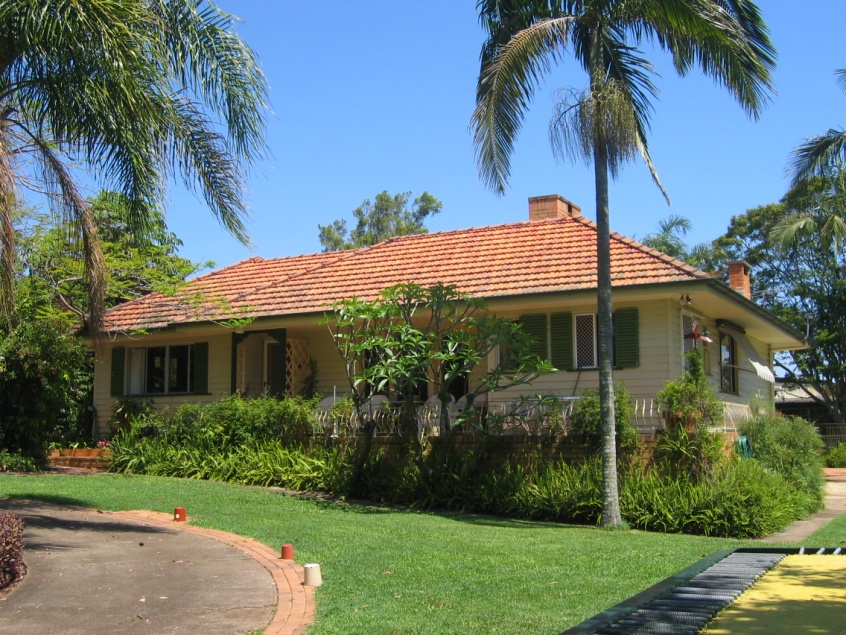
44 Beams Road Boondall was to become our address for the next twenty-eight years. Our initial reaction to the home was not favourable – it was simply not what we were looking for. Wendy really wanted a home with a more conventional layout – a lounge room with a separate dining room, four well proportioned bedrooms, maybe a family room and of course a separate modern kitchen. 44 Beams Road, were we to buy it, had none of that but it had other attributes that took us a little while to realise and appreciate. It was on a very large block of land – 120 perches or ¾ of an acre, in metric measure 3035 square metres. The home had been a farm home in years past. At right angles to the main residence at the rear was a very large converted farm shed of similar construction that had been divided into two large rooms. Fronting the shed (which we chose to call ‘the annex’) and parallel with the back of the house was a 12½ metre swimming pool, a quarter Olympic so called. The pool had a pump and a large sand filter as one would expect. At the deep end two metres deep there was a diving board. Clearly lots of fun! Three sides of the annex had very wide verandas, one side fronting the swimming pool, another side at the rear, semi-enclosed as a home workshop and the third side at the end of the driveway on the side of the house provided cover for a car. At the front of the house was a wide tiled terrace with a wrought iron balustrade fence. The front yard was quite heavily vegetated down both sides and the central driveway from Beams Road entered a circular roundabout with a plumbed fountain at the centre in front of the house.
Why did we procrastinate so long? It simply took us a while to appreciate that we were buying a home in Queensland, not in Victoria. It was different and the more we thought about it the more we realised it would be ideal for our family. The asking price was \$110,000 and we finally bought it for \$106,000 – a fair amount of money in 1981. We didn’t wish to spend our entire financial reserve on the home and we opted to take out a bank loan for about 25% of the cost. We moved in early April 1981. I noticed that the nearby post office was called ‘Boondall Heights’ so we more or less assumed that we lived at ‘Boondall Heights’ and indeed we were on the highest point of the surrounding land but after a while people thought we were trying to make our address sound more important so we dropped the ‘Heights’.
And why ‘Tanglin? Soon after moving in, perhaps midyear, we felt that our home was deserving of a name. It needed identity! Various names connected with our past life were considered, even a couple of related ‘surveying’ terms that Wendy promptly vetoed and then the name of our Club in Singapore came up – the Tanglin Club – and that became our choice. I like to think it was me who first proposed ‘Tanglin’, but I think Wendy may think differently. To avoid further discussion I had a wood-routed sign made at Jeay’s Hardware in Sandgate painted forest green with yellow letters and fixed it to our front fence. The name lasted the distance, 27 years and is now one of our mementoes of the past.
We retained Wendy’s father’s car (a Ford Fairlane) as well as the new Mercedes Benz (our second) we had acquired in Bendigo. Both were in excellent condition and we remained a two car family for a number of years.
Rotary
Having had two and a half years in the Rotary Club of Bendigo South’ on moving to Brisbane I decided I should continue in Rotary but which Club? Which Club was closest to where we lived at Boondall? Rotary at that time had strict rules about the Club to which one could belong; in effect each Club had a ‘membership collection zone’. Such zones were based on where one worked (preferred) or where one lived. I had no desire to join a city-based club so I decided to look at Clubs reasonably close to our residential address – Boondall. There was no Rotary Club of Boondall; Aspley and Chermside were not all that far away but the closest Club was Sandgate South. I fronted up there but was not impressed for reasons I do not recall. The next I tried was Sandgate – I think they met at the same location as Sandgate South but on a different night so the following week I attended Sandgate. In the course of their meeting several of their members had a huge row over the use of the Australian flag. I decided then and there that Sandgate was not my club.
My next visit was to the Rotary Club of Nundah, the nearest to Boondall on the City side – an easy drive down Sandgate Road. They met on a Wednesday evening – 6.15 to 8.00pm. Their meeting place was a senior citizens centre with the name ‘Golden Years Centre’. I was made very welcome. It was a Club of about 45 members – a good size! I did not return for a week or two and then the Club President Mr Keith Thompson contacted me and that convinced me that Nundah would be my Club. I was to remain a member of Nundah for 35 years, twice as President.
To start work
I have no record that I can locate of exactly when we arrived in Brisbane but given that my formal discharge from the Army was 27 February and having by then sold our home we would have arrived in Brisbane in about the second week of March.
I reported to the Surveyor General, Mr Mack Serrisier soon after and found him very friendly and supportive. I had to learn that I was entering a very different working environment to the military one I was used to. A position was being created for me to cover the time until the present Director, Division of Mapping, Mr Keith Waller, retired. While the impression I had been given in Bendigo at the time of my several telephone conversations with the Surveyor General that my appointment as Director, Division of Mapping was all but guaranteed I soon realised that this was not nor could be the case. The interim position created for me, with Public Service Board approval was Assistant Director – Projects. The fact was, Keith Waller had not indicated a retirement date. His age was, maybe, 61 and he could if he chose serve on to 65. My own interim appointment could only occur after the position of ‘Assistant Director – Projects’ had been advertised. That fortunately was imminent. I was called in for interview by a panel comprising Mr Kevin Davies as Chair and one or two other officers more senior to the position to which I was being considered. I had of course submitted a formal written application for the position addressing the stated criteria and I noted a couple of other applicants waiting in the adjoining office for interview, all external to the Department of Lands.
Finally I was appointed a week after Easter in late April.
Before proceeding further I should say a few words about the people with whom I would have an on-going, and at times a close association, both in the short term and for some, the long term.
The people with whom I was destined to work
Mr Mack Serisier, Surveyor General. I had first met Mack in 1962 when I used to attend the University sponsored Photogrammetric Discussion Group. Mack was then a Senior Staff Surveyor with the Survey Office of the Department of Lands. He had done the ‘hard yards’ of surveying in central and northern Queensland in the immediate post-WW2 years and especially the so-called ‘Brigalow Scheme’ - the clearing of vast areas of Brigalow scrub in central Queensland and the creation of ‘living area’ blocks for agricultural and pastoral use. The scheme turned into a disaster zone when it experienced its first drought. Mack never saw it that way. Mack was catapulted into the position of Surveyor General in about 1975. I doubt that he ever expected that to happen at the time I first met him. He was a very modest man and while I had considerable respect for him I realised his abilities were limited.
Mr Keith Waller, Director, Division of Mapping, Department of Mapping and Surveying (DMS). The position was generally but erroneously called ‘Director of Mapping’. Keith had had an earlier career in the Commonwealth Division of National Mapping based in Canberra. Keith had served in the RAAF during WW2 as a ‘leading aircraftsman’ equivalent to an army corporal. Keith often referred to himself as a ‘depression kid’ and indeed he was having been a ‘butcher boy’ in his father’s government butcher shop. He would claim that he was saved by the war since he gained some education during his time in the RAAF and immediately following demobilisation continued his education under the Repatriation Scheme finally gaining entry into the University of Queensland (UQ) Surveying Department, graduating with a degree in surveying. I first met Keith in 1962 when I was a lieutenant in the Northern Command Field Survey Section. Keith was a middle level manager in the mapping component of the Department and was my point of contact on mapping matters. I had considerable regard for his broad intellect and support. This continued when in 1975 I was appointed Officer Commanding 1st Field Survey Squadron and Keith was Deputy Director, Division of Mapping.
Mr K.J. (Kevin) Davies, Director, Corporate Management. I knew little of Kevin’s early career. He had headed a private sector firm called Davies & Andrews that had folded and Kevin was offered a role in the newly formed Department of Mapping and Surveying. It had been assumed that he would be Mack Serisier’s successor as Surveyor General although that could not be pre-determined. Kevin was said to be a ‘Mensa Man’ that is he had an IQ level of well over 100, maybe 150 – so I was told. Kevin Davies had a penchant for heading every organisation he had an association with and having done so was inclined to depart that organisation after a couple more years. Had he not become surveyor general I suspect he would have left the Department. Kevin had long been close to the political level, at times serving as campaign manager for one of the Liberal Party politicians and seemed comfortable in switching his allegiance to the National Party but I never knew whether he supported the long serving incumbent Premier Joh Bjelke Peterson. His physical build was, in a word ‘corpulent’. Kevin Davies was not an easy person to associate with at any level. I became aware that he had little regard for the incumbent Surveyor General Mack Serisier although I would not suggest that he was disloyal, and his attitude probably was extended to most others. That tended to lead to the lesser officers keeping out of his way. Surprisingly Kevin never extended his lack of regard to me and always treated me with more respect than he extended to many others.
The Assistant Directors: I will now move on to the three assistant directors – I was to be the fourth. They were Mr Ken Roberts, AD Cartography; Mr Ian Wrench, AD Reprographics and Mr Brereton (Berry) Jones, AD Records (I think). Of the three I got on well with Ken Roberts whom I would describe as a gentleman; Ian Wrench whom I did not like very much – I found him difficult to associate with but had to; and Berry Jones who did not like me and pretended I was not there although over time we developed a passable relationship. I was not particularly surprised at their attitude. I was an interloper from elsewhere, likely to usurp any ambition they collectively might have had for further promotion, although I knew all three were fairly close to retirement and I had the impression that if offered early retirement they would take it. In a way I was fascinated by their respective public service careers. All three had been juniors in the Survey Office of the Lands Department in the late 1930s, before the war. All three had enlisted; Ian Wrench in the Navy, Berry Jones in the Army and Ken Roberts in the Air Force. Ken alone had earned a commission – Pilot Officer then Flight Lieutenant. All three emerged from the war without mishap. I detected a degree of spite against Ken because he alone was commissioned, especially from Ian Wrench who took it upon himself to lecture me that being commissioned really meant nothing etc etc. I listened to him politely and gave no response. It didn’t help my entry to the Department by the fact that the Surveyor General had floated a circular brief of a page bearing my countenance and introducing me as Lieutenant Colonel Skitch. But certainly, Ken Roberts was never less than friendly and supportive.
Mr Keith Smith: On entry to the Department I knew little of Keith and probably for the first year of my service we saw little of each other. Keith was assistant to Kevin Davies; probably an Assistant Director and our paths did not cross. I was to know Keith much better in subsequent years and that will unfold later in my account. Keith was a little older than me, maybe one or two years and his entire career had been in the Department or more accurately the Survey Branch of the Department of Lands, for many years simply as a cartographic draughtsman. He was in that sense a contemporary of many of those one or two levels below him. They had all entered the department as juniors soon after WW2. As Keith told me some years later he had reached a point in his career when he realised that he needed to do something to bring his head and shoulders above his direct contemporaries if his career was to progress in any meaningful way. With this in mind he undertook a degree (or similar) in Regional Planning. I don’t think he ever served in the role of a planner, to do that he would have had to transfer to another department, but it achieved his objective – he progressed. Keith was a person of considerable intellect and perhaps his degree gave emphasis to that. It was often said that Keith gave Davies credibility. In later years Keith and I became good (if not close) friends and we enjoyed each other’s company.
Department structure
The Department of Mapping and Surveying, though not a particularly large state department nevertheless seemed to use up a lot of office space. The headquarters, if one could call it that, occupied three floors of a very substantial building called Watkins Place in Edward Street between Adelaide and Anne Streets. It was in Watkins Place that the Surveyor General and his personal staff had their offices – all very large and well furnished with government style furniture. On the same level as the Surveyor General was the research and development section that had the department’s one and only computer, a large installation, or appeared to be. The computer’s operating system had a capacity of two megabytes – this was 1981. The section was headed by Mr Rob Melloy and I was never all that clear what it did. I found Rob Melloy less than friendly, very reluctant to divulge anything of his interests or activities, almost as if he thought I wanted to take him over and I certainly had no wish in that direction. He may have been very competent in what he did but I really never knew.
Then there was Estates House, a fairly new building in Creek Street also between Adelaide and Anne Streets. The Department occupied three levels of Estate House with the Director, Division of Mapping on the uppermost level, about floor five. Adjacent and below were the three cartographic draughting sections – topographic and cadastral 1 & 2, large scale and small scale.
Between Edward Street and Creek Street fronting Adelaide Street was the large and to my mind rambling government offices covering a range of government functions including the Land Titles Office. I was never all that clear which government department it came under but certainly DMS had a close association with it.
Finally, there was the Land Administration Building in George Street, (known as the LAB) a very substantial post-colonial building of substantial proportion and structure. It housed several components of DMS all headed by Ian Wrench as Assistant Director Reprographics. On the very top floor was the Photography Section headed by the Chief Photographer Noel Woods. Not only were they responsible for DMS process photography but all forms of general purpose government photography. On the very bottom floor of the building was the Photogrammetric Section headed by the Chief Photogrammetrist Hans Nuremberg. The section had a variety of photogrammetric instruments, some certainly past their ‘use-by’ date. On another level was the Lithographic Section headed by Mr Tom Bodger. Tom was elderly and a pleasant fellow but very resistant to the change that had to happen. He retired a couple of years later and the Section was taken over by his 2iC Alan Burn.
There was certainly more to the department than what was in Brisbane. There were regional and district offices scattered around the state, three regions – Townsville, Toowoomba and one other. The seven district offices were located in lesser centres and were answerable to one of the regional offices. More were created during my time with the department.
Church
During those first few weeks when we stayed with Christina Ryan in Bonney Avenue Clayfield we renewed our connection with St Marks Anglican Church also in Bonney Avenue and its Rector, Canon Des Williams. Was St Marks to be our church? It was a little distant from Boondall and if we were in a defined parish at all, that parish was certainly Sandgate. In fact, Sandgate Parish was quite wide-ranging covering Sandgate itself, Brighton and suburbs to the north as far as the southern side of the Pine River estuary, Shorncliffe to the east and Boondall to the south. It had four churches, St Margaret’s with rectory in Sandgate, another very old church, St Nicolas, at Shorncliffe , one at Brighton and another at Boondall, the last two, quite small – a very large upkeep for a parish that had a limited income. So we decided to opt for Sandgate Parish and at least initially attended the Boondall church until the service there was closed and the building sold (to a Hindu sect would you believe) and we then continued first at St Nicolas then later the parent Church St Margarets. The Rector, the Reverend Baden Wynn surprisingly came from Armidale and had acted as Anglican chaplain to Sarah’s boarding school, New England Girls and knew Sarah slightly – was familiar with her settling in problems. He was part of the New South Wales ‘low church’ tradition and in trying to impose that on Sandgate ran into problems with many parishioners. He started a very evangelical 5.00pm service that raised the ire of many traditional parishioners to the extent that a deputation went to the Bishop (or maybe the Archbishop) to have him sent back from whence he came. I don’t think that achieved its objective, however, tragedy befell when his wife, a very nice lady developed a fast acting cancer that did not respond to treatment and she died some four months after its initial diagnosis. The family departed soon after and I suspect some of the ultra conservatives may have carried that on their conscious.
We continued to maintain a lingering association with St Marks in Bonney Avenue, mainly to keep Christina happy.
My job
What was my actual ‘job on entering the Department? The job title gave little indication’ – project mapping would seem to imply that the department was heavily into ‘mapping projects’. Nothing could have been further from the truth. There was an on-going ‘on again off again’ program of producing black & white orthophoto maps (OPMs) of built-up areas at quite a large scale – 1:5,000 I think and the greater part of Greater Brisbane had been covered at that scale. The Department had an orthophoto projector, a very expensive and complex machine that projected an aerial photograph in joining centimetre strips converted from the normal perspective projection (that is, detail in the photograph is displaced radially from the centre point of the photo) to an orthogonal plan projection (as in an ordinary map). I am afraid that is an overly simplistic explanation but sufficient for this writing! The project required the local council (in the case of Brisbane the Brisbane City Council) to enter into an agreement with the Department whereby the cost was shared 50/50 with the Council contribution paid up front. Somewhere within the agreement the Department was also to provide a companion cadastral (property boundary land tenure) map as well. This was contentious; the Department contended that the agreement did not require that in every instance the ‘cadastral companion’ had to be produced The powerful Brisbane City Council disagreed and won the dispute. A similar disagreement ensured with the Pine Shire Council and they won also.
That was the situation I found on joining the Department of Mapping and Surveying! The programme was moribund but proceeded in fits and starts after that. I had little input to the program although I wrote a comprehensive article for the Australian Surveyor magazine a year or two later. Perhaps I can find it.
I had no office. The office that I was to occupy eventually was the office of a certain Alan Leach so I was offered a table and chair in a small conference room next to Keith Waller’s quite spacious office. I wasn’t unduly concerned at that. After all – Keith was to retire shortly and when that happened his office would be mine – maybe !
Although my work diary for that first year, 1981, is fairly detailed there does not seem to be many, if any significant events. I was certainly trying to inject myself into the stream of decision making such as that was. Clearly the unstated policy was ‘don’t rock the boat’ – nothing needs to change. But I realised that I needed to better know the department and its wide spread of functions before I could credibly suggest changes. In any case it would have been presumptuous of me at that early stage to do so and I soon learnt that anything I could suggest would be passively resisted. Keith Waller liked to have long morning teas in his office with his senior staff; Ken Roberts (AD Cartography), Laurie Kearton (Senior Cartographer – Topo Mapping), Keith Wallace (Senior Cartographer Cadastral large scale), Alan Sparkes (Senior Cartographer Cadastral small scale). One might gather from that that cadastral mapping was the priority task. I might say a little more about that later in this account. Occasionally Ian Wrench if he was visiting for some other reason might join us – but when he did, his presence had the effect of stifling conversation. It became obvious that Ian Wrench wanted no interference in what he regarded as his personal fiefdom in the Land Administration Building. Keith Waller was certainly not about to change that.
My diary suggests that I was at least included in a variety of meetings and discussions on various areas of possible priority mapping – Torres Strait, Gladstone – how such requirements could be funded, use of false colour on orthophoto maps – and all sorts of related mapping issues but action rarely seemed to follow. I had a limited win on one issue, the monthly production report. All agreed that the ‘verbalised’ so called production report that seemed to happen sporadically was not worth the paper it was written on. Products, mostly maps of one sort or another could go into ‘limbo’ – out of sight and out of mind, not unlike but to a far greater extent to the situation I found in the Regiment when I first moved in. I proposed a very visual graphical report that included every task that had been started but not completed, again not unlike the monthly production report I initiated at the Regiment and while it was a considerable effort to produce the first one monthly updates would be quite simple.
Settling into the job in July I became increasingly aware that Keith Waller had lost his punch and interest in his role as Director, Division of Mapping, although he certainly wasn’t going to let it go. He maintained his attendance at meetings and numerous discussions, many of the latter he initiated; but little seemed to result from them. The Department was ‘file bound’. Huge files tied up in ‘red tape’ (actual red tape) circulated from office to office, officer to officer, inviting comment. Proposals were made – suggestions for equipment purchase (the Public Service was certainly averse to purchasing anything and I had to admit that some of the proposals were fanciful) and a multitude of other matters, some more or less relevant, others belonging to ‘cloud nine’. Keith never had less than half a metre of files piled up on his desk in two piles – his ‘in baskets’, but no ‘out basket’. I soon realised that those I could see were the tip of the iceberg. There were other piles of files, mostly in cupboards, apparently all waiting for action of some sort. I suspect that their mere presence was causing Keith a lot of concern, sleepless nights perhaps; but he couldn’t bring himself to address them. Finally towards the end of July Keith asked me to work my way through them and bring to his notice those that required significant action. I started dealing with the most recent first and then working back. I persuaded Keith that any file more than three months back, if there had been no follow up on its presence any real action or comment was probably moribund and could be returned to registry. He reluctantly agreed. I tried to put in a couple of hours of file review each day but my diary indicates that often it was only two or three days a week that I did so. Nevertheless, by September I had cleared the backlog and I detected in Keith a great deal of relief. Of course, there was still the daily intake of new files – new matters for consideration – but these were easy to handle. I remain bemused by the fact that no one had ever queried the issues addressed within the files – some were quite significant. I became Keith’s letter writer or responder to issues although Keith mostly referred my drafts to one or two others, especially Ken Roberts who suffered from the public service penchant for fiddling with any draft put in front of him with very little gain. I had to get used that. I liked Ken a great deal.
Did I enjoy all that? Not really. That first year passed quite rapidly. There was one hiccup that occurred. I was quite anxious to be accepted into the State Government Superannuation Scheme since my Defence Forces Retirement Pay, while a very useful supplement to my public service pay would not be sufficient as a single income in eventual retirement which I rather imagined would take place when I turned 60. In order to be accepted into the State Government superannuation scheme I needed to have a medical check-up by the government medical officer, an elderly gentleman, apparently more expert at carrying out examinations of cadavers. I finally had an appointment with him in about September and the report that went to the Department and the Superannuation Board was adverse, apparently I had a ‘heart murmur’, whatever that meant. I was appalled, not so much because I was alarmed at my own health, but because I would not be accepted into the State Superannuation Scheme other than at a limited level which was not much better than paying into some sort of interest bearing deposit. Wendy and I took out a salary maintenance insurance policy that would continue one’s level of salary for a set period of time should something untoward happen. It was quite expensive but seemed necessary. My own GP, Dr Bob Brown gave me a good examination but could not detect any sort of heart murmur and I applied for a re-examination. The Surveyor General gave me support and wrote a supporting letter to my own application for re-examination. Finally, I was called up again nearly twelve months later. This time it was to a much younger medical officer. I went through the tests again and the outcome was that I was A1 fit – no heart murmur and finally I was fully accepted into the superannuation scheme.
Another obstacle that I needed to overcome was my professional qualification. I was a licensed surveyor registered in Victoria and I needed to register in Queensland with the Surveyors Board of Queensland. I never really considered my professional qualification of ‘licensed surveyor’ as being notably high level although it was the requirement to be licensed in one’s State of practice in order to undertake property boundary work even in a public service role. To be licensed one needed to give an assurance of familiarity with all of the relevant State Acts of parliament such as the Land Act, the Land Title Act, the Survey Act and Regulations, the Mines Act, Forestry Act and others. I purchased copies and thumbed through them and at least achieved some degree of familiarity sufficient to ensure my transfer of Surveyor’s Board Registration from Victoria to Queensland. Mack told me I need not to have done that, after all, he was the Chair of the Surveyor’s Board. I was rapidly learning that that was the way Queensland worked. It was more the case of who you knew rather than what you knew.
Matters many and varied
Perusing through my work diary of 1981 I note many issues of greater or lesser significance, some of which had more than passing influence on the Department. Kevin Davies if nothing else was certainly entrepreneurial and liked to ‘test the water’ on his ideas. As I pick my way through my diary some entries are worth a mention.
- 8 July: Possible attachment of one or two personnel of appropriate background to Army Survey Regiment to learn about colour orthophotography. This actually happened a year or two later.
- Remote sensing of exposed areas of Great Barrier Reef – initiated by Dr Ian Harley of the University of Queensland. It never happened!
- Possible purchase of the Zeiss Z2 mapping system cost over \$300,000. Discussed with Zeiss representatives and John Van As, no hope – could never be justified to the Public Service Board.
- 10 July: tourist mapping looms. I meet Andrew Benison the Department’s self-appointed PR guru. He had accompanied Mack Serisier and Minister John Greenwood on their visit to the Army Survey Regiment in 1980. I indicated my support for tourist mapping but not at a cost to the topographic mapping programme.
- 13 July. Use of infra-red photography for orthophoto maps – an American concept. Discussed with Assistant Director Ian Wrench. My diary records ‘not a productive conversation’.
- Mapping for Sate Electricity Commission. To be undertaken by private survey firms with department support. SEC was to meet the cost but not for the extensive field work required. That project died before it started.
- Discussed digital rectification with Rob Melloy.
- Tourist map of Carnarvon Gorge National Park at request of Queensland Tourist and Travel. I suggested that the Division of National Mapping (Natmap) be asked to complete their 1:100,000 coverage and use this as a basis for anything we might undertake. Kevin Davies commented he does not like asking Natmap for favours; believes that they use this as evidence to perpetuate their continuing existence. This may have been the first indication I had of Davies almost paranoid attitude to National Mapping.
Commonwealth Games
The Commonwealth Games were scheduled for the second half of 1982 and preparation had been underway for the past two years at least – building of venues, accommodation for athletes. Kevin Davies was anxious to be part of the action – what could the Department of Mapping and Surveying do? Very little as it turned out. Anticipating many thousands of visitors coming to the fair State of Queensland – surely they would all need maps? In late August I took part in a small delegation that included the Minister’s Press Secretary Andrew Benison to visit Mr Michael Browning of the Commonwealth Games Committee to discuss a possible Department of Mapping and Surveying contribution in mapping for the Games and were advised that a contract had already been let to the RACQ back in 1980 and that organisation was to have maps available for release by September 1981 – in a month’s time! We had well and truly missed the boat! Then to add salt to the wound Browning suggested we might like to take on the job of producing a number of different posters – not our bag! Kevin Davies expressed considerable disappointment at the outcome and it seems that his disappointment translated into anger and pulled the hapless Andrew Benison thoroughly over the coals for not keeping his ear to the ground. Perhaps that incident had some influence on Benison’s later relationship with the Department’s future mapping direction.
However, we did determine that the Games Committee had not thought about a general map of the whole of Queensland – had little interest in that. Did the Department have such a map? Not really. The Department had only the ‘Stock Route’ map of Queensland, created in about 1920, a somewhat historic document pasted to a cheese-cloth back, a typical old fashioned process I will describe later, although not without significance and cartographic attractiveness; nevertheless, entirely unsuited as a tourist product.
Enter one Will Pringle. I think I must have met Will sometime in the past although I cannot quite identify the occasion. Will headed a small mapping organisation that produced general purpose small scale maps of various parts of Australia. His firm had the name ‘Travelogue Publications’. I obtained a copy of his Queensland Map and suggested to Kevin Davies that we might be able to do a deal with Will Pringle to allow us the use his repromat1 to produce our own version of Queensland for the Commonwealth Games, with of course acknowledgement to William Pringle and Travelogue.. Davies agreed and I drafted a letter for the Surveyor General’ signature putting the proposal to Mr Pringle. To my surprise he agreed and charged about \$1,000 for the privilege plus the actual cost of creating a full set of repromat. The Department agreed; the repromat arrived and a Government of Queensland cheque sent to him. The map was duly produced with additional annotations and title change to relate it to the Commonwealth Games. Perhaps about 1000 copies were printed and they sold well. But there were repercussions later.
Kevin Davies
My fairly comprehensive work diary for 1981 (not sustained in subsequent years) makes frequent reference to Kevin Davies in the chain of command (if you could call it that). Why Kevin Davies and not Mack Serisier, the Surveyor General? The impression I had was that Mack was gradually sliding into the background leaving most things to Davies who clearly was going to take over when Mack retired, perhaps not good news for me. It was Mack who wanted me, not Kevin Davies although I seemed to get on well enough with Kevin, at least as well as most people, perhaps better than many. He was at least polite to me, a politeness not extended to many others. But I doubted whether he would want me as his mapping director – I was beginning to suspect that that accolade would fall on another and I suspect I knew who. I have never been a contriver or manipulator preferring to let the cards fall as they will. I mentioned my misgiving to Keith Waller at one point and his advice was simply to ‘stick in there’ although I knew that Keith would not in any circumstance work under Kevin. On reflection it was apparent that Mack, pleasant fellow that he was, had been subject to the ’Peter Principle’, that is inevitably promoted beyond his ability level and others, Kevin in particular, took advantage of that.
In some sort of military tradition Wendy and I invited Mack and his wife Hazel to our home for dinner somewhere towards the end of the year. My diary does not record the occasion. It may have been on a Saturday night. Somewhat to my surprise Mack and Hazel arrived in a white chauffeur-driven limousine. Mack’s limo and driver discretely departed and returned a couple of hours later to take them home again. I guess Mack wanted to impress on me that his position of Surveyor General of Queensland was one to be respected. Certainly I did respect it as indeed I respected all of the Surveyors General I had met over the years and especially as Commanding Officer of the Army Survey Regiment.
An office of my own
The office I was to occupy had been vacant for some time but for an odd sort of reason I was unable to do so. It had been the office of a certain Alan Leach who had been conspicuously absent from my time of arrival and it was a while before I became aware of the circumstances of his absence. I never met him although I may have had some contact with him some years before when I had the Squadron at Gaythorne. Alan Leach was a surveyor, degree qualified I would think and considered to be a very intelligent and a competent performer. For whatever reason Leach believed that Mack had been wrongly appointed Surveyor General and another officer, namely Mr Edward Gardner who had held the office of Assistant Surveyor General and who had acted in the more senior appointment for long periods had a greater claim to the appointment; that Mack’s appointment was purely for political reasons that I personally then or now do not understand. Gardner had left the Department some time before. But there is another component to the story.
The principal professional body in Australia was then and had been for a hundred years, the Institution of Surveyors, Australia and its sub-set the Association of Consulting Surveyors representing the private sector of the profession. One needed to be a member of the parent body to become a member of the other. Leach believed that the Institution had lost sight of and had no interest in the small private sector surveying practices that made their somewhat stringent living banging white-top pegs into the ground and working from the boot of their car and off the kitchen table. In other words, a very low cost and at times a somewhat sporadic operation. I speak of this in my story of my time with the Army Survey Regiment when I formed a Bendigo based ‘Town Group’ of the Victorian Division of the Institution. In Queensland a second organisation developed called the Society of Registered Surveyors2. SORS as it became known produced a three monthly news letter of sorts that was nothing more than a sounding post for surveyors who were disgruntled with the Institution of Surveyors, especially the Association of Consulting Surveyors. The publication was ‘edited’ and largely written by Alan Leach. As it progressed it became critical of the appointment of Mack Serisier as Surveyor General claiming to the effect that he was a political puppet suggesting that there was a degree of malfeasance in his appointment. And so it went on. Mack took great exception to that and with the personal support of Keith Waller put a case to the Public Service Board that Leach should be terminated, that is ‘sacked’. At that time it was not a simple matter to sack a permanent public servant; they were very much a protected species. Early in 1981 Leach was suspended on full pay – the Surveyor General could at least do that. Then in September the Public Service Board dismissed him from the Public Service and my office became available for occupation. I became aware that Leach was not without his supporters within the Department and his final dismissal resulted in lingering ill-will.
Did I ever move into the office? I have no recollection of doing so. I noticed that as soon as Leach had departed the Public Service much of the rather worn furniture was progressively removed. The very full and locked four drawer filing cabinets were taken away presumably to be further investigated but I never knew the outcome of that, in fact I had no interest. Sometime later new furniture arrived.
Boats and Ultra-light Aircraft
This is an odd incident but it reflects Kevin Davies tendency to grab whatever opportunity that might pass his attention without having a defined purpose in mind as to how it might be used or applied. Such was the case when he became aware that the Army, or more specifically the Survey Corps had two boats up for disposal. They were identified as ‘survey water craft’. I had no recollection of how the boats were used on Survey operations – maybe on the beach assessment programme that the Corps was undertaking at the time – but Davies simply wanted one of them and had me inquire through my Corps contacts. My diary indicates that I spoke with Robin Blackburn and Dennis Puniard. One of the boats was taken over by Army Engineers and the second remained available. Nothing came of it and Davies lost interest.
There were other similar incidents that I recall during my ongoing association with Kevin Davies. One was his desire to obtain a ‘super-light’ fixed wing aircraft and have it fitted with an aerial camera. It appears that at that time one did not need to be a qualified pilot to fly one. I think their maximum permitted altitude was 1000 feet. Somehow his vague intention came to my attention and I responded in a memo that such aircraft were little more than toys and had a tendency to fall out of the sky with disastrous consequences. One way to reduce the number of surveyors the Department employed. The idea died!
Home and family
We were well settled into our home by July and were starting to have friends in for the occasional evening meal or simply lunch and afternoon tea. We enjoyed entertaining on our large front terrace, never a great number, maybe six or eight at the time and of course our children made friends at school and our pool was a great attraction. Wendy talked about finding a job in her chosen field but that was a little time off. There were improvements we needed to make to Tanglin, nothing very grandiose but one that comes to mind was a fence around the swimming pool. That was an early priority and happened soon after moving in.
Although we had the very large potential bedroom space in the ‘annex’ we were reluctant to have the children, that is, Rob, Chris and Liz sleep out there on their own at that stage of their life, so Chris and Liz took over the second bedroom and Robert the small room with the window into the family room, perhaps not ideal but they all seemed happy with the arrangement. Sarah of course was boarding at New England Girls (NEGS) at Armidale throughout the year and coming home to Tanglin on term breaks on the school arranged transport. The Annex was divided into two rooms roughly one third and two thirds, the larger with sliding doors opening on the pool side and the smaller opening into the car port but with a window on the side. The smaller of the two was to become Sarah’s bedroom and we set it up with bed and desk. Both rooms had commodious walk-in wardrobes. Would Sarah have a second year at NEGS, finish her education there – it seemed very unlikely. Sarah simply wanted to be home with the family. We enrolled Rob and Chris into the well-established Boondall State School and Liz into the adjacent kindergarten and pre-school. Boondall School was only a block away at the corner of Sandgate Road and Roscommon Road and the children enjoyed the walk. Most children still walked to school in the 1980s although Boondall School was on a Council bus route. Boondall was an excellent school with very dedicated teachers and our three flourished during their years there.
I had taken steps to enrol Rob and Chris into Brisbane Grammar School for when they completed their primary schooling. Wendy had a preference for Church of England Grammar School however their roll was full, so I tried the Brisbane Grammar expecting the same sort of result. Brisbane Grammar had been established in 1860 by an Act of the Queensland Colonial Government. In its charter it was required to enrol the sons of army officers – a somewhat archaic concept, however, it worked in our favour and both Robert and Chris were enrolled. In the event neither attended Grammar but more on that later.
Sarah’s time at NEGS was a disappointment to Wendy. Wendy had attended NEGS (from Tenterfield) and thoroughly enjoyed the experience. She had been a house captain and led in a number of sports – tennis, hockey and golf. NEGS had an eighteen-hole golf course during Wendy’s time there (early 1950s) but by 1981 the golf course had been converted into a horse riding establishment which had no interest to Sarah. In any case we would have needed to provide a horse! Over the course of the year Wendy and I taking Liz with us on the first occasion visited NEGS several times and I recall on the first occasion probably in about June soon after I had started work with the Department we needed to attend the school for end of term interviews. I had no leave entitlements but the Surveyor General kindly arranged for me to visit the Armidale based University of New England to learn about a concept of professional services charge-out procedure that UNE was developing. It was very generous of him to make that arrangement and it meant I continued to draw salary while I was absent. From interviews I had with the UNE staff I produced a comprehensive report for the Department which if nothing else justified my visit on full pay.
Sarah had developed a number of friends and had taken up tennis as her sport. She played a very tidy game of tennis and overall she seemed to have settled in to the boarding school life quite well. We had an interview with the School Principal, Dr Milburn (female) and found ourselves less than impressed. We discussed with her Sarah’s home-sickness and early difficulty in settling in, but Milburn’s response was less than sympathetic and not at all constructive. Sarah’s ‘house mother’ was far more so, very supportive and drew our attention to the remarkable crocheted woollen quilt Sarah was creating. It really was quite remarkable, and it remains a prize possession to this day. However, it was clear that Sarah had no desire to remain at NEGS but she agreed to see the year out.
Sarah had been studying Japanese as a second language both in her final year in Bendigo and at NEGS. Her Japanese language teacher (whom I think was Japanese) suggested that in changing school she should continue with Japanese and she had some flair for the language. This presented a significant problem in Brisbane since very few schools included Japanese in their curriculum. We found that Sommerville House (Uniting Church Presbyterian) in South Brisbane did so but this seemed a long way to commute daily to and fro. As it turned out the train on the Sandgate line (entraining at Boondall Station) continued through Central to the Cleveland line. One could detrain at the Vulture Street Station directly opposite Sommerville – how convenient! But of course, the question remained – would Sommerville be able to take Sarah? Wendy and I arranged an interview with the Principal, the Reverend Sam Seymore. an elderly gentleman and a one-time Anglican priest. He was very helpful and given the number of schools Sarah had attended and her interest in continuing Japanese he agreed to enrol her on the understanding that she would undertake the final two years leading to Queensland matriculation. This meant that Sarah would be completing her secondary education one year later than her Queensland contemporaries. Sarah herself had to be interviewed of course by the Reverend Seymore and that duly happened on the 8th September during a term break from NEGS.
Sarah did well at Sommerville, made many friends some of whom remain so to this day. She obtained a very credible TE Score, well above average with a good pass in all subjects including mathematics.
But back to 1981...
Queensland – a mendicant State
An exercise the Department was subject to annually was to contribute to the State’s case for additional Commonwealth funding in the split-up between all States of the financial cake controlled by the Commonwealth Grants Commission. Being a ‘mendicant State’ meant that Queensland would receive more from the Commission than it would were its share was based purely on population because it suffered disabilities greater than the other more populous States such as New South Wales and Victoria. It was a prime tenet of Federation and the Australian Constitution adopted by all States in 1901 that no person would be disadvantaged by the choice of State in which they lived. The other ‘mendicant States’ were Western Australia (they lost that status during the 1980s) South Australia and Tasmania. Of course, it wasn’t a particularly popular concept with New South Wales and Victoria who no doubt argued against the concept sometimes acrimoniously but at that time not successfully. The Queensland case was based on the fact that Queensland being the second largest State in area also had the most dispersed population so requiring substantially greater infrastructure development. I landed the job of contributing to the Queensland case in terms of the need for mapping and surveying. In so doing I had to ignore the obvious fact that the Commonwealth already carried out most of the mapping in Queensland anyhow, through the agencies of the Army and the Division of National Mapping and this was really a no-cost gift to the State. Anyhow, I did my best but for me it was a ‘tongue-in-cheek’ exercise and I doubt that it had much influence on how many dollars Queensland received.
‘Sunmap’
I have mentioned previously Andrew Benison, the Minister’s press secretary. Although I initially found Andrew a pleasant enough fellow, I failed to appreciate the influence he had on nearly all matters relating to nearly all the Department undertook at least on the mapping side. His belief was that the Department was too locked in to the past, too stodgy and needed a facelift and to a large extent I tended to agree with him. But in November 1983 Keith Waller had a Benison proposal land on his table – a new logo with the title ‘Sunmap’. As it turned out it wasn’t a proposal; it was fait accompli – adopted. However, I was moved to do something about it but what? To me it was a joke and would raise more than a chuckle from the mapping community nationally. Does Queensland have a lien on ‘sun’? Tourist and Travel Corporation had adopted the logo ‘Queensland, the Sunshine State’. Perhaps that is where Benison connected. I wrote a memo to the Surveyor General suggesting that if the Department wanted a name for its mapping products there was nothing wrong with ‘Queensland Map’. It went over like the proverbial lead balloon. I didn’t do myself much credit for my stand and Mack Serisier mildly rebuked me. Benison knows – he is the expert. So, it stayed and when the new \$30 million building at Woolloongabba was completed in 1987 with much aplomb it was named ‘Sunmap Centre’. The maps became known as ‘Sunmaps’ Oh well; the name stuck, silly as it was. I see it is still in use although the Sunmap Centre has been renamed ‘Land Centre’.
The Private Sector
I have made mention of th ‘private sector’ several times so far but something a little more comprehensive needs to be said since it was to become a significant factor in the operation of the Department. It would not be going too far to suggest that the primary role of the Department was to support and protect the surveying and mapping firms that comprised the ‘Private Sector’. Thus there was the Government Sector (not referred to as such) and the Private Sector comprising the quite numerous private surveying practices throughout Queensland, perhaps venturing across the border into New South Wales. Local Government was undefined and fell somewhere in between3. But it often seemed to me that the Department’s interest remained with the larger practices and especially those who had ventured into the more capital intensive area of mapping, especially photogrammetry. Furthermore, there were those firms that were ’in’ and those who were not. I have mentioned before that any graduate surveyor, especially those who had become ‘licensed’ to carry out cadastral boundary work could ‘hang out their shingle’ proclaiming their role in the profession and sell their services to the public. Theirs was a very low cost operation working from home, off the kitchen table and out of the boot of the car. Their field equipment might consist of a rather antiquated theodolite and a ‘chain’ (surveyor’s measuring band – no longer a ‘chain’) – and a pile of white top pegs. The chain would need to be ‘standardised’ in length from time to time and that was done on the Department’s standard baseline in the lane way next tho the Land Administration Building in George Street. It had been that way for years – perhaps a hundred years. But the Department was not at all interested in helping those sorts of practises and considered them un-professional and a blight on the profession. I never really knew quite where our Surveyor General Mack Serisier stood on these issues but it was quite clear where Kevin Davies stood – he would see all production aspects of mapping in any shape or form passed out to the private sector. The trouble was, no private sector had the equipment or capacity to undertake such work. It wasn’t to be until 1986 that the Department consolidated into the new ‘Sunmap Centre’- (later ‘Land Centre’) at Woolloongabba and no doubt that move had been on the drawing boards for some time before, that Davies was reported to have lamented ‘ I have for years proclaimed the virtue and policy that Governments should not be in the business of production – all production should be the role of the private sector and here am I in charge of the largest government production enterprise in the State’.
Association of Consulting Surveyors (ACS)
I quickly came to the conclusion that the Association of Consulting Surveyors, a sub-set of the Institution of Surveyors – Australia, had a significant influence on the operations and policy development of the Department. Kevin Davies had been very much part of the creation of the ACS formed because it was thought, probably rightly that the IS-A was too conservative in its outlook, locked into the past, going one step further, run by a lot of deadwood. On the 10th and 11th December I attended an ACS Seminar at Griffith University – little or no technical content and very political.
To be a Programme Manager
My diary tells me I attended a ‘CPAG’ Meeting (Corporate Planning Advisory Group) on most Tuesdays – a weekly event. The meeting was attended by Dave Kirchner (Survey Division), Jack de Lange (Survey Division), Pat Killoran (Corporate Planning), Laurie Kearton (Cartography) and Rob Mellloy (R&D). Keith Smith made a brief appearance towards the end of the meeting. I am not sure to whom the resulting advice was given or that the advice was ever taken and acted upon. More times than not I would find the meeting cancelled through lack of a quorum, hence it seemed not to rate very highly in the minds of many. But there was one such meeting on Tue 22 September that I must have found of sufficient significance to record fully in my diary. Perhaps I was getting it ‘off my chest’. The meeting concerned the appointment of a Programme Manager to coordinate the activities of Project Managers dealing with ‘Client Mapping’ that is, mapping projects carried out for external clients for a price, usually allocated to private sector mapping firms. Defining the requirement a little more, Programme Managers were to be at the Assistant Director level which narrowed down to our current crop of Assistant Directors, Ken Roberts, Ian Wrench, myself and maybe Keith Smith. There was also some suggestion of a Programme Manager for standard mapping, both topographic and cadastral but there seemed to be little point in that.
According to my diary I commented that most projects I had seen pass through the Department tended to start and stop in Division of Mapping, but the point was not accepted by CPAG members, especially Rob Melloy. So be it! I agreed that there was a need (may be) for a Programme Manager to coordinate client orientated projects – worth a try. (In fact, I felt that I was already doing that; after all, my formal appointment was Assistant Director – Projects!) I further stated that if I was to be so appointed then I would want a clear statement of my responsibilities and authority. (Such an appointment would cut across some ‘line’ manager’s responsibilities – I probably had Ian Wrench in mind.) At that point I could see that I was getting up the noses of some of those present but I ploughed on. I went on to say that I recognise that a gulf existed between some of the branches within Mapping Division and within the Department, especially cartography, photogrammetry and reproduction where the main stream of map production flows. I continued – I believe that the Programme Manager for standard mapping must be the Director of Mapping – it is his bag! If he wishes to have a 2IC production manager now or at some time in the future to handle the detail and coordinate – so be it – he can so appoint and confer on him the appropriate authority. I then proceeded to a statement that produced a voluble and testy response from Rob Melloy, I said ‘the only reason Photogrammetry and Reprographics is as it is, is because they happen to be under the one roof (ie, the Land Administration Building)’ Melloy did not suggest another reason.
Finally in a sort of official/unofficial way on the 10th December I was appointed Programme Manager Client Oriented Projects. What did all that mean – not very much as it turned out. I more or less assumed that I had the authority to proceed across all branches and I came to know many of the private survey practices that constantly sort work from the Department. More about that later.
A conference in Sydney
I found the Department was quite generous about sending staff to conferences; well at least it seemed so to me. The Army on the other hand was quite stingy. On the 3rd November I was sent to a four day long seminar at the University of New South Wales in Sydney titled Geodesy, Photogrammetry and Surveying. Graeme Rush, an up and coming surveyor attended also. At the time and maybe still is, the University of New South Wales was the doyen university of the surveying profession. I don’t recall a great deal about that week, but my diary tells me that we stayed on campus at Warrane College and had dinner with some of the luminaries of the profession, Glyn Roberts from Tasmania, Mike Elphick from Newcastle University and of Sydney Opera House fame. Mike Elphick gave a very interesting paper on the surveying aspects of the Opera House construction where he developed and used a system of three dimensional coordinates to control the erection of the sail-like roof structure. Arriving back in Brisbane I decided to justify my attendance by producing a conference report detailing each paper given and its relevance to the Department’s role. I doubt that it was read by any and certainly had no influence on any subsequent actions.
An Oxley Library Project
The Photographic Branch of the Department, run by the Chief Photographer Noel Wood held a broad responsibility for all levels of photography needed by the Queensland Government. Every year over the space of a fortnight Noel and one of his associates undertook a ‘Cooks Tour’ of the State taking photographs of all the public works being carried out, either by state departments or contracted to private construction firms. This had been happening since to advent of photography in the mid 19th century, probably since the creation of Queensland as a State and as a result the Department held a remarkable collection of photographs covering the progressive development of the State. All the early photographs were on glass plate in negative form and had been well stored and catalogued. Very few people knew anything of this, had little knowledge of this unique historical resource held by the Department. The Department, although conscious that exposure of this historical collection would reflect well with the public, nevertheless wanted to pass the responsibility of maintaining the collection to a more appropriate body, the obvious one being the John Oxley Library. The John Oxley Library was formed as separate component of the Queensland State Library in 1896 and dealt with Queensland history. Yet it seemed totally unaware of the collection and needed little encouragement to take it over the collection although still needing the Departments help in managing it and developing it further with each passing year. I attended a meeting with Keith Waller and our Chief Photographer Noel Wood and resolved that we undertake all photographic work, reproduce old photos that might be deteriorating and produce prints (the Library’s preference). We were to have the Library’s own photographer detached to the Department to assist in the work..
It might have been a year later that the Courier Mail newspaper was let into the secret and they ran a couple of double page spreads proclaiming the photographs as the historical find of the century.
The end of the year and party time
Australia comes to a stand-still for the week between Christmas and New Year and so do all the government departments. I think the Department of Mapping and Surveying closed down completely from a few days before Christmas, depending on where the weekend preceding Christmas Eve fell. On that last working day the various branches of the Department went into party mode. Food and liquor was brought in in large quantity and by lunch time the place had become little short of a bedlam. It seemed to be something of a tradition for some of the private sector firms to bring in large trays of chocolates – why? I found it almost bizarre. Senior staff and I seemed to be included in that drifted from branch to branch – Estates House, Watkins Place and the Land Administration Building. I was mildly disgusted by it all and made a break about midday and came home. I was more than surprised when I returned to work some days later to find everything cleaned up and the routine back to normal – as if Christmas hadn’t happened.
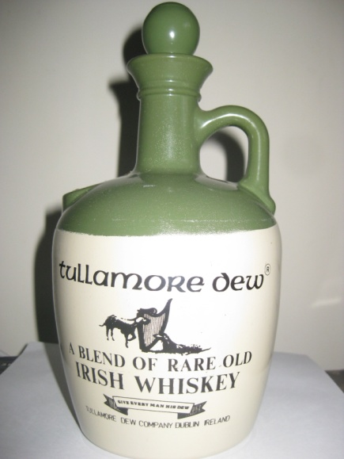
But there was a more civilised function some days before Christmas and that was a restaurant party with wives. Wendy and I were at a table with the Surveyor General and one or two other couples. I think it may have been at ‘Silks’ restaurant at the Albion Race-way – trotting. Of course this was a function we all paid for and the numbers attending was not particularly high. But it was a very pleasant night and to my surprise and some degree of embarrassment I won a lucky door prize – an earthenware bottle of Tullamore Dew Irish Whiskey. I wanted to give it back and call for a re-draw – I felt I was too much a ‘Johnny-come –lately but Mack prevailed and insisted I keep it. Believe it or not I still have it and on inspection there is still a drop left in the bottle. Why do I keep ir? For old times’ sake I suppose. Wendy has often said I should put it in the bin – but it is an attractive bottle.....
.
1981 and my first year as a public servant came to an end.
1982
My diaries for 1982 tend to be somewhat scatty although without doubt it was a significant year in several respects. I had a relatively short Christmas break and was back at work on Tuesday 29 December. Of course, I was largely on my own and my diary tells me that in keeping with public service tradition we were on ‘half staff’ routine so I remained at work in the morning and came home at lunch time. I was acting Director of Mapping for a week or two while Keith Waller took leave and generally simply got on with the routine staff work. As Programme Manager Client Mapping I prepared a broad instruction in letter form to project managers setting out procedures we would hence-forth follow and my diary, scatty as it is, records that I prepared and responded to ministerial correspondence on issues such as tourist mapping directed to the Tourist and Travel Corporation.
.At home my diary records numerous visits by friends both local and distant. Anne and Peter Young and no doubt most of their wonderful family called in on their annual excursion from Wodonga in their Mini-bus to visit and stay with Anne’s mother Mrs Gwen Moseley at Caloundra. Sarah’s friend Jenni Carey (‘best friend in the whole wide world’) visited and stayed for a couple of weeks in mid January. Old friends Bev and Rob Fairbanks from Eagle Junction, our near neighbours came to tea and we learnt that their daughter Donna was going to marry a young fellow called Eddie and asked me to be their ‘master of ceremony’. Daryl and Heather Hocking came to an afternoon/evening barbecue on a Sunday. Daryl had recently been appointed Officer Commanding 1st Field Survey Squadron at Enoggera with promotion to Major. I had been instrumental in bringing Daryl into the Corps when I was a young lieutenant in 1962. We had dinner with Staff College friends Ian and Jan Heldon at their home. Wendy and Jan had become close friends at Staff College although I was never close to Ian but we got on quite well.. Reverting back to 1981 I must make mention of Keith and Rae Grimley, our neighbours over the back fence. It was only on the second or third day of our moving in to Tanglin (it wasn’t even Tanglin at that time) that Keith came bounding over the back fence to welcome us to Boondall. Also in that first year we became quite close friends with our lateral neighbours Allan and Rosemary Unkles. Allan was a cartographer with the Forestry Department so we shared some common ground in our work interest. In fact we developed neighbourly friendships with all of our neighbours – all six!
The family holidayed at Coolum that year. I think they may have stayed in Grace Warburton’s little home with or without Grace (Aunty Grace to our children and a contemporary trainee nursing colleague of Wendy). I was able to visit only at weekends. An attraction at Coolum was that David and Shirley White lived close by and we had been close friends of the Whites for many years. Shirley’s parents Harry and Jean Ward who probably financed the home many years before were frequent visitors also and there were few people whom I held in greater regard. More about Harry and Jean later. The major mishap that occurred during those two or three weeks at Coolum was that Christopher contacted ‘Mumps’ and his face swelled up like a red balloon. Thankfully none of the other children caught the disease and neither did Wendy or me. It seemed to be fairly short lived fortunately and he was over it by the time the family returned to Brisbane School resumed on the 25th January – for reasons unknown to me the Australia Day holiday had been moved to 1st February. Rob and Chris happily returned to Boondall State School and Liz started in grade 1. Sarah was to start school at Sommerville House in late January but first her subject equivalents had to be assessed to determine her year of entry. In 1982 years of achievement in all subjects were quite out of step making it hard to transfer schools between States, each State convinced that theirs was the best. Sarah in her schooling had started in Victoria, transferred then to Queensland, then back to Victoria, then to New South Wales and finally back to Queensland – not at all uncommon with Army children. Queensland had recently adopted a system of continuous recorded assessment over the final two years of high school and it was hard to break into that assessment process. I had an interview with assessor, a Mr Eckersley, presenting all of Sarah’s grade and subject assessments from both Girton College in Bendigo and New England Girls in Armidale New South Wales. They were all consistently good but Eckersley’s recommendation was that Sarah should complete the fully two year programme. This meant that she would be graduating one year older than her class contemporaries. In the long run it worked out well.
I continued with Rotary and the Rotary Club of Nundah. I can’t say that at that stage I was an enthusiastic Rotarian. Nundah was a very different Club to my old Bendigo South Club but I attended their Wednesday evening meetings and enjoyed the company. I found a convenient city club in which to ‘make up’4 and that was the Rotary Club of Mid City. The association I formed with that Club was to be of some significance some years later.
Institution of Surveyors – Australia – Queensland Division
I have previously mentioned in my army writing my interest and membership in the Institution of Surveyors – Australia from the time when I became a student member plugging away at Surveyor’s Board examinations soon after I was commissioned in the early 1960s. On completing these and finally becoming a licensed surveyor in 1969 I upgraded to Corporate Member, i.e. full voting member and on moving back to Queensland I transferred my membership to the Queensland Division. As in Victoria the Institution and its sub-group the Association of Consulting Surveyors had a substantial influence on how the profession was conducted. I have spoken of this previously in the ‘Leach affair’. I continued my interest in the Institution and towards the end of 1982 when I took on editorship of the Queensland Surveyors Bulletin, a monthly publication I was invited to become a member of the Institution’s Divisional Committee. Without doubt the Department and probably more specifically the Surveyor General was very supportive of the Institution and wanted that small quarterly publication brought to a standard in content and format that would reflect well on the Institution and with that the Department itself. The existing Bulletin at the time was a small, slim pocket size publication of about a dozen pages, no photos and fairly prosaic content. In taking on the job I was told that I was to give it priority and as much work time as it needed. At this point I will simply comment that it was the Bulletin that gave me access to the higher echelons of the Institution and I remained there for a number of years even after I relinquished Bulletin editorship. Membership of the Divisional Committee was by annual election and for some reason I kept getting elected, perhaps because I continued to show an interest which few did. Through the Institution and its Divisional Committee I came to know many of the doyens of the profession, more especially those in the private sector such as Ian McGhie, Ian Keilor, Graham Heilbronn, Robin Skett, Ray Fergusson and others whose names have slipped past me. Academia, both the Queensland Institute of Technology (later University) and the University of Queensland liked to maintain some involvement with the Institution although I had the impression that they tended to ‘look down their noses’ at it since it represented the hard working not very academic practising surveyors. Nevertheless I came to know some of them such as Dr Ian Harley – said to be brilliant – until he took up a much sort-after appointment in London and as far as I know remained there for the rest of his life.
I can’t say I became close friends with many, maybe any. I did so for a while with Ian McGhie – even took him to lunch at the United Service Club and Ian reciprocated at Tattersall’s Club – but we had a bit of a stand-off over a work matter and that put an end to it. There was the inevitable divide between the public service/government sector and the private sector, that is, those that owned private surveying firms. It was rare to see surveyors employed by private firms taking an active role in the Institution and certainly not in the Association of Consulting Surveyors which was very much a ‘bosses’ organisation. The profession still comprised a large number of small firms engaged in mainly cadastral (property boundary) surveying and by and large cadastral work remained the bread and butter of even the larger firms. The private surveying firms, notably the larger ones, of course could undertake large land development schemes, sub-divisional work on a large scale and although that had once been the role of government ‘staff surveyors’, during the 1970s such work had drifted to the private sector as the government departments reduced their surveying staff.5
The Russell Island Affair
Russell Island became a ‘cause celeb’ in Queensland in the 1980s. The following is from Wikipedia:
*‘Russell Island in Redland City is the biggest of the Southern Moreton Bay Islands), situated between the mainland and North Stradbroke Island in the state of Queensland, Australia. The island is eight kilometres long (north-to-south) and nearly three kilometres wide. It is surrounded by luxurious mangrove. The channel separating it from the mainland is known as Canaipa Passage. Russell Island is known for the infamous land scams of the early 1970s when many of the islands farms were divided into over 20,000 blocks At the time, the area, with a population of less than 500, did not have a local authority enforcing planning regulations.(It was known as ‘State Unincorporated Land.) Heavily advertised and sold off by unscrupulous vendors, these blocks were often not where the unwary customers thought they were buying. It all rode on the vague promise of a bridge by the National Party government at the time. Media reports exposing the scam pointed to blocks that were underwater at high tide and the lack of public land.*
It might have been possible to subdivide Russell Island attractively but that did not happen. It was subdivided into a totally un-imaginative grid – north-south and east-west – and largely remains that way today. To have re-designed the massive sub-division would have required the resumption of all title, the amalgamation of all land parcels and then a total re-design and re-survey – removing all of the several hundred or maybe thousand white-top survey pegs. Too hard – as is said, ‘you can’t unscramble the egg’. A staff member at the QIT developed a proposal to do so but it couldn’t be adopted. It was even taken up by a leading QC but to no avail. The problem was exacerbated by the fact that houses had been built on some of the higher blocks and a certain amount, not much, of access roads or tracks had been constructed.
A long running court case ensured with the State (through the Department of Mapping and Surveying and the Land Titles Office) attempted to sue the developer and the surveyor who uncritically undertook the subdivision. Staff Surveyor Jack de Lange was appointed to represent the Surveyors Board and the Surveyor General of Western Australia was brought across from the West as an expert independent witness. The case staggered on for over two years – it became a full time job for Jack de Lange and I think the longest running case in Queensland jurisprudence – and finally fizzled out without charges being laid. The developer had morphed into something else and no longer existed as a legal entity. It was only the surveyor who was penalised – the Surveyor Board withdrew his license. I suppose he worked for someone else after that!
Russell Island was finally foisted onto the Redland Council. I don’t think they were too happy about that; they saw it as being nothing but a problem but now in 2016, thirty six years after the event it all seems to have settled down although I think it is still but sparsely settled. The bridge never happened.
Harry Ward
The Institution had a membership grading of ‘Honorary Fellow’. It was rarely applied and generally it was considered that the grading of ‘Fellow’ with the post nominal of FISA was a sufficient accolade. (I became a Fellow many years later). I can’t recall that there were any Honorary Fellows on the Queensland membership list – a few in New South Wales and Victoria. I think it was Wendy who suggested to me that Harry Ward should be recognised for his service to the profession and I gave it some thought, probably discussed it with Keith Waller who instantly agreed.
Through Wendy’s long time friendship with Shirley White, daughter of Harry and Jean Ward, I had known Harry for many years. He had helped me when I was studying for the Surveyors Board examinations; in fact he had helped many students over many years. Harry had joined the British Colonial Survey as a young man after he had obtained his Certificate of Competency from the Surveyors Board. He was assigned to the Colonial Office in Malaya and continued there with his wife Jean becoming Chief Surveyor and Surveyor General. At the outbreak of World War II Harry continued in that role in Singapore and after Japan entered the war in 1942 he joined the Singapore Volunteer Rifles, a militia unit. As the Japanese advanced down the Malay Peninsula Harry’s family, wife Jean, and children Doug and Shirley returned to Australia while Harry remained. Who would believe that Singapore would fall? Fall it did! Harry who stayed on to try and protect his staff was taken prisoner and finished up on the infamous Thai-Burma railway construction causing the death of many. Harry survived and after the war stayed on in Singapore as Chief Surveyor for a couple of years, maybe longer. On returning to Australia he worked as Chief Surveyor for Theiss-Peabody, the open cut coal mining company opening up the coal fields of central Queensland. He left the Company when the Japanese firm Mitsui joined the venture in the early 1970s and in semi retirement he joined the Surveying Department of the University of Queensland as a field demonstrator and unofficially, a mentor and support for students. He was highly regarded and many who graduated would agree that they owed their degree to Harry Ward.
That’s the story of Harry Ward and the basis of the submission I put together for Harry to become an Honorary Fellow of the Institution of Surveyors. Of course, there was little point in me being the proposer; I needed to get someone better known and also a seconder. I approached the Surveyor General but Mack had misgivings. Keith Waller was very supportive but finally Mack talked to Dr Ian Harley, the Surveying Department Head at the University of Queensland. I believe Ian’s comment was ‘I wish I had have thought of that first’. The submission went in to the Federal level of the Institution and finally Harry was awarded Honorary Fellowship. The conferral took place at the next Institution Annual General Meeting with all of his family present.
Why have I recorded all this? I note in my diary that during January and February I spent quite some time researching and preparing the submission. Later an Institution annual award for the individual surveyor who had made the greatest contribution to the profession of surveying over the previous twelve months was named the ‘Harry Ward Award’.
Cedar Lake
The Association of Consulting Surveyors each year held a weekend conference at chosen locations. The 1982 ACS conference was at Cedar Lake on the Gold Coast hinterland. Kevin Davies considered it appropriate that a few of the Departments senior officers (I just scraped in to that category) should attend to better understand the problems of the private sector. So I attended with Wendy and we took Robert, Chris and Liz, maybe Sarah. Cedar Lake was a time share resort, perhaps one of the first before the concept of time share was fully accepted by the public. I think the sub-text of the conference was to flog time share to the attendees and I recall a session on time share and why it was so good. Neither Wendy nor I were particularly impressed. Nevertheless, Cedar Lake was a very pleasant place. There was indeed a lake in which one could swim. The chalets were tiered at two or three levels around to lake on one side, more or less let in to the hill with grassed earth roofs – bit like living in a cave. Nevertheless, the children loved it and we returned privately a couple of times in subsequent years. The next ACS conference we attended the following year was at Hervey Bay and I might say more on that one later.
Rob Melloy
Generally, I got on well with my staff colleagues although I had to tread cautiously with assistant directors Berry Jones and Ian Wrench. But the one exception was Rob Melloy who was the research and development guru although I do not recall much research and development emanating from his small section. He was also responsible for the only decent sized computer the Department had; quite a large chunk of equipment with two megabytes of memory – a large ‘mini’ in the jargon of the time! Again, I was never sure quite what its role was and I think it was probably applied to the surveying side of the Department. For reasons I never understood Melloy seemed to resent my presence and any proposal (mostly small ones) I put forward I could be sure that Melloy would bat them down. The Department seemed to work on a collegiate basis – every small proposal or suggestion was passed around senior staff for comment, even those for whom it would have no impact or application. I could be sure that anything I put up would attract a negative response from Melloy, not only on a flying minute but also across a meeting table. There was one notable instance towards the end of 1980 on the issue of the role of the ‘programme manager’. It seemed rather pointless at the time and went nowhere. I learned to live with Melloy’s attitude which seemed to modify over time. Really, he had nothing to fear from me. Finally a year or so later, Keith Smith brokered a ‘truce’ between us – a bit one sided, I had never shown antagonism towards Meloy and he invited me to have lunch at the Tattersalls Club where he was a member. I accepted of course and I recall it as a pleasant occasion. Of course I reciprocated and invited Melloy to lunch at the United Service Club, probably with Keith Smith but I do not remember all that much of the event.
The Army
The Surveyor General Mack Serisier greatly admired the work of the Survey Corps and I could reflect on his visit to the Army Survey Regiment with Minister John Greenwood and press secretary Andrew Benison, a visit that lead to my appointment to the Queensland Department of Mapping and Surveying. I found it interesting that Kevin Davies had a similar attitude which was in contrast to his very negative attitude to the Commonwealth Division of National Mapping and especially in the statutory role of its Director as Chair of the National Mapping Council. Browsing through my work diaries of 1981 and 1982 I am surprised at the very frequent contacts I had with my old cohorts of the Corps – Don Swiney, Paul Pearson, Dennis Puniard, Jim Mitchell (who had taken over command of my old unit the 1st Field Survey Squadron) and others although I cannot recall much coming from that. Our tourist mapping activity was starting to develop but from what? We had no suitable repromat on which to base such maps. I was very aware of the military series aeronautical charts at scale of 1:1,000,000 and 1:2,000.000 compiled accurately from larger scale topographical maps. I put it to Kevin Davies that this would be an ideal basis for tourist mapping of Queensland and even for a Queensland State map to replace the Pringle map. Mack Serisier, or it may have been Kevin Davies by then signed off on a letter to Directorate of Military Survey in Canberra and before long we had film positive repromat of all we needed. But it was going to be some time before we actually produced any products. Later in 1982 we commenced what was to become the ‘Amazing Queensland’ series of small scale tourist maps. The name ‘Amazing’ which I hated was foisted on us by self proclaimed marketing expert Andrew Benison supported by Kevin Davies.
Kevin Davies, appointed Surveyor General in 1983 although ‘acting’ up till then developed a working relationship, almost a friendship with Corps Director Colonel John Hillier, one of the few who did. Perhaps that was engendered by their mutual but unreasonable distrust of the Division of National Mapping and more especially the Division’s Director, initially Tony Bomford and later Con Veenstra. Mack Serisier certainly did not share that attitude but in the time I was in the Department it was Kevin Davies who took the running.
1st Australian Congress on Surveying and Mapping
The Institution of Surveying Australia held a national conference which they chose to call a ‘Congress’ each year usually in one of the capital cities and the Australian Institute of Cartographers conducted their national conference (simply called a ‘conference’) each two years. In 1982 the two institutions decided to hold a joint conference – The 1st Australian Congress on Surveying and Mapping – in Canberra from 19 to 23 April. I attended at Departmental expense (they were very generous) and I think I relieved them of at least accommodation expenses by staying with old friends, John and Mary Van de Graaff. I don’t recall the venue but Canberra abounds with conference venues. There was the opportunity to visit one or two places of interest – the Belconnen Observatory and old (then the current) Parliament House which despite my many visits to Canberra during Army days I had not previously visited. The conference sessions were of some interest and as always I took copious notes to do what with? – I suspect very little. I may have produced a summary of papers later to present to the Surveyor General, if only to establish that I gained something from my attendance but little seemed to be expected and of the half dozen or so who attended from the Department I would have been the only one to do that. For most I think it was just a ‘swan’. The annual dinner was no doubt very enjoyable and I was able to meet with a few old Army colleagues. The Corps was always a good contributor to such conferences, often lifting the content of the sessions to a somewhat elevated plane. I recall an old Corps colleague (it may have been Jim Stedman) – lifting the content to ‘a level somewhat above the ideal cement mixture for a ground mark’. A bit unkind really but it made a point.
Commonwealth Games 1982
The Commonwealth Games were to be held in Brisbane from 30 September to 9 October and from the beginning of the year (indeed, 1981 also) Brisbane was in a games fever. Queensland had never won the accolade previously to hold the Games, the last time in Australia was twenty years before in Perth in 1962. At that event the Army took a major part in its organisation and I remember that very well because my old friend and colleague Malachy Hayes was in charge of the wrestling events. (Malachy confessed he knew nothing about wrestling) As the Brisbane Games developed it became apparent that the Army was going to play a major role also. On reflection I thought that presented a rather militaristic appearance but Australian soldiers certainly at that time were very non-threatening in appearance.
My Department or more particularly Kevin Davies remained sore that we were too late on being awarded the mapping contract, but we persisted with the Pringle map of Queensland. It was far too late to do anything with the aeronautical chart repromat we received from the Survey Corps or more specifically the Army Survey Regiment. The Pringle map in what we now knew as ‘Sunmap’ colours emerged but with appropriate credit to ‘Travelogue’ publications came out in about July and appeared to sell well but we only had authority from Pringle to print and market 1000 copies. That had rather embarrassing repercussions later.
An inevitable ‘change of command’ (to use military terminology)
About mid-year Keith Waller called me in and told me that Mack Serisier had told him that he had had enough and was going to take retirement. Mack must have been well past 60 years so it was not surprising. If Keith had ever thought of filling Mack’s shoes that idea had long passed him by. He said that there was no way he, Keith, would be prepared to serve on under Kevin Davies who inevitably would be the next Surveyor General. He proposed to tender his own resignation straight away. Of course, in the public service that wasn’t an overnight action. There were many things to resolve. In the event Keith departed on the 22nd September 1982 and Mack a month later on the 15th October. Both took some sort of severance leave in their remaining few weeks and in late August I found myself temporarily appointed Acting Director Division of Mapping. I refrained from moving into Keith’s office, he hadn’t really cleared it at that stage and I didn’t do so until the New Year and only after I had discussed it with Mack Serisier. I didn’t wish to be seen as presumptuous. Of course for the permanent position I needed to submit a formal application – I did so and at Keith’s suggestion I also applied for the position of Surveyor General. The latter was a little quixotic and I certainly did not expect anything to come of it. I was brought to Queensland to be appointed Director Division of Mapping or in the shorthand of the time – Director, Mapping. Did applying for the position of Surveyor General do me any good? Probably not but as Keith Waller commented ‘nothing is a certainty in this wide world’. I couldn’t even be certain that I would get Director, Mapping despite the earlier intent, at least the intent of Mack Serisier. With Mack gone there was no certainty in that. I continued as Acting Director until after Christmas and then Keith Smith took over. Was that an indication of the future? Not necessarily, it was public service policy to give all contenders for a senior appointment a share of acting appointment.
Interviews for Director, Division of Mapping commenced on the 25th September but the appointment was not made until the 17th March 2003. It was Keith Smith. Was I disappointed? Of course I was, but it was a disappointment with more than a touch of relief. The decision was conveyed to me by John Cridland by phone and the following day Wendy and I were heading to Melbourne for the 1983 Institution of Surveyors Congress. A month later after returning from Melbourne on the 19th May I was appointed Deputy Director Division of Mapping with a significant pay rise and issued with a government car.
Home life – 44 Beams Road – Boondall
My work diary only makes passing mention of life at home. Robert, Christopher and Elizabeth were well settled into Boondall State School and we were well satisfied with that. Their teachers were very professional and appeared to know our three by name and at parent/teacher interviews their progress was rated satisfactory. Robert seemed to be a challenge but was accepted uncritically. In 1982 we were well satisfied that their future schooling was well planned and in place – the two boys to Brisbane Grammar and Liz to S Margaret’s Anglican School. Sarah was well settled at Sommerville House and was quick to make friends – as always in Sarah’s case, friends for life. There were always opportunities for parent involvement at school and we tried to participate as well as we could. It struck me that the Queensland State School system was rather old fashioned – to the extent that it reminded me of my own school experience during the 1940s. That certainly didn’t concern me since Sarah in particular had been subjected to every educational experiment imposed on schools in Victoria few of which were of value. Quisnier Rods comes to mind as a way of learning mathematics. Sarah was naturally quite good at maths. As always happens when moving from State to State there are gaps in many subjects and especially the arithmetic subjects – algebra, geometry and others.
In interviews at Somerville it was suggested that Sarah could be helped with additional out of school hours coaching. We found that there were quite a few young people – university students – listed as coaches or recommended as such and we took one on; one or two late afternoon sessions each week. It started out well enough then Sarah complained that he wanted to get too close to her and introduce inappropriate lines of conversation, so we dismissed him. Then we found the Vicki Grimley over the back fence was willing to take on coaching. Vicki had completed her own secondary schooling, had graduated as a top student and had started University. That worked out extremely well and Sarah benefited greatly.
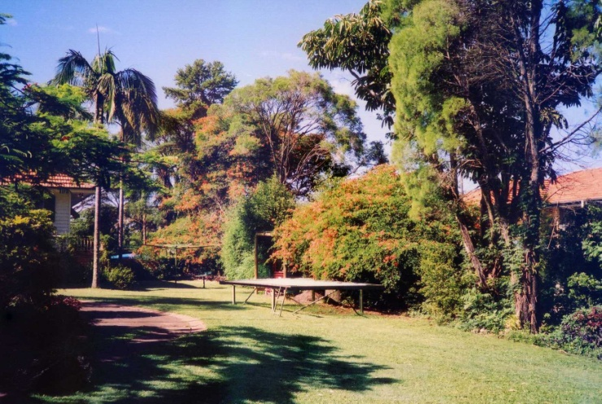
Home life throughout 1982 was easy. We became increasingly attached to ‘Tanglin’, the first home we had bought where we had any certainty of permanency. The children fitted in very comfortably and enjoyed the pool and the spacious grounds. Cubbies were built and abandoned, a tree house or at least a landing in the large spreading Poinciana tree and adventures played out in the yard. In August of that year I acquired a full sized trampoline from St Marks Anglican Church that had been the property of the now defunct Anglican Boys Club; not in very good condition. To make it functional again we had to replace the net and the springs. Following this with the occasional coat of paint it lasted many years. None of our four became excellent trampoliners but they all had fun.
I should comment on how we managed to move the trampoline from St Marks in Bonny Avenue Clayfield. It was dimensionally certainly more than a normal trailer load. Christopher had a school mate of the name Rodney Carswell who often spent a considerable amount of time at Tanglin, after school and at weekends. Rodney’s father whose first name I have forgotten was the owner of Carswell Earth Moving and had a range of trucks tractors and dozers. I asked him whether he would be prepared to undertake the picking up and transport of the said trampoline and he readily agreed. I rather imagined that he would do this on one of his big trucks – but not so. One Saturday afternoon it turned up on a large flat top trailer behind a tractor, pulled all the way down Sandgate road – then mostly a two lane road – to Boondall. Somehow it came through our front gate without knocking it over and was slid off the trailer into its approximate position at the side of the front yard. I asked Carswell what he wanted for its movement and he said a case of full strength XXXX. I immediately went down to the pub and bought two cases – two dozen and delivered them to his home around the corner in Groth Road. He and his mates were already enjoying quite a few beers under the house listening to the footy. I was offered one – I may have had a single glass, thanked Rodney’s father profusely then left.
Wendy and I became subscribers to the Queensland Ballet and the Lyric Opera, attending both at about monthly intervals. Both ballet and opera were held in the old Capitol Theatre in Queens Street. It was old and very dusty but had a very adequate stage. Some that come to mind (ballet or opera) were Sleeping Beauty, a ballet version of The Merry Widow, Cavillera Rusticana, Tosca, La Boheme, Les Sylphides, many others. In 1988 the old Capitol was demolished and both ballet and opera moved across the river to the newly created Cultural Centre although I recall a couple of performances at the Festival Hall, a rock concert venue and boxing centre.
Our old neighbours from Eagle Junction, Bev and Rob Fairbank’s daughter Donna had been a close but older friend of Sarah. Bev had been a staunch and helpful friend in 1975/6, especially during the five months I was on survey operations at Cooktown when Rex in failing health was living with us and his final passing at the end of 1976 when we were on the move again to Bendigo and Liz was born. Arriving back in Brisbane, this time for ‘keeps’ we renewed our friendship. Donna had move on and in early 1982 planned to marry a young fellow called Eddie. Of course, we called on the Fairbanks in their extensively re-furbished high-set home in Milman Street probable several times in 1981 and 1982 and they also came to Tanglin certainly more than once. Then an unusual request was made – could we advice Donna and Eddie on wedding protocol and related matters to a church wedding, specifically in the Anglican Church – St Marks in Bonny Avenue Clayfield. They were of course not parishioners and we undertook to make the arrangements with the Rector Father Des Williams He was more than pleased but wanted to interview the two beforehand and this was duly arranged. Fr Des was a noted Anglican theologian but with that a very easy fellow to talk to, if at times a little pompous. Wendy and my interviews with Donna and Eddie were painful to say the least. Eddie was very inarticulate but Wendy handled him well, certainly better than I. Anyhow, it all went well enough. Donna held the traditional ‘kitchen tea’ at their home and Bev catered lavishly. We took them both to a communion service at St Marks and then on Saturday 17th February it came to an end when they were married. The Fairbanks had asked me to be the Master of Ceremonies at the wedding reception at a reception venue at Albion. Sarah may have been a bridesmaid – I am not sure. Finally all, Donna and Eddie headed off on their honeymoon somewhere. Unfortunately the marriage lasted only a few years but that‘s the way it was.
Sarah was interested in obtaining after school part time work. Wendy and I were reluctant to go along with that since in our mind her priority needed to be her school performance and amongst the Somerville families after school work was a bit ‘on the nose’. Sarah was keen to do so and one afternoon in early January she left the train at Toombul, walked across Sandgate Road to ‘K Mart’ and applied. Thursday night was the only shopping night of the week in 1982 and surprisingly (at least to Wendy and me) they took her on in their lay-by section. I don’t think lay-by exists these days but then it was the only way people of limited means could make a purchase with progressive relatively small weekly payments – payday payments – with the article being held in lay-by until the final payment was made. The concept was interest free and most large department stores practised lay-by and had done so for many years. So that was Sarah’s part-time work and she kept it up for her remaining eighteen months of school.
Mainly through Wendy we maintained a connection with the boarders at NEGS, those who commuted at holidays to Darwin or thereabouts, coming by charter bus from Armidale to Brisbane via Toowoomba (a tediously long journey) with one of the drop-off points being a private home in Ascot (where all the rich people lived). On one occasion, conveniently on a Thursday night I picked Sarah up from work at 9.00pm and proceeded to the Ascot address to meet our Darwin charge from the NEGS bus, take her home to Tanglin for an overnight stay then put her on the plane to Darwin the next morning. The bus was late in arriving and we may have been there for an hour or more sitting in a comfortable lounge chatting with the lady of the house – a NEGS mother. Very much an Ascot lady’ she looked at Sarah’s K Mart badge on her dress and asked ‘do you work there’? Sarah responded ‘Yes Mrs Fancy-Jones I work in lay-by’. Mrs Fancy-Jones replied ‘Good heavens – whatever is that?’ Sarah explained to which Mrs Fancy-Jones responded ‘Do people actually do that?’
Oh well – they lived in a different world. The bus arrived and we collected our charge and proceeded home.
Broken bones
I sometimes wondered whether I might have been accident prone because on two occasions undertaking chores at home I broke bones – in the wrist of my right hand and sometime later a bone in my left hand. The first occasion was in early March 1982 on a Saturday. I think I was cleaning mould from the eaves of the house and I slipped off the ladder. The following day pain became quite severe and I attended out-patients at the Wesley Hospital for an Xray. But it was over two weeks later with the pain persisting I attended a bone doctor and he determined that I needed to have my arm in plaster only a day before I headed to Canberra to attend the Congress of Surveying and Cartography (19 – 24 April) Although I am a naturally left-handed person in my early schooling I had been force-trained to write right handed. So with a plaster on my right arm and hand I had to re-learn to write left-handed. I did so surprisingly well and that lasted for four weeks as is attested by my writing style in my diary.
Commonwealth Games – (3)
As the due date approached (30 September) The tempo of public interest mounted and very little else seemed to interest the public. The main games venue at The Queen Elizabeth Jubilee Sporting Centre at Natham (East of the City) had been completed for some time – there had been a trial run some months before – as had the Aquatic Centre not far away. The stands at the athletics centre were decidedly temporary and were removed after the Games leaving only the main permanently constructed stand. The first day of the Games was a public holiday. Wendy and I watched on television – it was far too expensive to attend and in any case had been booked out for many months. Day one was very windy and caused more than a few problems but the highlight of the opening ceremony was the entry of ‘Matilda’ the huge winking kangaroo. Matilda made slow progress around the outer track of the arena; perhaps the greatest event of the opening day. The Queen and Prince Phillip were in attendance (the Queen in the royal box managed a smile at Matilda) and Queenslanders being very royalist gave them a great ovation. So the Games progressed. I took two days leave, Thursday and Friday and we attended the stadium with the children on the Thursday and witnessed quite a few of the final races and events, staying into the evening – needed to get our money’s worth. On Friday mainly at Robert’s insistence we attended an exhibition Australian Football match at the Woolloongabba ground between the Melbourne teams Richmond (Robert’s team) and Collingwood which thankfully Richmond won. The ‘Gabba’ at that time also contained the greyhound racing track which meant that the ground was quite small resulting in each team scoring something approaching a cricket score. The match was well attended – full stands – and Robert thoroughly enjoyed it. We all did!
On the last night, Saturday we again watched on television and Matilda made a final entrance – never to be seen again! One can record that Australia did quite well in the medal count – top scorer I think!
Client mapping and work routine
Through most of 1982 my diary records that I seemed to be busy at work day by day although I am not sure that it was in any sense an indication of achievement. There seemed to be innumerable meetings – formal planned ones and office meetings of two or three participants Client mapping, that is mapping we undertook for external client organisations, mostly local government6 for which they paid fifty percent of the estimated cost took up much of my more productive time. This was mostly in the form of ortho-photo mapping7 at the very large scale of 1: 2,500, annotated with road/street names and sufficient other names to allow the user to relate. They may have been contoured but if so the contours would have been enlarged from the standard 1:25,000 map. In the original local government agreement with Councils each ortho photomap was to be accompanied by a cadastral map, a map showing all property boundaries fully annotated with cadastral data. That represented a large amount of traditional cartographic work. It seems that the Department had not fully appreciated just how much work, expensive time-consuming work and they tried to wriggle out of that commitment but local governments would have none of that and demanded their pound of flesh. Subsequent agreements did not include a cadastral accompaniment. In the outlying areas, the rural area of local governments where the properties were large the cadastral accompaniment could be verging on the absurd with only two or three properties appearing on a single map area, probably overlapping the map edge onto an adjoining map. At the time I arrived in the Department the main client mapping commitment was the entire greater Brisbane area, several hundred maps with their cadastral companions. The Department fell out badly with the Brisbane City Council over this, failing to meet promised dead-lines and as long as I stayed in public service, at least on mapping, that suspicious ill feeling lingered, not helped by the fact that the council was strongly politically ‘Labor’ and State Government Liberal/National – opposite sides of the political fence!
The Department had entered into local government mapping agreements with a number of local authorities (governments) north and south of Brisbane, more than it could handle at the one time. We had only the one OPM projector and it was a slow process. Councils on entering an agreement and having paid their money wanted their maps tomorrow or if not tomorrow within their current financial year. Furthermore, for each project undertaken, and I think there must have been at least ten or twelve on the go, some for only a few maps and others for up to fifty or more, a project manager was designated, preferably one of our senior cartographers. But there seemed to be no record of who they were or even with which local authorities the Department had entered into an agreement. I have previously mentioned the monthly production report I initiated during 1981, initiated but not in any sense really functioning until well into 1982 – nothing happened quickly in the public service – however, it finally fell into place and as far as client mapping was concerned it was the perfect vehicle for keeping track of every client project undertaken and probably by the end of the year we at least knew where every project stood with an anticipated completion date on each task. I think there was a degree of relief in the senior staff although I do not recall Kevin Davies making comment. Overall I thought the whole concept of local authority client mapping was a good initiative and a year or so later I produced an article for the Australian Surveyor. Of course it needed the approval of the Surveyor General, then Kevin Davies. He must have liked it – he agreed to its publication but only with his own by-line. It was so published but of course from comments received no one believed he wrote it. O well – so be it!
Topographical maps
My main interest really laid in the 1:25,000 topographical series which at the time of expressing interest in the appointment was seen by the surveyor general Mack Serisier as a priority or at least he seemed to imply that, even to the extent of converting the small scale cadastral section to topographic mapping. I soon realised that was not likely to happen; more likely that it would be devoted to tourist and miscellaneous mapping. Davies had not yet made his utterance that made him the ultimate pariah of topographic mapping – that they were ‘maps for kangaroos’; meaning of course that so few were sold, they were a waste of time and resources producing them. I believe he conceded that the data could be valuable in the form of a digital topographic data base but in 1982 that was something for the future. Davies liked to present himself as a futurologist – perhaps he was. In any case a cadastral data base was more likely to take preference. I will say more on that later.
I certainly had to concede that the Department’s topographic series was notably lack-lustre. I had seen the 1:25,000 maps that my old Corps colleague John Cattell in his appointment with ‘Tasmap’ (Tasmanian Lands) was producing and had been quite impressed with the brightness of their appearance and obvious marketability. Of course, I had to concede that Tasmania was then a more tourist minded state than Queensland but parts of Queensland were probably catching up, particularly in the south east. It was not the ‘surf, sand and sunshine’ tourist I had in mind but the more serious bushwalker type. Nevertheless I needed to keep the former in mind. While some map users wanted a map in flat form off the rack others for convenience wanted their map pre-folded and the standard map conveniently folded into six panels. The Government printer who printed all government products from Hansard to coloured brochures could do that so what I had in mind on the exposed front panel was an attractive photo taken within the area of the map sheet. Of course all this was not a single overnight decision; the concept gradually came together over the next twelve months. I had discussed the possible re-formatting with Keith Waller and soon realised I had to proceed cautiously. Keith had been responsible for the current specification, in fact had been responsible for introducing published topographical maps to the old Department of Lands many years before. He made it clear that he would not support or condone any change while he remained Director but I could do as I wished after he retired an event which wasn’t far off. I was happy with that and it didn’t stop me from discussing the proposal with a couple of our senior cartographers, Ken Hay in cartography and Malcolm Lambert in lithography, two areas I had in mind combining. Both were very supportive. Malcolm was English and ex-Royal Engineers mapping and was very enthusiastic. Also I wanted any specification we adopted to be compatible with the military specification such that the repromat could be readily converted to military. Not really a problem. I am not sure quite when the first of these new look 1:25,000 topographical maps emerged, probably in 1983 or 1984. Our photographic branch quite delighted in obtaining appropriate colourful photos depicting typical landscape within each map area, certainly of those maps within the South East Queensland region and beyond that a request was made of the relevant district or regional office and they seemed happy to comply. Even Kevin Davies was heard to pass a supportive comment although to him they were still ‘maps for kangaroos’.
Tourist Mapping – ‘Amazing series’
Toward the end of 1982 the tourist mapping initiative started to develop largely dependent upon the generosity of the Survey Corps in allowing us to use the repromat of their aeronautical maps as base material (previously described). I regretted that the tourist mapping initiative was at least initially at a cost to our topographic programme although as the emphasis on the cadastral series diminished we were able to sustain the output of both. I am jumping ahead a year or two and will comment further later in this account. The small scale series were titled the ‘Amazing Queensland’ series – Amazing South East Queensland, Amazing Central Queensland, Amazing North Queensland and so on. Who dreamt up that title? Answer – Andrew Benison the Minister’s press secretary of course. I must confess the title ‘Amazing’ made me cringe but I had to accept it. Benison started to have a major influence on our work. He was totally disdainful of the topographic series; may have acquiesced to the new look format and Davies supported him to the hilt. ‘He is the professional – he knows – do as he says’. I recall one occasion on seeing the final proof of one of the ‘Amazing Maps’ he told Ken Hay, the senior cartographer, to move the title block from one corner to another, so requiring the re-making of all the repromat – several large sheets – for nothing more than a personal whim. I took the matter to Keith Smith – then Director, Mapping and all Keith could say was ‘if Benison said do that then do it’. On another occasion I had had a note placed towards the western side of one of the maps where it ventured into the desert warning potential travellers (to Benison they were tourists) to proceed with caution in not less than a substantial four wheel drive vehicle having advised the local police and obtained their advice. Benison had the note removed since it might discourage tourists and therefore map sales. There had been at least two instances of venturers becoming lost, bogged, running out of water and perishing.
1983
At home and holidays
I took extended leave over the Christmas period returning to work on the 24th January. The pre-Christmas branch parties within the Department followed the pattern of the previous year and I found it all too excessive. I had to call into each in the course of the Christmas Eve morning but made my escape as soon as possible. This routine had been going on for years I was told. I am not sure where the more civilised department party was held that year – maybe the Albion Park raceway again. I noticed that the numbers attending had diminished somewhat from the previous year.
Wendy and I spent some time at Noosa where dear friend Grace Warburton allowed us to use her little home in Springfield Street, only a short walk through the scrub to the beach. Old friends David and Shirley White with their rambunctious family lived close by in Springfield Street and we had many good times together.
Throughout 1982 we had thought about buying a holiday place by the beach somewhere on the north coast – Sunshine Coast. From our home at Boondall the Sunshine Coast was in easy striking distance, then maybe an hour and a half drive depending on whether we were thinking of Caloundra or Noosa.
Our motivation was not purely for holiday purposes. The financial inducement of ‘negative gearing’ had been introduced which encouraged investment in commercial property allowing any loss incurred from rental against overheads including interest on a directly related loan to be offset against all other forms of income so reducing one’s income tax burden. We sought financial advice from our accountant Ken Campbell and he assured us of the propriety of such an arrangement. It was with Ken Campbell’s assurance and advice that we proceeded.
We favoured Caloundra since it was relatively close and it had in our mind a lot of appeal. We looked at a number of seaside units on the market but in 1982 any that appealed were well outside our financial means. Of course we would certainly need to take out a bank loan but Wendy could raise a substantial sum, about \$40,000 from the sale of inherited shares. Both of us had for many years banked with the Bank of New South Wales, later to become ‘Westpac’ and I had established a friendly relationship with the young manager of the Estates House Branch, David Eckersley, conveniently located on the ground floor below where I worked – even took him to lunch at the United Service Club on one occasion. I am not sure that the purpose of that was to sound him out on a bank loan but to see whether there might be a work option for Sarah when she completed school at the end of 1983. In the event the Bank of NSW was unable to meet our need – Wendy and I had a meeting with David Eckersley on the 26th January and he advised that a bank loan would be limited to eight years. As it turned out one of the Rotarians in my Club was the manager of the Nundah branch of the ANZ Bank and he offered me a loan on generous terms for an indefinite period with the proviso that we transfer all our banking to his ANZ branch. A bit rum but we did it. I saw David Eckersley some time later and he expressed his disappointment at our decision especially to transfer all our accounts to ANZ. He thought the ANZ offer was less than honourable. I continued to see David from time to time – he was a nice fellow and I was sorry to have moved away from the Wales.
Wendy at work
Wendy had long talked about taking on paid work in her chosen profession of welfare worker. By 1982 it had become possible. Sarah was in her final year of school. Rob, Chris and Liz were all at the Boondall State School, only a block away from our home and could walk to school and home again together. If Rob was inclined to be a bit harum-scarum Chris was very supportive of Liz and certainly could be relied on to look after her. Wendy was able to arrange for a local lady Mrs Jackie Lucas for a small remuneration to be at home from about 3.00pm to welcome the children when they arrived home – usually about 3.30 until Wendy’s arrival about 5.00pm. My own arrival by train initially to Boondall station, later by government car was about 6.00pm. We settled into a quite comfortable and manageable routine.
On the 28th February Wendy was interviewed by the board of management to fill the position of Welfare Officer at the ‘Golden Years’ Senior Citizens Centre. Soon after she was appointed. The Centre Manager was Mr Ted White. Ted had his ideas on running the Centre and Wendy her’s, however, Ted had the upper hand. My diary records that from time to time she filled the role of acting manager, the first occasion on the 5th September. That was to be a foretaste of the future some years later.
A signal event that occurred during her time as Welfare Officer was the huge rain and hail storm that hit Brisbane about mid-year. The hail and wind were so heavy it brought the trains to a standstill on the northern line the hail smashing the windows of the very antiquated carriages then still in use. Wendy saw her mission being one of visiting obviously damaged houses in the Centre’s collection area to assess damage and immediate needs. I don’t think Ted White saw that as the Centre’s role but did not stand in Wendy’s way so for two days she did so. Wendy told an amusing story. On the morning after the storm she called on a modest little home that had lost most of its roof. The front door was open so she called out and a voice responded to come in. She went into the bedroom to find an elderly woman lying on a rain soaked bed drinking a bottle of beer. Wendy introduced herself and the woman called out ‘hey Bill – the welfare is here’ Bill emerged in boxer shorts and singlet somewhat under the weather. So be it – that was Nundah! Wendy can tell the story much better than my account here.
Return to work
Having returned to work on the 24th January I moved into Keith Waller’s old office on the corner of Estates House – despite previous inhibitions there seemed little point in not doing so. Keith finally came in and removed most of his accumulated books and personal files kindly giving me a few items – his Concise Oxford Dictionary, a pen-knife with his initials carved into its handle, maybe a few other things. I still have the two mentioned items. Although Keith Smith was at that point Acting Director I found many things mainly in series mapping still being referred to me. Was that because Keith Smith had little interest – perhaps! I was never sure. He was not popular with other Assistant directors, notably Berry Jones and Ian Wrench because of issues long in the past. I kept well out of those matters.
I note from my somewhat sporadic diary entries that I spent quite a lot of work time writing and compiling the Institution of Surveyors’ Queensland Surveyors Bulletin. It was a monthly publication and I was constantly seeking articles and reports for it. I had been told to take as much work time as I needed such was the support the Department gave the Institution. It wasn’t just the editorial content but also the publication and finally the post-out. Much of this I did at home helped by Christopher over a weekend. Some 700 copies were distributed by post. Our printer was a small one in Coronation Drive called Bayfield Print. I became quite friendly with its proprietor, a very pleasant fellow.
Work continued much as in the previous year – lots of meetings, discussions, mostly leading nowhere. Staff matters often cropped up – staff moves, promotion (very rare). My diary shows that I attended a photogrammetry seminar at the University of Queensland on 28 April. In fits of generosity I took an occasional colleague to lunch at the United Services Club – Keith Smith on 8th April, perhaps I was doing a little ‘bridge building’. I enjoyed Keith’s company and something of a friendship developed that continues to this day.
My diary notes several meetings concerning Queensland input to the Bi-centennial year of 1988 – 200 years since the arrival of the first fleet to what became known as Sydney and New South Wales (all of Eastern Australia). Kevin Davies wanted part of the action. A meeting was held chaired by Kevin requiring all to put on their thinking caps as to what the Department could contribute. I gave some thought to the what mapping might fit the bill and came up with 1:25,000 coverage of some of Queensland’s inland mineral and development areas. What a joke – topographical mapping! To Davies these were ‘maps for kangaroos’. I had another stab at it. The Bi-Centennial Trail project had been underway for several years – a designated riding and walking trail (or track) from Cape York to the Grampians in Victoria, some 5330 kilometres half of which was in Queensland. It was a contentious concept but the fellow who was its chief proponent was quite a personality, a western Queenslander and dressed like one. He was totally genuine, and his enthusiasm was infectious. He knew what he wanted and part of that was some sort of mapping to cover the length of the trail. I was personally impressed but as it turned out few others were, none less so than Kevin Davies. I had in mind some sort of strip mapping based on the 1:100,000 series or enlargements there-of (Army and Natmap and that was not likely to impress Kevin). But of course Queensland and in particular Brisbane was to get the international accolade of EXPO 88 to be staged on the south bank of the Brisbane River opposite the city but I am not sure that that was realised in 1983 although the bids must have been in at that point – five years in advance and someone or some Department must have been doing the front running – certainly not Davies or the Department of Mapping and Surveying, or Geographic Information as it became known.
Surveying
Of course my appointment as Deputy Director, Mapping had no charter in ‘surveying’ in any of its applications either in the field or in the office although as a licensed surveyor I nevertheless had an interest. Many of the client mapping projects had a substantial component of field survey in them. The Division of Survey was mainly concerned with cadastral work – boundary surveying – but could get a bit testy if their role was usurped, even around the edges. Although I initially tried to develop a friendship and working relationship with Jack de Lange in early days, even had Jack and his wife to dinner sometime during 1981, the relationship soured over some matter I cannot recall other than it was very minor. I kept up a friendship with Graeme Rush with whom I had attended the surveying symposium at the University of NSW during 1981 although the experience indicated to me that Graeme was limited in his broader intellect. Nevertheless, he was a pleasant fellow. The Department had a small geodetic sub-branch headed by Bill Kitson.
Bill Kitson was another unique character. He was a senior surveyor in the Department’s hierarchy and had headed the Department’s small geodetic sub-branch. At the time of my arrival the sub-branch had closed down. It had been involved in high precision geodetic work in South East Queensland and the arrival of satellite geodesy had largely overtaken the need for high precision ground survey. If ever there was such a need; certainly Kevin Davies did not think so. The closure of the sub branch meant that the small band of very dedicated surveyors needed to move elsewhere and for all his faults Davies was a compassionate person and certainly wouldn’t sack anyone, even the obvious deadwood. Bill Kitson was a different sort of person. He had an undying interest in the history of surveying in Australia, the nineteenth century surveyors who were the second wave of explorers. The Department had a large store of old field books recording not only their technical observations but also their visual observations of all around them recording incidents, their contact with Aborigines and anything else they found of interest. They were bushmen – they lived in and knew the bush and how to survive. They eschewed civilisation. Many were also good artists and their field books often contained drawings of their campsites and landscape features. They noted timber types, the fauna of the plains and anything else that held their interest. Surprisingly (to me at least) Davies gave him a free hand in developing within the department what became the Museum of Surveying and Mapping. The Queensland State Museum took it under its wing and it became officially established. It contained fascinating old field books, early surveying instruments – theodolites, levels, clinometers, abney levels. I recall a tree stump in one corner that had carved into it the surveyors colonial shield with broad arrow. Bill resembled a 19th century surveyor. He dressed as such – khaki brown shirt and trousers, boots and sported a luxuriant black beared speckled with grey contrasting with his shiny dome head. The museum of course was not a full-time job, more of a hobby. At the time I knew Bill he was working on the relocation and remarking of the Queensland-New South Wales border, not that it could be physically moved, the existing position on the ground would always be its legal location despite the fact that it failed to run along the parallel of latitude intended. Many of our between State boundaries suffer from the same problem, not that that matters although in the past it has been the cause of interstate disputes8.
Another very interesting fellow in that sub-branch was Frank Stomfai. Frank was physically a very strong man as is evidenced by the following well known incident. Frank’s hobby, second occupation in fact, was opal seeking or gouging I think it is called. Frank with many others had a lease at Lightning Ridge. The Ridge in western NSW near Walgett is rich in opal – the home of the ‘black opal – and one can obtain a small plot on lease within which one digs a shaft down to the opal reef. I don’t think Lightning Ridge is as rich in opals as Coober Pedy in the Northern Territory but apparently some have made fortunes there. Of course, it devastates the landscape and from photos I have seen the whole area resembles a moonscape. Frank had such a lease and spent most of his leave breaks gouging for opals. Frank’s dig as were many others was very deep with a horizontal shaft at the bottom. All leases were numbered and on entering the field to dig one registered in at the ranger’s office and also on the way out. Whether Frank did that or not I do not know but apparently it was a Friday evening when he arrived at the field and maybe the ranger had finished for the day, but Frank nevertheless went to his dig and down he went. Soon after he suffered a rock fall that pinned him down by one leg. He remained there for four or five days until his wife expecting him home by about Tuesday raised the alarm. He was finally rescued by the end of the week, badly bruised and cut about and suffering from shock and dehydration. Frank recovered after a few weeks and no doubt returned to his dig on his next leave break. It was said a lesser person would not have survived. Frank did. He said he slept most of the time – probably lapsing in and out of consciousness.
I was never sure where Frank was re-assigned, probably in one of the District offices – he was very much a field person and would not have enjoyed being put behind a desk. Graeme Rush of whom I have previously commented was not long out of university and had had a relatively short but enjoyable (in Graeme’s words) time in geodesy. He seemed to find his own role within the department and progressed up the ladder to become the equivalent of Surveyor General (that historical title having been abandoned) in the late 1990s or maybe the 2000s. He opted out soon after, fed up with the bureaucracy.
1983 Surveyors Congress
I mentioned previously that the day following John Cridland’s advice that the position of Director, mapping had been awarded to Keith Smith Wendy and I headed to Melbourne by car to attend the Surveyor’s Congress. It was a long drive but in 1983 we were more accustomed to trips of that length than we would even contemplate today nor probably any time in the past ten years. And what with the children – did we take them or farm then out – I cannot remember and my diary is silent. More than likely Liz Chris and Robert would have stayed with Shirley and David White and Sarah – I am not sure. Certainly, she could not afford to miss school. My diary at least shows that we stayed with Aunt Val McCotter in Tamworth on night one and Anne and Peter Young in Wodonga on night two and finally into Melbourne on Sunday to stay with Kevin and Myrie Moody. The Congress was at the Southern Cross Hotel. I attended many such events over the years. The Department was very generous in funding my attendance and throughout my public service years in mapping I believe I attended each one as well as other interstate symposia including the bi-annual Institute of Cartographers conferences. Largely these congresses and conferences followed a predictable format. Papers presented were always interesting even if not particularly relevant and I would have to confess to having difficulty in staying awake at the early afternoon sessions – but then, so did many others.
Our return trip was this time through Bendigo to stay with Trish and Nick Houghton, our one-time neighbours. On Monday I called at the Army Survey Regiment and was made very welcome by the Commanding Officer Lieutenant Colonel Peter Eddy – morning tea in the long room of the officers mess. I felt very much at home. I was pleased to see how well Fortuna was looking – the maintenance programme I had initiated was being maintained and improved on. Peter, of course, had been Officer Commanding Air Survey Squadron during my time as Commanding Officer.
That night we took Trish and Nick for dinner at the beautifully restored Shamrock Hotel. Then on Tuesday it was back to Brisbane over-nighting at Tamworth again then on to Brisbane and home on 30 March.
Sarah
As the year progressed Sarah’s future prospects came increasingly into our mind. On 7th March I had taken Sarah for an interview at the Redcliffe Hospital – a middle size public hospital. Why Redcliffe I have no idea. Nothing came of it. In any case Sarah was not sold on nursing – did not necessarily wish to follow in the footsteps of Wendy. I had talked to David Eckersley manager of the then Bank of NSW on the ground floor of Estates House. It remained a possibility. Then there was the Royal Brisbane Hospital where Wendy had trained and graduated as top nurse. The hospital once had a large trainee nursing school but it was running down as nurses were increasingly going through the nursing colleges of universities and graduating with a diploma or degree and that was the case in Brisbane. Little could be achieved midyear – we needed to wait until Sarah had graduated from Somerville House.
The principal of Somerville House was the Reverend Sam Seymore. He seemed a bit of a stuffy old fellow, somewhat conservative, nevertheless he was certainly very pleasant and very paternal with the girls. Mrs Seymore was his support and took a very active role in the school although I suspect she was unpaid. We were mildly surprised when the School advised that a school trip to Japan was to take place from 12 September to 1 October, especially for the girls doing Japanese and of course Sarah had done so for all her years of high school, first at Girton in Bendigo, then at New England Girls and finally at Somerville. Could we afford it? Probably not– but we did. Both Mr and Mrs Seymore were to accompany the girls so we assumed they would be well looked after. Indeed they were. I can’t recall just where they went in Japan but it was quite a number of places. I recall Sarah commenting on how surprised she was when she found using her school-girl Japanese she could communicate with real Japanese people. It was certainly a fun trip but with that the girls and certainly Sarah got a great deal from it. The control exercised by the Seymores was light handed and they were greatly respected by all.
As the year came to a close we were confronted by the concern that all parents of final year students, both boys and girls have and that is whether to allow them to participate in ‘Schoolies Week’ on the Gold Coast. With some reluctance we agreed to allow Sarah to do so – after all, she was 18 years of age. She went with a group of good school friends, staying at a private residence owned by the uncle and aunt of one of the girls somewhere a little distant from the ‘glitter strip’ of Surfers Paradise. The Gold Coast in 1983 was a little tamer than it is today.
Sarah’s work prospects were still uncertain. At the end of 1983 Queensland if not all of Australia was in a mild recession and work opportunities for school leavers were diminishing, especially for women. Although less than enthusiastic at the prospect Sarah had warmed to the idea of nursing training but was reluctant to undertake the university degree or diploma course. An initial approach to the Royal Brisbane Hospital produced the response that the 1984 intake of trainees was full. Old friend Ann Nicol then nursing in Melbourne told Wendy not to sit back on that decision – there is always room for one more – use your considerable influence and connections to get Sarah in. Wendy did and with some reluctance phoned Celia Brazil, and old contemporary and now Director of Nursing at the Royal. Sarah was in, to start with the January intake, quite early in January (Sarah a little crestfallen – she had planned an extended post school break but that was not going to happen but at least she would receive a somewhat meagre pay packet at the end of each fortnight)
I remember Sarah telling that one day soon after starting a slightly distraught lady asked her a question of where to go or similar addressing her as ‘nurse’. She felt for the first time a flush of pride at being so identified. At that time nurses wore a pert little starched cap, graduate nurses (Sisters), a veil. These days it is hardly possible to tell whether one is addressing a ‘nurse’ or one of the cleaning staff. Trainee nurses then were expected to ‘live in’ at least for the first two years. The nurses quarters were in two very distinctive ‘hi-rise’ buildings on the highest point of the hospital grounds and therefore visible from nearly all parts of Brisbane. Both were designed by no less than Walter Burley Griffin, the American designer and planner of our national capital, Canberra. They are both listed heritage buildings. Nurses no longer live in and I have no idea of their present use. Sarah did well and went on to complete her midwifery certificate at the co-located Royal Women’s Hospital – the very hospital where she was born in 1965.
The dining out of Colonel John Hillier
Kevin Davies had been invited to attend the ‘dining out’ of the Director of Military Survey, Colonel John Hillier at the School of Military Survey, Bonegilla on Saturday 18 June 1983. Perhaps invitations had gone to all State Surveyors General; I have no idea. I think Kevin was the only one to attend although maybe Ray Holmes from Victoria did so. To my surprise he asked me to accompany him – all at Queensland Government expense. Who was the CO/CI of the School at that time? I do not clearly recall but it may have been Kevin Murphy. Kevin Davies had wanted to make his visit something of a splash by presenting the retiring Director with a gift inscribed with the Sunmap logo and an appropriate inscription. He had in mind a crystal vase and despatched me a few days before to find something suitable and arrange the engraving. His intention was to make the presentation during the dinner. I had some misgivings about the venture and in retrospect I should have at least suggested to him that his presence alone was sufficient recognition of the Corps’ contribution to Queensland mapping. However, I didn’t. I phoned through to the School and the Chief Instructor (Kevin Murphy I think) and asked if Kevin Davies could be given a small time slot towards the end of the dinner to make his presentation. In the event it didn’t quite happen that way. Kevin Davies was in many respects quite a shy person, especially out of his normal environment and tended to be overawed by military ceremonial protocol. After the dinner in the anteroom I introduced him to a number of my old contemporaries including Brigadier Donald Macdonald (come to the bar for a cleansing ale Bob) and he chatted around. He seemed slightly off-put by many of the officers addressing me as ‘Sir’.
Our flights down and back were complicated. The airport at Albury (closest to Bonegilla) was limited to Fokker Friendship aircraft, that is, not very large. On our trip down on the Saturday we flew to Sydney then to Albury, not bad but it seemed to take most of the day. The trip back on Sunday was more complicated but at Kevin’s insistence it had to be Sunday. We flew in a small five or six seat aircraft to Wagga Wagga, then to Sydney on a Friendship and finally to Brisbane. It took all day. Was Kevin pleased with the trip? I never knew. He never commented but then, that was Kevin Davies.
The ‘America’s Cup’
That remarkable event took place at Newport USA on 27 September 1983, or at least that was the final and deciding race. Conveniently someone had brought in a small TV and I recall watching it with many other at Estates House and due to the time zone difference it took place mid-morning. The excitement was remarkable. The whole of Australia came to a stand-still. Our Prime Minister Bob Hawke made the famous statement that ‘any employer docks an employee’s wage because he took time off to watch the event is a ‘bum”
The Bill Pringle Map of Queensland
My diary records that I had further correspondence with Pringle on the 31st August 1983 and he agreed to our extending the franchise on his map of Queensland or at least I believed he did. In fact perusal of earlier correspondence seemed to support this contention and certainly Kevin Davies believed so. So we proceeded with a second edition to be titled Amazing Queensland. It was to carry a great deal more tourist information that the first edition which had been changed a good deal to the extent that it was more or less in the order of base material. I was somewhat surprised and a little shocked to receive a letter from Pringle threatening legal action if we proceeded to publication with the map. I passed the letter on to Davies. His hackles were raised considerably and said to refer the matter to the Crown Solicitor. I did so and some days later a reply was received giving advise that ‘in matters of commercial dealing the Crown had to be purer than the driven snow’. An odd expression for a Crown Solicitor to use I thought. On referring the advice to Davies he just grunted and said send a letter to Pringle withdrawing our intent without prejudice. That is, don’t admit we were at fault and we withdraw as an act of grace. The letter went and nothing more was heard. An ‘Amazing Queensland’ map was finally produced using the aeronautical chart repromat we had received from the Army Survey Regiment some time before.. I still had some regard for Bill Pringle and appreciated he was a battler and a very competent cartographer. His Travelogue firm either folded or maybe he sold it on and he took the role of cartographer with the Australian Geographic magazine then owned by Dick Smith, adventurer and entrepreneur.
My cousin Edna Mules and family.
Edna had become our family support over our early years in Brisbane and of course going back well into my early army days when I was first posted to Brisbane in 1956 at the age of twenty. Edna, her husband John Mules and children Warwick, Greg and Susanne (Sue) had become very much my family. John had served in the Army through the Second World War (1939-45) in the Middle East and then New Guinea, rising through the ranks quite quickly to Captain. He departed service life as soon as he could after victory over Japan (the dropping of the atomic bomb on Hiroshima and Nagasaki) and entered commerce. Edna was his ‘war bride’. They met and married at Atherton in 1944 where Edna was an army nursing sister and John was convalescing from New Guinea after repeated bouts of malaria. Atherton was the location of a huge military hospital complex all under canvas.
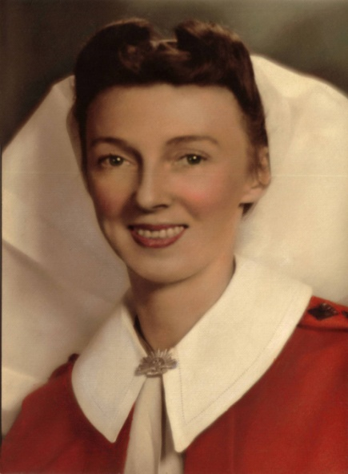
Unfortunately after the war John descended into alcoholism that all but tore the family apart. The children were all very young but through that period, maybe three or four years, Edna stood by him. It was a difficult time to say the least but eventually John rose above it through the ministration of that remarkable organisation Alcoholics Anonymous.
He was to remain a committed AA for the remainder of his relatively short life. He died of heart problems in about 1968.
Sister Edna Mules (nee Woodward)
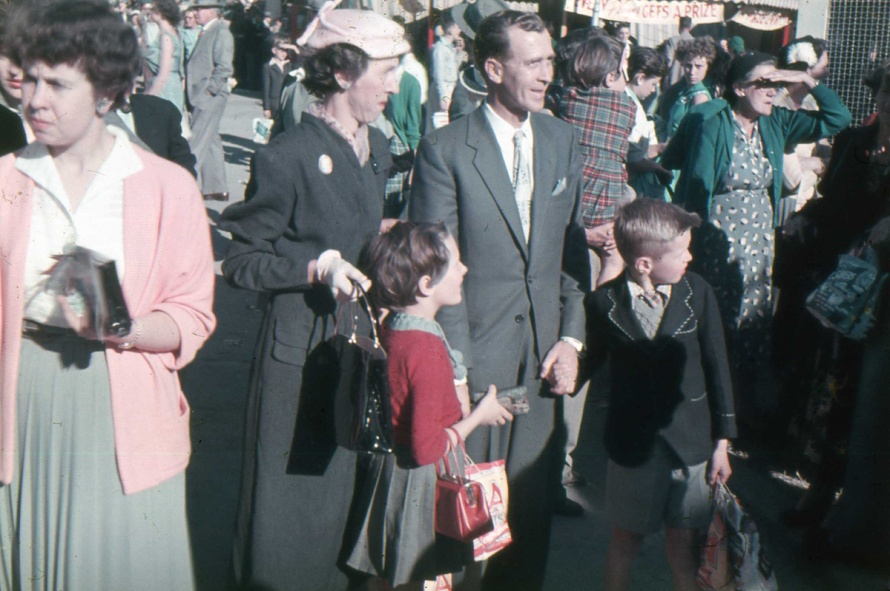
What is the relevance of all this to my own story of my public service years in Brisbane? As I said before, Edna was a constant support during those years in Brisbane, the 1980s and 1990s, frequently attending to our family when Wendy and I might be away for whatever reason. Our children loved her and certainly respected her. To me she represented my maternal family, the family of my own mother that I left behind when I joined the Army.
But it was Edna’s oldest son Warwick that I wish to introduce to this account. Warwick also fell victim to alcohol and he too turned to AA. It was a very difficult time for Edna since Warwick was living at home – off and on. I used to see him occasionally when I called on Edna and he often had periods of sobriety, total abstinence in fact but then as reforming alcoholics often do, would relapse. Edna after John’s death took on nursing work again at least sufficient to supplement her war widow’s pension. However, eventually Warwick beat his alcoholism, again like his father through AA. He had returned to university as a mature student in the faculty
Edna and John with Sue and Warwick at the Ekka 1956
that covered communication and English language. Not sure what that was called. He won a scholarship that met his costs and he graduated first with a bachelor’s degree, then a master’s degree and finally a PhD. Quite a remarkable effort finally rising to a professorial level at the University of Central Queensland at Rockhampton. In Rockhampton he met and married Helen and it was a new life for Warwick. Helen, also an academic, has been and continues to be a great support to Warwick.
I should add that Edna was a first cousin, the eldest daughter of my mother’s oldest sister, my Aunty Grace. My mother was the youngest surviving daughter of my grand parents, Eliza and Francis Magowan. Hence the age difference between Edna and me.
What prompted this drift away from my public service account was an October diary entry concerning Warwick Mules. Warwick phoned me to ask whether I would guarantee a bank loan for him with which to buy a car. It was something of a shot out of the blue and I needed to give it some thought. I can’t recall the amount but at a guess it was probably about \$1.300 – a fair amount in 1983. What the bank required in the circumstance at the time was that I would take out the loan in Warwick’s name and be responsible for it. Warwick would make the monthly payments over the ensuing two years. Of course, I talked to Wendy about it and she was decidedly cool to the idea – what if the car turned out to be a bomb. Then there was our relationship with Edna and Warwick’s battle with alcohol which certainly wasn’t over. Anyhow, Wendy left the decision with me. The following day I phoned Warwick – said I would like to inspect the car and together we did so. It was a European car. an Audi I think. It appeared to be in good condition. The purchase was through a reputable dealer and all the supporting documentation was in place – the car was in A1 condition. Together we visited the bank and the loan was effected. Warwick had his car. I never heard any more about it. All payments were made and Warwick had the car for quite some time, at least until after he had completed his university training – probably until after he had his PhD.
Queensland Politics
Our Surveyor General Kevin Davies had long been associated with the rambunctious machinations of Queensland politics. He had been campaign director for various politicians of the Liberal Party persuasion but for some years the Queensland government had been strongly Country Party that morphed into the National Party in the early 1970s, presumably to give it wider appeal to the city electorates. The Liberal Party that dominated in Federal politics was relatively small in Queensland and as far as I knew had never held government in its own right or even been the dominant party in a Liberal/Country Party coalition. The Labor Party had waxed and waned over the years but had not been the dominant party in government since the great split that occurred in the 1950s leading to the creation of the so-called Democratic Labour Party. However, the winds of change were starting to blow in 1983. There had been great ructions within the National/Liberal coalition over claims of corruption (proven to be correct a few years later) and the Liberal Party withdrew its support. An election was held and the now National Party got in with a slim majority in its own right. They would have nothing to do with the rump Liberals. Joh Bjele-Petersen who had headed the National/Liberal coalition and been Premier since the mid 1960s appointed all new ministers or at least replaced the previous Liberal ministers with National ministers and we landed Martin Tenni. Tenni came from north Queensland, a ‘white shoe brigader9’.
Davies arranged to have our new minister visit Monday 5 September for drinks by way of welcome to the Department and to meet his senior public servants. I was included – meet the Minister! The bottle of Scotch was out with a jug of iced water. My diary records those attending were Keith Smith, Rob Melloy, John Cridland, Merv Vandenburgh, Jack de Lange and John Nelson10. Plenty of Scotch was consumed, some nibbles to go with it and maybe a beer from the well stocked fridge in Davies’ office. Davies remained behind his desk saying very little, more or less glowering at everyone including Minister Tenni. I think it might have been the first time that Tenni had been exposed to a coterie of senior public servants. He availed himself of a number of Scotches, served by one of the younger staff members acting as a waiter (Davies had organised that) and after half an hour or so Tenni was becoming quite loquacious, very talkative. Davies continued to have very little to say. We all tried to keep a conversation rolling along but we needn’t have bothered – Tenni was happy to hold the floor. He told us about his electorate and what a powerful person he was within it. His electors would do anything for him for a favour or two. We all knew that the north Queensland Mafiosi ran on that basis and obviously our minister was well connected. Then he started to recount his sexual exploits. The girls would flock to his bed so it seemed, particularly the ‘hosties’ whom he ‘talked up’ on his frequent flights from Cairns to Brisbane. He always stayed at the hotel adjacent to the airport (apparently where the ‘hosties’ stayed) and on his recent flight he boasted that he had ‘had’ three hosties in the one night! Goodness me – this coming from our Minister on our first meeting or any meeting for that matter! Davies just sat there impassively and the rest of us were just stunned. Maybe a little light conversation took place but finally Tenni stood up to leave. We all scrambled to our feet. It was’ good night Mr Minister’ – he left! Davies looked up with wicked smile on his face. He said ‘We’ve got him – just offer him a bit of crumpet and he’s ours’. I was late home – 7.30 and maybe I slipped out and phoned Wendy when it became obvious that Tenni was lingering on.
I came across Minister Tenni a few times after that at various departmental functions; one I recall accompanied by Wendy was in the parliamentary annex. He was always very polite and told no more stories of his philandering. He was replaced a year or two later by a venerable gentleman from Cloncurry or thereabouts; a very different minister from Tenni.
A new location
I have previously mentioned that I had not been successful in my application for the position of Director, Division of Mapping and that as a consolation I was to be appointed Deputy Director. This duly took place on the 19th May 1983 and at that time I was to move from the Creek Street ‘Estates House’ to the Land Administration Building in George Street. The move took place in the days following. No big deal you may say but it was a move not without implications. I wasn’t sure that I was not being ‘sent to
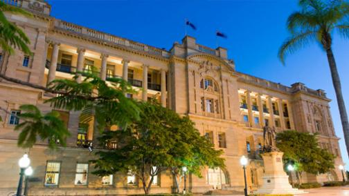
Coventry’ – out of sight, out of mind – but it wasn’t quite like that. The Land Administration Building, referred to as the LAB, was a magnificent old post colonial building of sandstone with wide verandas facing Queens Gardens. It had previously been the Executive Building. Since its opening in 1905 it The Land Administration Building (LAB)
housed the Office of the Premier and the Executive Council as well as the Lands and Survey Department, the latter including the Office of the Surveyor General.
While the formal entrance to the building faced George Street the more impressive side (western side) faced directly into Queens Gardens which in effect separated the Executive Building from the somewhat older Treasury Building on the corner of George Street and Queens Street leading onto the Victoria Bridge. The much plainer eastern side fronted a lane way that gave access to the inner court yard. On the other side of the lane way was the government printer’s building of about the same vintage and beyond that in George Street was the ’new’ Executive Building. My office was on the third floor facing Queens Gardens with a double glass door opening onto the wide colonnaded balcony – in all, a very nice location. The very large office adjacent on the corner of the building overlooking the gardens and William Street had been the Surveyor General’s office until he was moved into the relatively new Watkins Place some years before. Sent to Coventry? Perhaps but I could hardly complain. Soon after I was allocated a government car, a new Datsun ‘Bluebird’ with parking space in the central courtyard below.
The Hervey Bay ACS Conference
I have previously mentioned the Association of Consulting Surveyors (ACS) annual conferences and our attendance at the 1982 conference at the Cedar Lake ‘time share’ resort. In 1983 the conference took place at a similar resort at Hervey Bay north of Brisbane and again we attended as a family, staying in one of the quite comfortable chalets about a block back from the beach. The conference took place over the Queen’s Birthday long weekend from 11 June to 13 June. Of course I attended the conference sessions and they were fairly routine covering matters of interest to the private practising surveyor. Wendy and family took the children to nearby locations and I recall another young lad, the son of Graeme Heilbronn. The Heilbronns were staying in the chalet next to ours and Robert had teamed up with their son. It might have been on the Sunday that Wendy took them fishing from the Hervey Bay jetty and the Heilbronn lad caught a well sized bream. He was very excited and could hardly wait to get home and show his parents. Wendy was somewhat dismayed at their response – total disinterest. I guess the chore of scaling, cleaning and cooking it was clearly not something they wanted to do. Wendy received no thanks for looking after their son for a day. I never had much time for Graeme Heilbronn. He was an ‘up and coming’ in the profession and I found him a pain in the backside. He looked down on public service professionals, an attitude that fortunately was not held by his fellow private practitioners. I couldn’t help but recall that at the earlier Melbourne surveyor’s congress on arriving a little late on the first day I found Graeme on his own in the conference lobby in a mild panic not knowing where to go or what to do. Why so I never knew, however, I steered him to the registration point and then to the main auditorium. No thanks and no acknowledgement. Perhaps I had recced the area the day before. It was my first encounter with Heilbronn and as it turned out not my last.
The second incident I recall at the conference was in spending a little time with past Surveyor General Mack Serrisier. He reflected on the fact that I had not been appointed Director, Division of Mapping as had been his intention in encouraging me to come to Brisbane for in his mind that specific appointment. I was a little embarrassed and could only assure him that I was very happy with the outcome. I knew Mack had little time for Keith Smith for reasons unknown to me and whatever they were I did not share them.
A holiday unit at Caloundra – Pumicestone Chase
The previous section on financing our holiday place pre-supposes that we had made a selection of what we had chosen to buy and of course we had but not until the middle of 1983. One of the buildings we looked at and which appealed to Wendy had the name ‘Pumicestone Chase’ located in Maloja Avenue and fronting (or backing on) Pumicestone Channel at the northern end, the channel separating Bribie Island from the mainland. The site had previously been the location of the Caloundra ice works. It had a wharf stretching from side boundary to side boundary and not long before the fishing luggers, then based at Caloundra used to off-load their catch on the wharf to be stored in the ice works. The fleet had moved north to Mooloolaba when the sand bar at the northern entrance to Pumicestone Channel made entrance to the channel too difficult and dangerous to negotiate. The site had been sold and a block of twelve holiday units built. I guess these days a block of at least twenty-four would have been built since the site is quite large, however, with twelve units there was space for a walled garden on the Maloja Avenue side and a swimming pool and lawned area on the passage side behind the wharf. All in all a very lavish layout. Pumicestone Chase was designed by one of Brisbane’s leading architects, Noel Robinson, probably in his early career. The particular unit we favoured was on the bottom level and when we saw it in 1982 it carried a price tag of \$160,000, far far beyond our means. However, in September 1983 we had a call from our Caloundra agent, Alan Carrick, saying the price on re-sale had dropped to below \$100,000 and negotiable. It had not been occupied and remained un-furnished. We offered \$80,000 – not accepted, then settled on \$85,000. How could such a reduction in price happen? The whole holiday unit market had crashed in Caloundra with the supply of recently built units far exceeding demand. There were empty blocks of units all over the coast looking for buyers, some not at all attractive. Also interest rates on loans had fallen and that helped considerably – even if it was not for long. And then there was the inducement of negative gearing previously outlined. It allowed investees in property to offset their tax obligation on income from other sources against losses on their investment property. It was small beer in those days but in recent times it has become a major loss of government revenue that no political party is prepared to address. By October 1983 we were th proud owners of a very attractive holiday unit – at the time of writing we still own it, long since paid off.
The year was drawing to a close and we were anxious to have our unit available for Christmas holiday rental to help offset the body corporate costs and general local government rates and of course before we could rent we needed to properly furnish the unit with durable but attractive furniture. But what? We had the whole unit to furnish – two bedrooms and large lounge/dining room and some outdoor furniture for the balcony. And, with both Wendy and me working, children at school in Brisbane we were notably time limited. I am not sure how we found our interior decorator/furnisher; perhaps someone gave us the contact, or we simply found his firm in the yellow pages. He was at Mooloolaba, on the main road. It all duly happened, and we entered the rental market for the first time. I don’t recall the agent we used, my diary is silent on the matter but I recall it was an agency that specialised exclusively in holiday renting. We stipulated that our minimum rental period was to be two weeks and despite occasional requests for a shorter period we kept to that over the years we remained in the rental market. Neither were we interested in long term rentals.
Wendy and I attended our first body corporate meeting on the 19th November 1983. The owner of Unit 11 was the Body Corporate Chair, Mr Bill Smart, a very gentlemanly fellow. He was a business man and remained owner for several years but he wasn’t a frequent occupier. I do not recall many of the first owners but there was Bill ? in Unit 3, Ron Sinnamon in Unit 1 and of course George Fursman, a retired Police Superintendant in Unit 5. Body Corporates generally employed a body corporate manager and ours was a fairly new firm in the business, ‘North Coast Body Corporate Management Services headed by a youngish fellow, Kieran McMahon. We were a very agreeable lot and resolved problems very amicably – not true of many body corporates we were told.
To the end of the year
Public Service life can certainly be uneventful. Perusing my diary, I seem to be forever attending meetings of little significance that lead to no recognisable outcome. And yet I felt reasonably satisfied that I had some achievements. The new format 1:25,000 maps with their greatly enhanced colours and folded cover panel were starting to happen and although our Surveyor General still thought of them as ‘maps for kangaroos’ they received very favourable comment from others in the mapping community. One of our early new format 25:000 maps was that of Russell Island and inevitably it showed blocks of land in the mangroves and partly submerged by water. The cover panel photo showed a view of the sea through a gap in the mangroves and there, centre in the gap was a surveyor’s white top peg. It alone told the story.
At home life had developed into a manageable routine, Wendy working, Rob and Chris at football on Saturdays, entertaining friends, visits to the Ekka (Royal Show) in August, church on Sundays and Robert’s confirmation, maintaining our half acre of garden, friendship with our neighbours the Unkles – the baptism of their fourth baby Brendan with Robert as Godfather; in other words a fairly normal suburban family life. At Punicestone Chase we had our first tenants over a two-week period and all went well. We charged the Christmas premium rentals that generally applied throughout the Caloundra rental market and then followed ourselves until the start of the school year after Australia Day – our first extended holiday in our own holiday unit at Caloundra. There were to be many more. And this brings me to 1984
1984
This would be a very tedious read if I were to follow through week after week with little more than diary extracts so I will try to pick out the highlights, or what seem to me to be ‘highlights’ both at home and at work. Some matters like Rotary are neither home nor work and will appear from time to time.
I returned to work on the 16th January after a good long break, perhaps the longest since my departure from the Army and of course with our newly acquired unit at Caloundra, Pumicestone Chase we were able to spend some time there as proud new owners. We had had our first tenants for two weeks over the Christmas period so our own occupancy was both before and after that time. Robert became our professional fisherman. I bought him a rod with a bobbin reel and without doubt he could out-fish me. I stuck to my old rod with its Alvey reel. In those early years fish were plentiful off our wharf – there was little need to fish elsewhere. It was to be several years before we acquired a small dinghy – a ‘tinny’ – so called – and I will leave that story to a later year. Cousin Edna had continued to be our child minding support and seemed more than happy to leave her little home at Indooroopilly and look after our children at Tanglin. Of course at an early stage we took her to Pumicestone Chase and she loved it there. She was to spend her own time there with a friend whenever we had no paying tenants and that paid her back for all the wonderful support she had given Wendy and me over many years..
At work I continued in much the same way as previously. 1984 was by any measure a smooth year without significant highlights. As Deputy Director I had an internal status that was at least comfortable. I had established an easy working relationship with my assistant directors and also importantly with Director of Mapping, Keith Smith. We came close to being good friends with both of us enjoying each other’s company. In effect Keith managed upwards and I managed downwards. There was the occasional hiccup inevitably, but we largely avoided treading on each other’s toes.
A departmental car
In late 1983 I had been allocated a car – my first departmental car, a Datsun ‘Bluebird’. I found the government attitude to car allocation remarkably generous, perhaps even a little embarrassing. With the allocation of a car one also had the privilege of ‘home garaging’ – one could drive one’s car home after work at whatever hour that might be and return it in the morning. There seemed to be no written rules on how it should be garaged or restrictions on private use. I was well aware that other officers who had the privilege of a car and home garaging used it as if it were their own private car – totally unrestricted but I never saw it that way and I only recall one or two times when I used the car privately for whatever reason – attend a meeting perhaps. Unlike the Army there was no paperwork associated with its use, no log of trips or distance travelled in Army terms no G5 or monthly record of running. My next-door neighbour and friend Alan Unkles worked in the Forestry Department in Anne Street, just down the road from the Land Administration Building so I invited Alan to travel to work with me although not usually home from work – my knock-of-time could be a little erratic and on Wednesday nights I went from work to my weekly Rotary meeting. The car privilege lasted for all the years I was Deputy Director and later as Senior Advisor Topographic Data after a departmental re-structure but more on that later. The Datsun Bluebird, nice little car that it was, turned out to be a bit of a bomb. It had the tendency to stall at an embarrassing moment – at one time in the middle of the Normanby Five Ways, one of Brisbane’s notorious five-way intersections. I had to manually push the car, thankfully with the help of another motorist who appreciated my predicament, to the side of the road. It was recovered the following day. After several such incidents it was replaced – as were all Datsun Bluebirds in government service. It seems that I was not the only one to suffer that indignity.
A new mapping technique
Depicting the shape of the terrain on our tourist maps I felt would impart to the user a better sense of the sort of country through which the traveller might be passing. Without that the flat coastal plains would appear no different to the more rugged terrain of the Great Divide or other hilly areas. An early attempt to use contours and elevation shading, that is, an increasing density of colour between contours with increasing elevation, on the South East Queensland tourist map proved to be a dismal failure so I decided to see what we might be able to do with hill shading. In the past hill shading of any sort had been the skill of the cartographic artist and I well remembered the attempts made at the Army Survey Regiment to hill shade the 1:250, 000 map series. It wasn’t until my army colleague Major Kevin Walsh returned from UK and introduced the technique of terrain embossing borrowed from the Royal Engineers Survey for the 1:250,000 military series that hill shading became reasonably economic in time and able to be carried out by any of our cartographic draughtsmen. How could we employ that same technique to our tourist mapping? One disadvantage of the army method was that it required a good deal of photographic processing which was not especially achievable in the department’s photo section. I discussed the issue with one of our senior cartographers in our topographic mapping section and he was prepared to give it a go. The technique developed was different to that used by the army but equally if not more effective, certainly for the sort of product to which we were applying hill shading. The technique certainly gave our tourist maps quite a lift and led them to become award winning in biannual cartographic competitions.
Institution involvement
Throughout 1984 my involvement with and commitment to the Queensland branch of the Institution of Surveyors – Australia continued. As a corporate member my membership stood beside my only professional qualification of ‘licensed surveyor’. I continued as editor of the Queensland Surveyor’s Bulletin and generally enjoyed the role. It was quite a heavy commitment and the Department and more especially the Surveyor General saw it as a priority occupation. The content came from several directions although I was personally responsible for much of it. I attended the monthly divisional committee meetings11, initially in ‘Watkins Place’ a building in Wickham Terrace where the Institution had office space (and the lifts were the slowest in Brisbane) and a couple of years later in the more salubrious Silverton Place, further along Wickham Terrace. Committee meetings were always followed by a dinner, usually at the Johnsonian Club and on one occasion at my own United Service Club, thought by several of those attending as ‘too expensive’.
The Institution of Surveyors was not my only professional commitment. The other was the Australian Institute of Cartographers. I had been a member of the AIC for many years, first as a Junior Member in about 1956, then a Student Member (maybe the other way around) and then Corporate Member and finally a Fellow. That was as far as one went in the old AIC. I think my payment of fees in those early years might have been a little erratic but somehow I hung on. Many saw it (especially members of ISA-Aust) as a less than ‘professional body’ but they certainly could hold every two years a very professional week-long conference. Yes – it was called a ‘conference’, not a ‘congress’. Also, they were able to attract numbers of overseas speakers which the surveyors failed to do and the professional level of the papers presented was considerably higher. My old military friend Jim Stedman said once to the effect – if you want to listen to tedious sessions on how to mix a brew of cement for a ground mark, go to a Surveyors Congress.
St Marks and other Anglican Churches
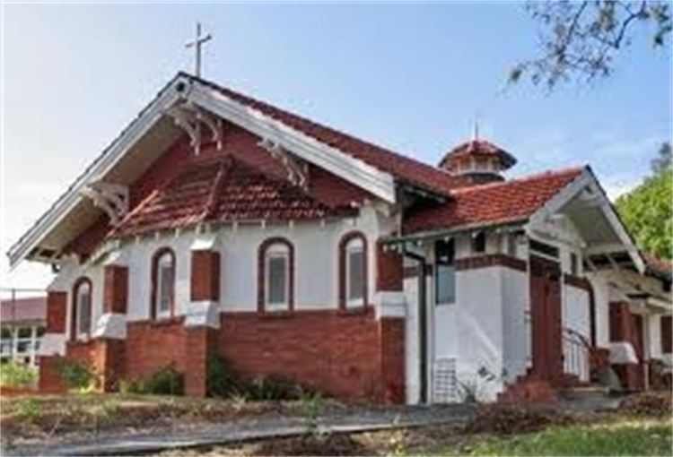
Our old ‘mentor’ Christina Ryan was keen for us to re-engage with the Clayfield Anglican Church and we promised to do so on an occasional basis, perhaps once a month and I think we kept to that. But living in Boondall we were part of the Sandgate Parish and I have made previous mention of that. Nevertheless, the rector of St Marks, Canon Des Williams remained a friend and we attended his ‘collation’ which conferred on him the title of ‘archdeacon’. This was really a cathedral appointment but perhaps beyond that it recognised his role as a prominent theologian. After all, he had been principal of the Brisbane Anglican theological college, St Francis, a fact he liked everyone to be aware of. I have previously spoken of his other attributes, an excellent preacher and musician with a god-given singing voice, but also a bit of a snob.
However, we had thrown our allegiance into the Sandgate Parish as previously stated. In 1984 I became a long-term member of parish council and in so doing became very aware of the church’s financial problems. With four existing churches to maintain and another being spoken about at Bracken Ridge there was clearly no way the Sandgate parishioners could fund that commitment. I have already said that the small and modest church at Boondall was sold off early (to a Hindu sect I believe), the old very traditional timber church at Shorncliffe had become a huge maintenance problem. The small brick church at Brighton was at least brick and well constructed although not notably attractive but on the other hand, St Margaret’s was. In fact it was of considerable architectural significance. I discovered this when attending an exhibition of architectural drawings at the City Hall probably in the mid 1980s and St Margaret’s was one on display – beautiful watered coloured drawings. To my surprise the style of design was called ‘Californian Bungalow’.
After the departure of the first rector previously described, the Reverend Baden Wynn, our next rector was the Reverend Gordon Petersen, appointed from Inala, one of Brisbane’s quite notorious working class suburbs. Gordon was a very ‘down-to-earth’ rector but nevertheless held to the high church tradition. His very Aussie manner, some might have called it ‘ocker’, surprisingly appealed to the parish although the extreme conservatives previously described left and went elsewhere. Gordon’s attitude to that was good riddance!
But there was still the problem of too many churches to maintain. It was St Nicolas at Shorncliffe that had to go. It was very old, built about 1830 and its wooden structure was ridden with termites, so it was said, and any sort of effective treatment would be prohibitively expensive. The land on which St Nicolas sat had been some sort of conditional grant from the colonial government of New South Wales before the creation of the State of Queensland. What would the parish get from the sale of the property that was in such a prime location? Considerable in was hoped – enough to overcome all the financial woes. But no – the church or the diocese did not hold freehold title, the land had been granted to the church for the express purpose of holding religious services. The church did not own the land. The State would simply resume the land and make a small payment to the parish for ‘loss of amenity’. No great bonanza.
It had been part of Gordon’s grand plan to extend the length of St Margaret’s and he drew up a sketch plan of what he intended. He felt that with the demise of St Nicks the congregation of both churches would not fit into St Margaret’s. I think Gordon had little regard for the architectural significance of the church but our archdeacon, Des Williams did and he was appalled at Gordon’s suggestion.
Directly behind the church was a large veranda-ed Queenslander style home that was in fact the rectory, that is, where the rector was to live. Past rectors did so but Gordon decided not to, instead he bought a small but pleasant brick cottage at Brighton. The ‘old rectory’ as it became known was turned into an office and recreation space for the parish. Such modifications as were deemed necessary were carried out by volunteer labour including a re-paint. With the help of son Christopher I did a detailed survey of the site – boundaries, buildings, access from Rainbow Street and car park The church and old rectory was on high ground, on a narrow sloping block tapering to the rear and we fully contoured the block with one metre (or maybe half metre) contours. It took two or three successive Saturdays to complete and Christopher seemed not to mind all that much. I plotted it on tracing paper and pulled off several copies and presented them to parish council for future planning purposes – my contribution!
An object of interest directly behind St Margaret’s church was a somewhat broken-down monument. It was to an interesting person of the name Thomas Atkins. Apparently he was a journalist who for recreation and contemplation used to climb that hill which then had a wide sweeping view of the ocean. The monument featured a broken column signifying a broken life. Thomas Atkins returned to Ireland mid life having left his mark in Sandgate.
Gordon and I attended Synod together for several years and his departure from the parish brought that to an end. Peter Hollingworth was the Archbishop and I found his manner at Synod to be domineering and in part led to my moving away from active church involvement.
Gordon had long had an interest in the army and during the time I knew him he was serving in the Army Reserve as a chaplain (padre) with the rank of major. He finally took on full time service as a chaplain with the rank of captain and the last time I met him, we had lunch together in the Victoria Barracks officers mess. He was then a chaplain with the Queensland Police Service. Clearly chaplaincy suited him. I had long felt that Gordon struggled with his underlying Christian belief although despite this he carried out his role as priest and rector with distinction12.
Gordon was succeeded by a priest from Toowoomba. I attended a few of his services at the Brighton church preferring the early 8.00 am service. I did not relate to the new rector; he couldn’t have been more opposite to Gordon Petersen. My attendance fell away and so did Wendy’s. We kept up occasional attendances at St Marks Clayfield, calling for and taking Christina Ryan.
Christina Ryan
I have made several mentions of Christina Ryan and I should say a few more words about her, who she was and the role she played in our lives because it was considerable. We first met Christina in 1975 during army days. I was posted to Brisbane from the commencement of the year and as we had in our previous posting, Wodonga in Victoria, our intent was to purchase our own home rather than accept an army married quarter. We finally settled on a ‘Queenslander’ at the corner of Park Avenue and Milman Street, Eagle Junction. We had been staying in the Rydges hotel in Spring Hill but decided to move closer to the home we were buying, awaiting settlement of finance. But where to stay? At Wendy’s suggestion we decided to attend the church in Bonny Avenue, a church that Wendy had occasionally attended during her student nurse days. Following the service we went to the quite lavish morning tea in the adjacent church hall and passed the word around that we were looking for temporary accommodation for a few weeks while awaiting settlement on the home we had bought at Eagle Junction. An elderly lady gave us the once over and said she might be able to help and would pop home and speak to her husband. She did so and was back in twenty minutes and yes – she could offer us a ‘maisonette’ for as long as we wanted. The elderly lady was Christina Ryan. We followed her home and met her husband Jim. They lived at 182 Bonney Avenue. And that was our first meeting with Christina.
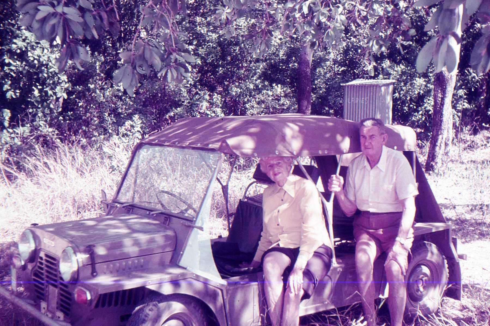
In previous writings I have mentioned the visit Jim and Christina made to Cooktown when I was there engaged on survey operations for an extended period. I spent a day with them showing them around Cooktown in my army ‘mini-moke’. I took them to Quarantine Bay’ a few kilometres south of Cooktown where there was a sandy beach – something of a rarity!
Returning to Brisbane in 1981having left the army Christina again offered us her ‘maisonette’ while we were deciding where we would live. She was then a very active 76 year old. Jim had passed away a couple of years before and Christina lived alone in that rambling old house in Bonney Avenue. She would have liked us to purchase locally but anything in the Clayfield/Eagle Junction area was well beyond our means.
I had been aware that Christina and Jim had had one son whose name was Robert. He had died in the year before we first met Christina, maybe 1973 or 74. He might have been about my age and with the same name. I had the feeling that she was inclined to see me filling the role of her son. But it was a tragic story. Jim had told me about Robert years before when we were working together re-building the driveway to our old home in Millman Street. Robert had served in the army for a few years, maybe six, and had had a two year tour of duty in Malaysia at Terendak. This must have been during the Malayan Emergency in the 1950s. On returning home, perhaps having left the army he committed a serious crime. I have no idea of the circumstances of the incident. He was sentence to life imprisonment at Brisbane’s notorious Boggo Road and served 18 years. Apparently Christina visited weekly. During all the years I knew Christina she never told me the story but it was evident she idolised her son Robert, no doubt somehow justifying what he had done. Jim had told me that on Christmas Eve or a similar occasion when they had friends visiting Robert had left the company and gone out to the back veranda, sat on a chair and was found dead an hour or two later. In Jim’s mind he had committed suicide. His ashes were interred in the conibarium wall at St Marks church. Christina in all the years following had honoured his life with his name included on the prayer list each year on his birthday.
So what had been Christina’s and Jim’s life. The following is an inaccurate account of what I can piece together from the snippets of information or comment made from time to time over the years I knew her. Christina’s family in early years lived in Albion, an old suburb on the city side of Clayfield. They seem to have been of modest but comfortable means. Christina’s family name was ‘Fry’. They had in interest in or simply holidayed on Bribie Island. Access to Bribie was by ferry from Brisbane, a day long trip. On one such holiday occasion when Christina was a late teenager she met Jim in a holiday camp. The story varies a bit but according to Christina it was instant love. But it was not until a few years after that they were married probably in the mid 1930s. Christina told me stories of her early life, not in any specific way but more in the form of casual reminiscences. I recall her telling of how she met the Australian bush poet A.B. (Banjo) Patterson in north Queensland at a bush ball at Winton. How did she come to be at Winton, probably in the late 1920s – I have no idea. In the early 1930s she was an escort to the Antarctic and later World War 1 photographer Frank Hurley and accompanied him on a circuit of the Brisbane Royal Exhibition showground. He gave her a framed photograph of the Shackleton ship Endurance being crushed by pack ice in the Antarctic expedition. The photograph hung on the wall of her home. I have a little more to say about that photo later.
Christina by any measure was a very intelligent lady. I do not know how far her formal education went, but girls at that time rarely went beyond maybe one or two years of high school, maybe not even that, leaving at the age of 14 years. However, Christina trained as a book keeper at the Brisbane Business College in Adelaide Street completing the course in half the normal time (according to Christina) and obtained employment with a well-known commercial firm. Do I believe that? I certainly knew she had a prodigious memory and was very quick with figures. In the time I knew her she was a formidable Bridge player.
Other stories of Christina’s life include a time in the late 1930s, pre-World War 2 when she and Jim managed a somewhat rambunctious hotel in South Brisbane frequented by wharf labourers and well-known criminals. At that time and for many years the port of Brisbane was on the south bank of the Brisbane River opposite the city centre. It was not a place to frequent.
I am not sure when Jim and Christina acquired the property in Bonny Avenue or the circumstances, but I would guess somewhere around 1939 or 1940. It was really two houses linked by a covered veranda. The house at the front was a traditional ‘Queenslander’ and probably close to a hundred years old. The house behind was quite small, a cottage, and typical of houses or similar structures built in the immediate pre-war period. Perhaps it was built by Jim and Christina for whatever purpose but I am not clear on that. The verandas of the old house had been enclosed and became known as a ‘maisonette’ in the language of the time. It contained a small kitchen and had been licensed to rent to tenants. During World War 2 Jim worked as some sort of supervisor on the wharves and carried the military rank of warrant officer class 1. As with many homes in Brisbane during the war their home was requisitioned by the army although somehow, they avoided that happening. Christina was involved in war related work and perhaps having Robert as a small child gave them a reason to remain where they were. Brisbane was by any measure a garrison city and everyone had to comply. They were tough times.
Jim and Christina were on opposite sides of the political spectrum. Jim was a Labor supporter although Christina maintained he was not and Christina was a Liberal party adherent although when the old Country Party morphed into the National Party so to did Christina from the Liberal Party. She came to know many of the leading National Party politicians or at least claimed she did. There was some truth in it and she seemed to be able to cultivate friends in high places. After Jim’s passing Christina always had a male friend. I never suspected it was anything more than platonic although some thought otherwise. One such friend was Lieutenant Commander RN (ret) Andrew Leatham personal secretary to successive State Governors from Sir Henry Abel Smith onwards. Andrew was an austere man, never married and came from a high-class English/Scottish family. Christina met him at St Marks church. He lived nearby and was often at Christina’s home. Christina had possession of Andrew’s ceremonial naval sword. I do not know what became of it after Andrew passed on – I think the family re-possessed it. Another was a retired specialist doctor, Claude Mann. He was Christina’s bridge partner. Another was a staunch National party supporter and a Brisbane restaurateur, Anne Garms. Anne Garms ran several of Brisbane’s best and classiest restaurants. Christina made good use of her friends and perhaps that applied to Wendy and me. Nevertheless, she could be and was a very warm friend. She loved our children, particularly our two boys, Robert and Christopher. For many years I had the practice of calling on her on a Wednesday afternoon on my way to my Rotary meeting, having a Scotch with her. She always asked after our children wanting to know exactly what they were doing.
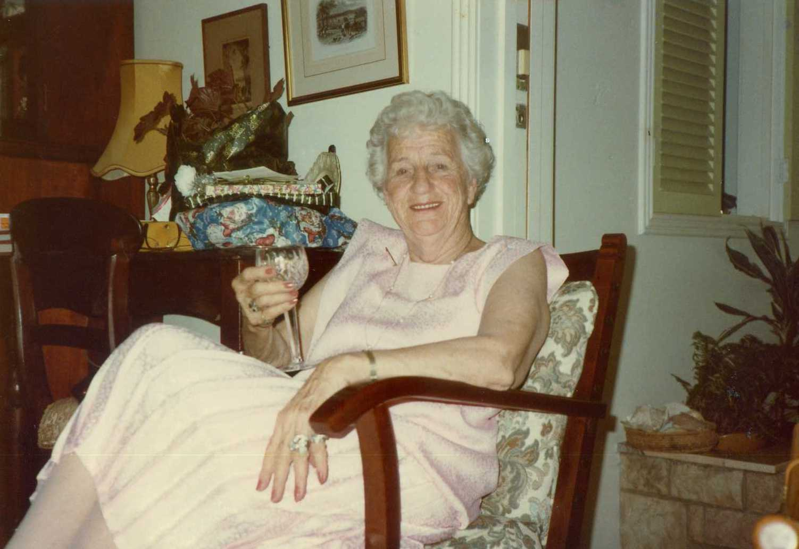
There was one friendship that somehow befell Christina and that was with the Reverend Alan Male. Alan Male was something of an achiever. I had little reason to doubt his faith but in pursuing his goals he could damage people who may have been his supporters along the way. Such was the case with Christina. I first became aware of Alan Male through Rotary. He was a committed Rotarian but used Rotary to serve his own purpose not that that purpose was wrong. I have heard him described as a ‘megalomaniac’ – I wouldn’t go that far but some would. So, who was Alan Male? He was a minister of the Churches of Christ and presented himself as a ‘man of God’. All he achieved was therefore in the name of God. He was very political and a supporter, probably a member, of the National Party. When the National Party re-gained office in about 1996 after the fall of the Goss Labor Government the Reverend Alan Male was appointed head of the Department of Family Services. It was a short-lived appointment; the Borbidge government fell in 1998 after two years in office and Alan Male lost his exalted and very well paid appointment. He also lost his chauffeur driven limousine which I often saw parked in front of Christina’s Bonney Avenue home.
Alan Male had stood for parliament, maybe a couple of times in the 1980s but failed to win a seat. He didn’t try again. In Rotary he became District Governor in the late 1980s, an exalted position. Alan Male had over a number of years run a youth centre in Spring Hill called the Shaftsbury Centre. It was funded from several sources, may even have had government funding. In 1989 he expanded the concept having acquired a grant of land on the eastern side of the Bruce Highway at Burpengary, some 40 kilometres north of Brisbane. It was a couple of hectares in extent and on that land he developed the Shaftsbury Campus. I was never sure of its purpose but it attracted a good deal of Rotary support and no doubt government support at least until the demise of the National Party Government in 1990. Alan Male developed a clever method of fund raising. For the payment of \$1,000 one could be appointed an Honorary Earl of Shaftsbury and receive a nice framed certificate proclaiming that. One could also nominate another person to be an Honorary Earl and Christina probably contributed at least \$10,000 in nominating friends of worth to be Honorary Earls. The ‘awards’ were conferred at an afternoon tea ceremony at the Shaftsbury Campus once or twice a year. To my embarrassment I was so conferred at such a ceremony which Christina had encouraged me to attend – I think on the pretext that she had no other way of getting there. Wendy came and also Christopher I think. I can’t say I ever harboured suspicions on Alan Male’s intentions or purpose – all he did seemed to be for the greater good. He ran youth camps at the campus including the Rotary Youth Leadership annual camp. I didn’t agree with his broader philosophies which to my mind were ultra-conservative.
I increasingly became uneasy at seeing his government limo parked in front of Christina’s home when I was making my regular Wednesday afternoon visits before attending Rotary. As the months passed I noticed that Christina seemed mildly disturbed following his visits and at one time confessed that she wished he wouldn’t visit so frequently. Finally I learned that she had had her will re-written assigning the majority of her money and property to the Alan Male Foundation. Was that a huge amount of money – probably not but the Bonney Avenue property would have been worth a couple of hundred thousand dollars. She had other cash investments that might have fetched another hundred thousand.
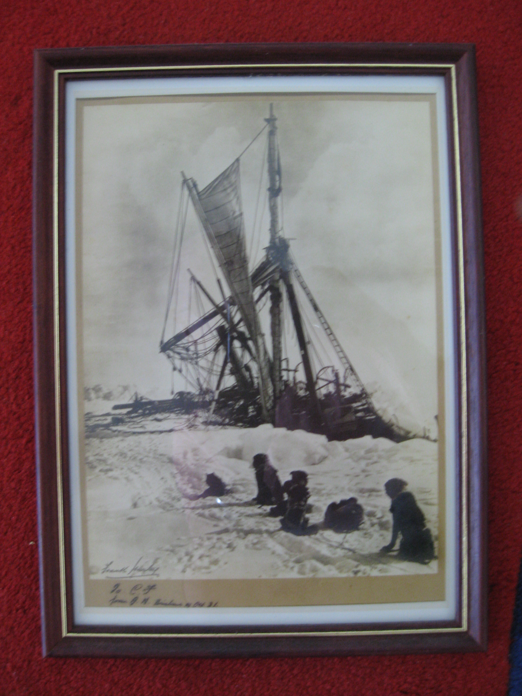
There was nothing particularly wrong with doing this. It was very much her decision but it was evident that she had done so under pressure from Alan Male himself and she was regretting she had done so. Further she had become frightened of him. He was a domineering personality and not to make a too fine a point, I felt he had monstered her. I discussed my misgivings with Leanne O’Shea whom I had known for a number of years since my army posting to Brisbane in 1975/76 as a member of St Marks Church. She was then a mid teenager. Leanne was also well known to Christina. Leanne had qualified as a solicitor and had been appointed a magistrate. She was certainly a very strong person. Together we talked to Christina and she confirmed the situation – she would change her will leaving the majority of her money to the Anglican diocese, some to St Marks. Further she wanted not to see Alan Male again. Leanne undertook to serve him a legal letter that warned him to desist visiting and that he would be written out of Christina’s will. It worked; he did not visit again. I am writing from memory but I think this incident occurred in late 1998.
Christina was certainly by any measure a remarkable woman. I don’t really know quite how it came about, Christina would never reveal or comment on her private life, but in about 1930/31she had a friendship with the noted photographer and adventurer of Antarctic fame and subsequently World War 1, Frank Hurley. Hurley was in Brisbane at the time; I don’t think it was his home town but it seems that he was extensively feted and in 1931 he did a flag waving lap of the Brisbane Exhibition (EKKA) show ground in an open car. He invited Christina to accompany him and she did so. Before departing Brisbane he gave Christina a framed copy of his most famous Antarctic photograph – the Endurance being crushed by ice on the Ernest Shakleton Antarctic expedition of 1914 to 1916. It is inscribed ‘To CF from FH October 1931’. Christina’s maiden name was, ‘Fry’. The framed photo has hung on the wall of Christina’s home even after her marriage to Jim ever since...until...
In 2003, three years before Christina died, it was reported that original prints of Hurley photographs were sold at auction in London for in excess of two hundred thousand pounds sterling each. That is, Christina had hanging on her wall close to half a million Australian dollars. A lot of people knew about the Hurley print, her many friends without being aware of its supposed value. This included a couple that Christina had met some years before, probably in the late 1970s, on a sea voyage. They were Rita and Kevin (I do not recall their surname). They had obviously been helpful to Christina and made frequent visits, lionising her. Rita who had a somewhat loud and raucous voice was want to call Christina ‘mother’. Kevin, a rather quieter person and obviously ‘under the thumb’ of his domineering wife kept in the background, however, he had noticed and commented on the Hurley print. Christina told him he could have it on her death – promised it to him he was to later maintain. The fact was that he was only one of many to whom Christina had promised the Hurley print over her lifetime. Kevin, perhaps like many others, became even more interested after its likely value became public knowledge. Did he or any others truly believe that a print worth close to half a million Australian dollars would transact to him on Christina’s passing? Soon after the Hurley London auction Christina, then largely bed bound began to get phone calls from persons asking whether they might view the print, asking whether it was truly an original Hurley print –asking her to describe it! She became quite frightened and didn’t know what to do. It was no longer on her wall – hidden under her bed I think. It was at about that time that she confided in me her fears. I discussed this with Wendy who suggested I talk to Leanne O’Shea. I am not sure whose idea it might have been but it developed into the suggestion that the print should be gifted to the Queensland Museum John Oxley collection. Leanne and I put the suggestion to the old lady. She procrastinated a little but finally agreed. I wrote the letter to the Museum curator as the go-between. They sent out an expert of some sort to verify that the offer was genuine, that the print itself was genuine, but then there was delay of a week or two. Apparently for the John Oxley collection to accept the print there had to be established that it had a connection to Queensland. Without doubt they certainly wanted it but the connection to Queensland had to be there. Christina received a letter from the John Oxley collection thanking her for her gift and the interest it had aroused. I also received a similar letter thanking me for arranging it together with a framed reduced copy of the Hurley print.
And the years passed. Christina became increasingly restricted in movement confining herself to her small bedroom at the rear of the house. Something was made of her 100th birthday at a golf club location, Indooroopilly I think, organised by yet another of her close friends. Speeches were made Christina was not really part of it she had had enough. She received the usual congratulatory messages from the Queen, the Governor General, Prime Minister and others. This was organised by another friend – there is a system apparently. Christina was tired and only wanted to go home, however, typically she rallied enough to thank everyone for attending.
Christina’s final year of life was difficult, both for Christina and her many friends around her. She wanted to die and seemed to have a great deal of pain although doctors who attended her claimed this could not be so. I suppose only Christina herself could really know.
Christina finally died on the 7th July 2006 in the Anglican palliative care hospital St Martin’s Nursing Home in Telegraph Road, Boondall. She was only there a few days before she passed away. Christina had lived for 101 years.
Rotary
I have made several mentions of Rotary and my club – the Rotary Club of Nundah. How committed was I – well not as committed as some members, however, I enjoyed the weekly meetings even if I didn’t necessarily look forward to them. They were a habit and something of a break from home life. Wendy supported my Rotary membership and liked well enough her role as a Rotary partner described at the time as a ‘Rotary Anne’, a name that didn’t attract me – very American – but so was Rotary. ‘Rotary Annes’ persisted as a name for our partners until the advent of female Rotarians. What to call the male partners of female Rotarians – Rotary Andys someone suggest. Thankfully no – Rotary partners became currency. The Rotary monthly magazine was named ‘Rotary Down Under’, again very American; a name given to Australia by American servicemen stationed here during World War Two. The name was debated from time to time but somehow an alternative could never be found.
I developed a few personal friendships from within the Club membership, none all that close with the possible exception of Keith Williams, a very genuine fellow who ran his own printing business at the near suburb of Zillmere – E.K. Williams. Living just around the corner from our home was Adrian Crowe. Adrian came into the Club about 1982, probably the next after me. Adrian’s father had been a founder member of our Club, chartered in about 1948. Adrian’s wife Bev became very committed to Rotary Inner Wheel, a sort of women’s’ Rotary that ran on similar lines parallel to Rotary but quite independent of Rotary. Bev became State President of Inner Wheel and Adrian gave her a lot of support. Adrian was a ‘one off’ sort of fellow. I think his income was largely from family shares. The Crowe family had owned a large and well- known clothing and drapery shop in Nundah that had closed down in the late 1970s giving way to the large chain stores. Adrian worked as some sort of public relations person at the New Brisbane airport in 1984 under construction and had been for a number of years. As such he arranged late afternoon tours of the construction site. The old airport, generally known by its locational name – Eagle Farm – was well and truly in full use during that time, a period of several years. Adrian arranged tours for our Rotary Club on at least three occasions at yearly intervals. Afterwards we would go to the Pinkenba Hotel, known as ‘The Pink’ for dinner. It was very pleasant, and I think that was more of an attraction for our Rotarians than the airport construction tour. Another friendship I developed although it was more a case of Wendy developing a friendship with his wife Sandra, was with Tino Babao. The Babaos also lived only a block away from our home. Tino had an interesting background in Papua New Guinea – born there of mixed parentage and had been a school teacher at one of the Highland schools, Madang I think. He had met and married Sandra, a nurse from Australia, in PNG, maybe Madang. Tino kept up an association with a few of the New Guinea notables following independence such as Sir Julius Chan, New Guinea’s second prime minister, but I never found out the basis of their friendship – perhaps they were school teachers together.
Another member I should mention is Norman Anderson. Norman had been a high school principal and fairly late in his career he was appointed the first principal of the newly established Carseldine College of Advanced Education (CAE) in fact I think he had quite a hand in establishing it. Norman was certainly the most intellectual member of our Club. I often wondered what attracted him to Nundah Rotary – it didn’t seem to be his brief but nevertheless he clearly enjoyed it and was a consistent and diligent member attending all our meetings and other activities – sausage sizzles and the like. Norman’s wife Veronica was also highly intelligent, a very nice lady.
. In the later days of the Keating Federal Labor Government, about 1995 a commission was set up to review the Australian honours awards, to determine their suitability and method of awarding. Norman and I thought that Rotary should not be silent on the matter and convinced our Club to give us their support. A little grudgingly they did so. My contention was that the grades of awards should not reflect wealth and power with the high performing company directors and senior politicians becoming Companions of the Order of Australia (AC) while the community battler received simply the Medal of the Order (OAM). There were grades between. I prepared the submission in the name of Rotary that argued there should be one level of award to all – perhaps termed OA. Both Norman and I signed the submission and sent it to the commission. Some months later the Commission was meeting in Brisbane and we received an invitation to front it – we did so. The interview lasted about half an hour over a cup of tea. The panel of commissioners was interested in the fact that such an egalitarian submission should come from a notably conservative organisation such as Rotary. Norman spoke very well, made the points clearly and lucidly. I don’t think I said a great deal. They delved into our personal background a little – Norman’s stacked up very well, probably my own quite well also although again there was some surprise that a retired army lieutenant colonel and reasonably senior public servant would also hold that position. I guess we were ‘mavericks’. In 1996 there was a change on federal government and a very conservative John Howard became a very conservative prime minister and the Commission was abandoned. So, the old order remained as it does to this day.
Norman retired from the CAE somewhere in the mid 1990s and turned his attention to his great hobby, his well equipped backyard carpentry workshop. Some years later he started to progressive lose his sight but he persisted with his workshop until he lopped off two fingers which brought that activity to an end. Norman finally totally lost his sight but this didn’t diminish his support for the Club and Rotary. He learnt Braille and apparently became very competent with a Braille computer. He continued producing the Club’s weekly Bulletin, perhaps helped by his wife Veronica. But gradually his health failed and he passed away in about 2005.
Rotary met every week of the year and for Nundah Rotary that was Wednesday night. It had forever been so. Christmas week was an exception but I think that was the only one. Members were required to attend at least 65% of Club meetings and failure to do so would lead to expulsion or at least being invited to leave. It was considered a mark of achievement to record 100% attendance in any given year. Nundah Rotary had a problem with the first meeting of the year in that the ‘Golden Years Centre’ caterer did not provide a service. So to maintain our attendance record we would meet at the bar, have a few drinks and then go home. That had evolved into buying in a few pies to soak up the beer. That had been the routine long before I joined the Club but after a year two, partly at Wendy’s suggestion but certainly with her agreement we invited the club to our home for the first meeting of the year. We expanded the menu a little to include with the pie, mashed potato and peas. Then desert was offered always tinned peaches and ice cream. That became the routine for every first meeting of the year; not always at Tanglin. I might have more to say about Rotary later in my ramblings. I stayed with Rotary for 35 years!
Ballet
Liz at the age of seven commenced ballet lessons with Miss Daphne Sapsford. Miss Sapsford was an elderly lady, quite elderly, very petite very much of the traditional ballet genre. In class she always carried her ballet ‘wand’ (for want of a better name), a shoulder high stick with a crook at the top end that she used to stop an activity or draw attention by tapping it loudly on the floor. It seemed to be a traditional implement of the ‘old school’ or so I thought! Miss Sapsford’s class was in a large ‘Queenslander’ just a block away from the Northgate Railway Station. The very wide veranda at one side of the house had a well polished floor and that was where the lessons took place. Liz attended on a Saturday morning. I think she enjoyed it and she certainly wanted to learn ballet and often wondered whether she would make the grade to be a professional ballet dancer. As with all the ‘ballet schools’ each year Miss Sapsford’s school held its end of year concert performance to which doting and admiring parents attended. I don’t recall what part Liz took in the performance but with all the beginners it would have been something. Anyhow Wendy and I acted as proud parents.
Miss Sapsford’s classes continued for a few years, maybe four and Liz stayed with it but in about 1988 Miss Sapsford held her final concert. She was obviously failing – she was supported by a couple of her former pupils. A month later she died.
A transfer of ballet pupils took place to ‘Miss Barbara’. I don’t think I ever knew her surname, if I did I certainly cannot recall it. Miss Barbara was a younger woman and her classes took place in a scout’s hall or similar at Zillmere or maybe Geebung. Liz continued with Miss Barbara probably until she was thirteen or fourteen. Her departure from ballet was on the strong advice of our physiotherapist Garth Osborne whom Liz had already seen a couple of times after she badly strained her ankle. She was then facing the prospect of moving into ballet points. I won’t attempt to describe what ballet points are but they can be very destructive on feet.
Miss Barbara also had her end-of-year concerts, a little more ambitious than those of Miss Sapsford. Male students were always scarce – teenage boys tended to see ballet as being for sissys. However, being desperately short of male dancers for a particular performance (the Graduation Ball transformed into a more modern vernacular as ‘The Formal’) the girls were asked to bring a teenage brother. To our surprise Robert agreed to go with Liz and undertake all the rehearsals. I think his acquiescence was partly because one of his Nudgee College school mates (which by then Robert was attending) was training as a dancer with Miss Barbara and was quite good but also because Rob could never say no to Liz. The performance took place in the Redcliffe entertainment centre and Robert held his own and looked quite good. Liz was in another production – a version of Les Sylphides I think.
There was another occasion earlier I think when Miss Barbara put on an afternoon exhibition concert for a visiting children’s dance teacher of some acclaim. The children were required to do a performance of their own creation and of course most did little bits of classical ballet no doubt having been supervised by their mothers. But not Liz. Liz had for reasons that evade me and interest in the 1920s Charleston dance craze. The Crowes, Adrian and Bev, had held a Rotary function at their home, quite lavish in fact. Liz had been co-opted by Bev and her adult daughter to perform the Charleston with Angela Williams (daughter of Keith Williams) and one other. They were appropriately dressed in 1920 style. There was one other performance, this time Liz on her own at Sarah’s 21st birthday party at Tanglin – 1985. This brings me to Miss Barbara’s afternoon exhibition concert, that may have been one or two years later. Liz and a ballet friend Jodie performed Liz’s version of the Charleston – she used good Charleston music from one of my old records, probably from the old musical ‘The Boyfriend’ – very 1920-ish. Miss Barbara was appalled; this was not what she expected and was even more appalled when the visiting dance lady awarded Liz and Jodie a special prize. Perhaps that was coming close to the end of Liz’s ballet career although not necessarily her dance career. Liz terminated her ballet interest on the advice of Garth Osborne, thought of moving into modern dance but pursued other interests largely school based. More of that later. The one thing I believe Liz gained from her ballet days, especially her time with Miss Barbara, was use of the stage – use of all the available space. I recall Liz devising for another occasion a small dance routine to the music of the very popular Richard Claderman. Miss Barbara barked at her (she was never gentle) Liz – you are dancing on the one spot – use the whole of the stage! Liz did so.
The daily routine
I started to appreciate as the year progressed that whatever I might accomplish in the department in mapping as I knew it had probably already happened and the daily work routine would be just that – routine!. The 1:25,000 State Topographic series was progressing routinely and I was well pleased with it. I had an amicable relationship with my immediate superior, Keith Smith and also with the surveyor general Kevin Davies. During Keith’s occasional absences I moved into his office in Watkins Place and acted in his capacity. Did I get to know Davies during those times? A little perhaps – he was always polite, always introduced me as ‘the colonel’, which is more than I can say with regard to many others, even his deputy, John Cridland. From the very outset I had got on well with Assistant Director Ken Roberts, less so with Ian Wrench (a pain in the backside, a blustering idiot) and learnt to ‘step around’ Berry Jones – although a good deal better after an odd incident in his area of responsibility (cadastral plan drawing and records) that I don’t recall in detail, maybe a staff matter, causing him to call at my office and request my assistance. The Surveyor General continued to be generous in allowing me to attend at department expense whatever professional conferences that might occur – there were two in 1984 – and I will speak of those later in this account but now I will resort to a few dot points with little explanation taken from my work diary to cover the more routing matters.
- Introduced the technique of terrain embossing to achieve a hill shade effect on larger scale tourist maps (previously described).
- 10 Feb – Tourist map ‘the Gulf Country’ commenced.
- 9 Apr – Institution of Surveyors Congress held in Brisbane at the ‘Crest Hotel’. Attended all sessions.
- 13 Apr – Congress dinner at Wanganui Gardens on the Brisbane River. Wendy and I sat with Graeme Matheson and his partner. Perhaps I should say a few words about the Matheson brothers a little later.
- 14 Apr – Ken Lyons (Dr, past Survey Corps, now UQ) – explained his concept of shallow water photogrammetric mapping. We agreed to help. I recall it was a fizzer – went no where.
- 4 Jun – relieved Director of Mapping for a week.
- 1 Aug – 12 Aug – to Perth for International Cartographic Conference (previously covered.
- 16 Aug – The Premier of Queensland Sir Johannes Bjelke Petersen had acquired a new aircraft. Joh’s pilot was the inimical ‘Beryl’. He was to be flown to Europe by Beryl and wanted to have a map of Europe set into the top of the coffee table. The only one we could get was from the Oxford World Atlas – we bought the atlas and cut the Europe map from it – such sacrilege! Did the map ever get put into the coffee table – I doubt it. Did the trip to Europe ever take place in the State aircraft – I don’t think so. Such was Queensland under the National Party Government in 1984!
- 20 Sept – Prepared submission for the award of MBE to Ken Roberts. The Queensland Government would not award under the Australian Honours System. Davies supported the submission and the award was conferred about a year later. (Ken had retired.)
- 5 Sept – Met Mr Ray Cole. This is worth a few more words – later - 15 Oct – Visited the Cordelia Street bulk store. I was appalled. The store contained racks of old cadastral maps going back th the very start of Queensland when it was still part of new South Wales; in effect, the history of Queensland settlement. The racks were thick with dust and cobwebs. What to do with all this? The Queensland cadastre was to go digital although in 1984 that was a distant intention. Cordelia Street was also a store for old surveying instruments. These at least were valued. More on that later. Cordelia Street reminded me of the army map store at Bulimba I first saw in 1962 – in a similar state.
- 16 Nov – Keith Smith flew south to the School of Military Survey at Bonegilla (Wodonga). Davies had it in mind to have two or three of our up and coming cartographic staff members attend an NCO course at the school. It appears that he had discussed this possibility with Colonel John Hillier. I was not part of this negotiation and I suspect it might have been arranged with John Hillier’s successor, Colonel Alex Laing. Subsequently in 1985 three of our equivalent level officers went to the school and thoroughly enjoyed the experience – especially the trout fishing at the weekend.
- 16 Nov (also) – Mr Ken Hicks, a private practice surveyor from the Sunshine Coast base at Maroochydore (I think) and something of an entrepreneur was appointed project manager for Maroochy mapping. It was of course a Davies initiative to get the private survey sector involved in mapping. Did the appointment achieve anything? I don’t think so. I wasn’t very impressed by Mr Hicks. He later became something of a ‘wheel’ on the Sunshine Coast and led the move to have the tolls removed from the new Sunshine Coast Tollway.
- 26 Nov – A very interesting meeting with Queensland policemen Inspector Harry Ellis and Sergeant Kent Barlon of the Disaster Victim Identification Squad. How could photo technology assist in this. Apparently, they were planning an exercise that envisaged an air liner taking off from Eagle Farm at night and crashing into the D’Aguilar Range west of Brisbane resulting in bodies strewn over the immediately surrounding area. The problem was one of identification of bodies in situ. I suggested leaving bodies where they lay until first light, placing large numbers on each body then soon after first light flying low level aerial photography over the sight. Wow! They went away impressed!
- 6 Dec – Another interesting meeting (attended) with Jane Paul of Longreach Stockmans Hall of Fame – production of a photo sequence which impressed me greatly. Not sure that the Department was able to contribute much – a fizzer most likely!
International Cartographic Association Conference
The Western Australian branch of AIC headed by a quite eminent cartographer, Don Pearce, pulled off a coup in international conferences in 1984, from 1st August to 11 August. It was the four yearly conference of the International Cartographic Association (ICA). The conference (called AUSTCARTO) took place in the then fairly new concert hall in St Georges Terrace. I stayed at a rather unique Perth establishment at the corner of Pier Street and Hay Street with the name ‘Miss Mauds’. Miss Mauds was an old hotel very tastefully converted into simple and economical accommodation with an excellent restaurant on the corner at street level. The conference itself was conducted with considerable panache, conforming to international standards with a panel of interpreters, both in to and out of English. Quite impressive! I have been reminded that two of the speakers were the head of the British Ordnance Survey a Mr David Rhind and the head of the US Coast & Geodetic Survey, Mr Rupe Southwark and there were many others, all heads of their respective mapping organisations.
It was my first visit to my old home town since Wendy’s and my return from Singapore in January 1971 and I took the opportunity to visit old friends and relatives over the ten day period – my Aunt Thora and Uncle Don, cousin Robin Newton and husband Robert, friend for many years Jim McLaughlin and wife Beruta and their truly remarkable son (my god-son) Robert and having dinner with Jim’s mother Mrs Susan McLaughlin resident in a retirement village ‘Swan Cottages’. From Wendy’s side of the family Brenda Easterday and American husband Clarke – living at the small town of Bullsbrook a few kilometres north of Perth. My diary tells me that on the first day of the Conference I had lunch with old Corps colleagues John Williamson and Dennis Woods (whom we used to call ‘Charcoal’ for some unknown reason but who had risen somewhat in status as mayor of Bayswater).
One of the several social events organised during the conference week was an Australiana night at the Armadale (then an outer eastern suburb of Perth) Pioneer Village. Transport was by suburban train and I accompanied past Director of the Survey Corps, Brigadier Lawrence Fitzgerald, a quite elderly man and WW2 Corps Director, much venerated during his time and stayed with him throughout the event. Fitz, as we called him, had had a difficult conference day. He had given a very contentious paper on his belief, conviction in fact, that Australia had been ‘discovered’ well before the Dutch navigators (Dampier, Hartog, Vlaming etc) by the Portuguese navigator who skirted the southern coast of Australia in an attempt at world circumnavigation but came to grief before arriving home. Fitz believed that the somewhat mythical ‘Mahogany Ship’ thought to be buried in the sand dunes east of Warrnambool in Victoria would provide evidence supporting his contention. Fitz had re-configured the ‘Dieppe’ maps13 to fit them to the Australian coastline – but that is another story. He had expounded his views at an historical session at the conference and had been ridiculed for his effort. A delegate to the conference was the head of the map collection of the British Museum, Helen Wallis who addressed the conference in support of Fitz’s contention with the thought that it is appropriate that the location of the so-called Mahogany Ship remain a mystery since we all love our mysteries. Helen Wallis was a portly lady with a sense of humour and a world authority on historical maps and charts of which there are many. An Indonesian delegate in the audience spoke volubly on the topic – European ‘discovery’ of the continent ‘Java le Grande’ – the great southern land-mass – Indonesia had always known it was there and had traded with it – what are you Europeans on about? I felt sorry for the old gentleman.
National Institution of Surveyors Congress
The National Institution of Surveyor’s Congress was held in Brisbane that year at the recently built Crest Hotel – a weeklong conference. This was an annual event held from State to State and in 1984 it was Queensland’s turn. It was supported by the larger surveyor practices throughout Australia, those who were ‘in the money’. The smaller single practitioner firms, and there were many of these found the Congresses irrelevant to their practice and in any case probably couldn’t afford to go. I attended all sessions and various associated events. I enjoyed the Congresses in the main but of course was in the privileged position of having the Department meeting my costs, even accommodation costs when the Congress was interstate..
My diary records an incident with Graeme Heilbronn. Heilbronn had presented a paper on the future of surveying (and therefore the Institution), in fact the whole session dealt with that thorny topic, and Heilbronn’s paper was certainly not a high point. I chose to make a comment from the floor pointing out that the cadastre (i.e. the pattern of property boundaries) was inevitably stabilising, subdivisions were decreasing and large cadastral rural surveys were a thing of the past. The ‘bread and butter’ of the small practicing surveyor was urban subdivision requiring no great level of surveying technology and the future of such practice was at least limited. Heilbronn’s paper was just before morning tea and in the anteroom to the conference venue he verbally attacked me in very ungracious terms. I hardly needed to defend myself because others standing there did so on my behalf. Heilbronn was a small-minded person, a small man with ambition. I was to cross paths with him again at the Melbourne Congress a year or two later.
Our Congress mid-week dinner that year was at Wanganui Gardens on the Brisbane River, a ‘dinner dance’ to which wives attended and I was accompanied by Wendy. We sat at a table with an interesting fellow, Graham Matheson and his wife. He was interesting in that he at one time had been Surveyor General of the Papua New Guinea, in those days ‘the Territory of’. Perhaps I found it interesting because as a young army surveyor in New Britain and New Ireland in 1956 I had had a lot of contact with his older brother Don Matheson, Chief Surveyor in Rabaul. In the years since Graham had had a number of overseas surveying appointments, notably one in the graft ridden Philippines. Anyhow, that gave us some point to our conversation. Over all, I found it a very pleasant evening.
Mr Ray Cole
Why should I give Ray Cole a separate paragraph? Ray had been the surveyor general of Rhodesia through the period of the Unilateral Declaration of Independence (UDI) by Ian Smith in 1965 finally to become Zimbabwe. UDI was not recognised by Britain. Ray and his family lived through the tumultuous times of UDI when lawlessness rampaged but somehow the Cole family survived. In 1983 Kevin Davies attended the Commonwealth Surveyors General Conference in London and by chance met Ray Cole, perhaps it wasn’t by chance, perhaps Ray sought him out. In either event Ray asked Davies of the prospect of obtaining appropriate survey work in Australia should his family decide to emigrate. Davies in his expansive way told him to the effect ‘come to Queensland I will give you a job’. Did Davies ever imagine that Ray would? Probably not; in any case apparently the conversation went right out of his mind. But not out of Ray Cole’s mind. In August 1984 Ray turned up literally at Davies door – ‘here I am – what job do you want me to do’.
Ray had arrived with his family; I think an older son remained in Zimbabwe. However, Davies was true to his word; he pulled the necessary strings to give him a job at some sort of appropriate level – perhaps more on that later. Ray Cole was by any definition a gentleman. My diary tells me that I first met Ray on 5 September. It doesn’t state the circumstances of our meeting – maybe one of the inevitable conferences that are part of being a public servant. Ray impressed me, not for any reason other than he was a thoroughly nice person – a gentleman. I often called on him from time to time for a brief chat. He had had a lot of contact with UK military surveyors, Royal Engineers and knew a few of those that I also knew. So, we had a good deal in common. At the time Australia had an open door immigration policy for those wishing to escape Zimbabwe and the radical Zimbabwean Government having little regard for British Rhodesians (Zimbabweans) did not stand in their way – glad to get rid of them, provided they did not take too much with them. I think Ray with this eventuality in mind had progressively put whatever money he had in a British bank investment or maybe other offshore investments that he could bring to Australia but with all that he did not have a great deal. He managed to put a reasonable deposit on a home at Mount Gravatt. Ray, a couple of years late,r developed some sort of cancer which he was able to beat, at least go into remission and return to work. He was older than me – closer to 60 than 50 and he told me that he needed to work as long as possible to pay off his home and provide security for his wife. I think his children were close to adulthood, well educated in Britain and no doubt employable. Is Ray alive now? I suspect not. Ray Cole was one of the more memorable characters I have come to know in a life time.
Molly Skitch
Not long after arriving in Brisbane I perused the telephone directory to see whether there may have been another Skitch listed and sure enough there was one – Mary Frances (Molly) Skitch. A little genealogical investigation showed that Molly would have been a first cousin to my father Robert Mason but he never knew her as far as I am aware. Therefore, Molly was my ‘first cousin once removed’. Molly was the daughter of Charles Blackford Skitch and Bernice Clare Mitchell, Charles Blackford being a son of John Skitch who immigrated to Australia from Cornwall in 1860. Molly’s mother, Bernice Clare Mitchell, was the daughter of the Reverend Mitchell. Well known in his day for his work with central Australian Aboriginals and in a sense pre-dated the Reverend John Flynn who has a significant place in Australian history. Molly was very proud of that and often spoke of it.
I phoned Molly and we had an interesting chat and she indicated that she would like to meet me. She gave me her address and I arranged to call, taking Christopher with me. Molly was living in a small but very adequate flat at Milton and seemed to be well connected with a small group of friends but as far as I could discern no Skitch family. She spoke of a cousin (I assume) a male, not with a Skitch surname who lived somewhere in one of the southern suburbs of Brisbane with whom she had some contact but they were no longer close. I think I may have contacted him by phone at one point but did not pursue further contact. Molly had a noticeable deformity in the form of a ‘hump’ on her upper back, something from birth and no doubt it had had an effect on her life. Molly had been born in South Australia where at that time there had been a number of Skitches; maybe there still are. She told me a good deal about the family, her own of course but also the Australian born Skitches that lived in England whom she maintained she had visited on one of her several trips to UK. (More about that later.) Molly had made several trips, maybe three, to UK and Europe, some with a cousin from Western Australia, Hillary Skitch and again, more about that later.
Molly did not enjoy her school years, no doubt her deformity had some bearing on that, nevertheless she probably completed three years of high school to Junior Certificate level and that allowed her to do some commercial training – book keeping and typing. Born in 1911 Molly would have left school about 19 27, the onset of the depression years yet I believe she had at least some level of employment during the 1930s and into the 1940s and at the outbreak of World War 2 in 1939 Molly would have been 28 years old . War regulations caused Molly to be ‘man-powered’ which meant that she would have required government permission to either change her employment or move away from South Australia. Her physical deformity would have prevented her from enlisting or maybe even joining the ‘land army’ that placed young women on rural properties where farm labour had been depleted by the war. Molly applied to be released by the manpower board and move to Queensland or more specifically Brisbane and on about the third application she was successful. That was in about 1943. She obtained immediate employment in the Department of Lands where she remained throughout the remainder of her working life, retiring in 1971 at the age of 60.
My diaries over the years are mostly directed to my work commitments – they were after all provided by the public service for work use and domestic and personal social entries tend to be sporadic other than for weekends and trips away. There is an occasional entry concerning Molly but these do not reflect the quite frequent contact we had over the years, in particular the 1980s and early 1990s.
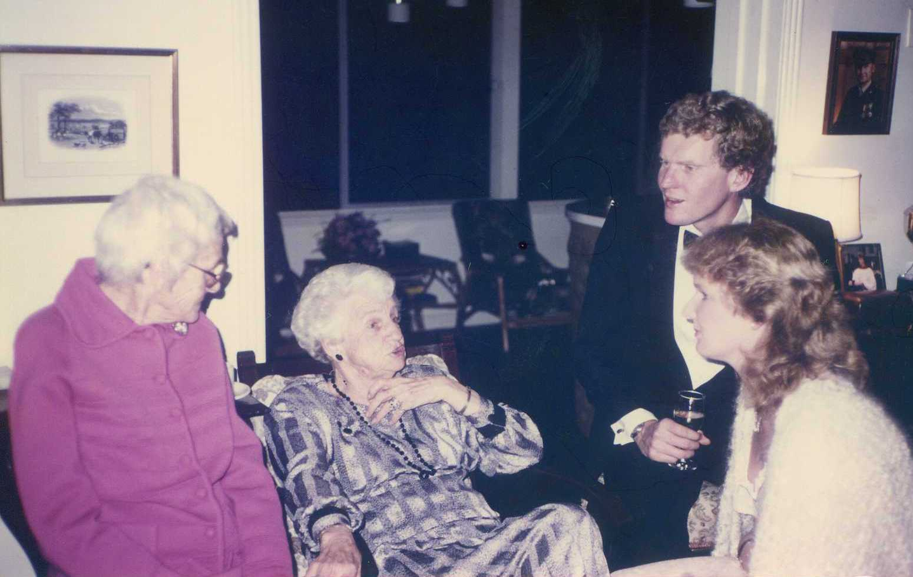
Molly had a friend, a lady if that is an apt description, who persuaded Molly to give up her very comfortable flat at Milton and move with her to a cottage (again if that is an apt description) on the eastern side of Bribie Island. This took place in December 1985. The cottage was back from the beach in a very scrubby area, a not very attractive situation. At the time Molly first spoke of her intention to move she made it out to be quite idyllic – a beach house as she thought. Wendy and I were more cautious although I stopped short of conveying any negative view if only because Molly was so excited at the prospect. In the event Molly hated it from the start and hated it even more when the woman’s somewhat disreputable brother moved in. The woman so-called friend proved to be domineering and wanted Molly to contribute financially to the venture. I think Molly did, probably more than was reasonable from Molly’s little nest egg about which she occasionally spoke – I think she called it her ‘black hole’.14 Eventually Molly called out help. She wanted to move back but of course her Milton flat had been taken up by another person. Wendy and I drove to Bribie and could see that Molly’s situation was completely unsatisfactory. We told her to get her personal possessions together and we would bring her back to Brisbane to Tanglin initially until we could find other suitable accommodation. Molly stayed with us for about a month in the annex while we sought other accommodation that might be more long term. Wendy was aware of a converted old home for retired elderly single nurses owned I think by the nurse’s union on the city side of Albion. Molly had never been a nurse but Wendy persuaded the union to let Molly occupy a room and use the facilities until something better could be found. I guess it was ‘any port in a storm’ for Molly. My diary tells me that Molly moved in on the 22 February. She didn’t like it although stayed there for close to a year before she finally moved back to Milton on the 29th September 1986 when her old flat became available again.
We continued to see Molly quite frequently at weekends, often staying overnight. She attended nearly all our family gatherings and seemed to enjoy being part of these. My last diary entry of Molly staying overnight was 28 February 1987.
I continued to maintain contact with Molly, only by phone; Molly no longer wished to visit even though I was always prepared to pick her up and return her home in our Benz. She may have made the occasional visit but perhaps my diaries may show some record of that. Molly seemed to be travelling occasionally interstate to Victoria although I have some doubts that she ever did. This was in the mid 1990s when it was becoming increasingly clear that my persistent contact was less than welcome. I well recall her response on one such occasion when I inquired of her health and what she had been doing and she responded “you would like to know wouldn’t you”. I had the feeling that she thought I wanted to get my hands on her ‘black hole’ but of course nothing could be further from the truth. Finally, our contact became only an exchange of cards at Christmas but even that fell away probably towards the end of the decade. I felt poorly about that feeling that somehow I had some responsibility for her.
Molly died in March 2003 at the good age of 92. In her final years she had joined the Salvation Army – became a Salvation Army ‘lassie’ had a lassie’s uniform of which she was very proud. The ‘Salvos looked after her and it was a Salvation Army major who contacted me on her death. It seems that they found letters and cards from me amongst her possessions and asked me to take and dispose of her personal effects, several boxes of letters, photos in albums and books that told me a great deal about her grandfather on her mother’s side, the Reverend Mitchell. The Major also told me that they had found a savings bank account with a few hundred dollars in it (Molly’s black hole I suppose). I suggested that if they could access it they should put it to a worthy cause, no doubt pay for her funeral. There were many references to friends with whom she had travelled overseas and I took the trouble to write to all those advising them of Molly’s death. I found her travelling companion was one Hillary Skitch who lived in a northern suburb of Perth. Always intending to visit Hillary should I get back to Perth, the opportunity never occurred. Hillary passed away in 2005.In our correspondence Hillary told me that her experience with Molly had been the same as my own. She too had done a lot for Molly, looked after her on several overseas trips and I think it was Hillary who told me that Molly accused her of wanting to get hold of Molly’s ‘black hole’ money. Again nothing could have been further from the truth. It took some time to sort and resolve Molly’s correspondence, photos and assorted items much of which I consigned to the incinerator or at least burnt them in the backyard compost bins. What else? Wendy and I attended her funeral at the Mount Thompson Crematorium chapel. I was asked to say a few words about Molly and of course did so.
In telling the story of my association with Molly I have relied on an increasingly imperfect memory. It is time now to continue reviewing my working life as a public servant in 1985.
Secondary School for our boys
I have previously described the circumstances that led to our enrolling both Robert and Christopher for their secondary schooling at the non-sectarian private school, Brisbane Grammar. For our boys to be enrolled I had to pay an enrolment fee, somewhere in the order of three or four hundred dollars, non-refundable. (Not to be confused with Annual tuition fees). Brisbane Grammar had a good scholastic reputation but becoming increasingly realistic about both Robert and Christopher’s scholastic capacity I wondered whether the Grammar was the right school for both our boys. Of course we could not help but be aware of the very obvious Roman Catholic college fronting Sandgate Road only two blocks away from our home in Beams Road, St Joseph’s College commonly known as Nudgee College since at its inception it was in the suburb and Roman Catholic Parrish of Nudgee. The school these days lies in the suburb of Virginia after the re-drawing of Brisbane suburban boundaries some years ago. It, with its companion Roman Catholic boy college St Josephs Gregory Terrace is a GPS school15. We assumed at the time that Nudgee College was confined to boys of the Roman Catholic religious faith but that proved not to be the case. All Roman Catholic schools and other sectarian schools were required to enrol at least 16% non-sectarian students in order to qualify for government funding. As far as Nudgee College was concerned it was open to all religious faiths or no religious faith at all for that matter. A further attraction was that school fees were about 60% of those charged by non-Roman Catholic schools. Robert’s sporting prowess which was considerable at the time was a further attraction to the sport minded hierarchy of Nudgee College. Robert was enrolled, and Christopher held in abeyance although once Robert had started which he did on the 31st January 1985 Christopher wanted no other school and who were we to argue. I will most likely say more about Nudgee later.
1985
Having scanned through my work diary for 1985 I find few if any highlights. However, perhaps I can find a few indicators to at least show that I had some sort of a role in the corridors of the Queensland Government. Not all entries are purely work related: many refer to family, home and others to community interests such as Rotary and professional associations, the Institution of Surveyors and Institute of Cartographers. In a small government department, particularly one which functions closely with its professional associations and related private firms there is a good deal of overlap in function and responsibility.
Before embarking on specific diary entries (at least those I consider have some merit worthy of mention) I should explain the rather unique relationship between the States represented by their responsible department, with surveyors; that is those surveyors that are registered or licensed to carry out property boundary surveys. While the licensed surveyor contracts to carry out a boundary survey for a private client, the survey must be registered with the state land titles office and therefore becomes part of the formal cadastral network of the State; that is, the State’s cadastre. Although the client who requires the survey to be carried out pays the surveyor for the work involved, (this includes not only field work but also the drawing of the plans in accordance with the strict demands of the Titles Office) the survey becomes incorporated into the boundary network of the State, the State’s cadastre. It must therefore conform to all the requirements the State may impose in accordance with State law. Now back to my diary entries........
- 21 Jan..Returned to work after a month of annual leave combined with the Christmas – New Year public service break. Although my diary is silent on the matter I believe we would have managed a week, maybe two at Caloundra. December/January attracts good holiday rentals – in 1985 around \$800 per week so it was at some cost that family occupied Pumicestone Chase.
- 22 Jan ....I had decided that I had fulfilled my duty to the Queensland Division of the Institution of Surveyors in producing the Queensland Surveyors Bulletin and although the Department allowed me ample work time, in fact virtually required me to run with its production, I really felt it was time to pass it on. If nothing else it certainly caused me to become quite well known throughout the profession. I had substantially changed the format and layout of the publication, included photographs where relevant; in a word made it more professional in appearance and content – more interesting dare I say. On this day my diary records that I had discussion with a colleague from another department – David Pace although I continued as the editor for some months after that and I am not sure that David actually took it over. At least one plus that editorship gave me was a place on the Institution’s Divisional Committee. It met monthly on a Wednesday evening and afterwards the Committee retired to the Johnsonian Club in Upper Edward Street for a meal and a beer or a glass of wine. The Johnsonian Club, although relatively small, was one of Brisbane’s oldest clubs. Our Surveyor General, Kevin Davies, and maybe other surveyors, a few at least, became formal members of the Club such that it more or less became the club for ambitious surveyors. Kevin, never satisfied with being an ordinary member was appointed to the Club’s management committee and soon after Club President.
- 23 Jan...The State Map. I have previously mentioned that in the lead up to the Commonwealth Games in 1982 the Department and more particularly the surveyor general Kevin Davies had been embarrassed by the fact that the Department did not possess a general purpose map of the whole of Queensland on a single sheet. This was in 1981 when I joined the Department. In fact the only map of the whole of the State was the ‘Stock Route’ map created sometime before the Second World War, perhaps in the twenties or thirties. From an historical point of view it was an interesting and not unattractive product printed in three colours usually sold on a linen base, a process that deserves a special mention – but not here. I have previously mentioned the commercial arrangement I had with a Mr Bill Pringle, then the proprietor and owner of the mapping firm ‘Travelogue Publications’. Also we had produced by that time several tourist maps covering all of Queensland using as a base the Aeronautical Charts produced by the Royal Australian Survey Corps. However, these did not fit the need for a map of Queensland on a single sheet at a scale of I:5 million showing topography by elevation layers and hill shading, major infrastructure, hydrology etcetera. The map was some eighteen months in production and the final product was a credit to our cartographic staff. I think even our surveyor general appreciated 16 it, more especially when he saw it mounted and framed on the walls of minister’s offices including that of the Premier and in all sorts of public places in the State. It became our ‘prestige product’.
- As a result of continuing on as a member of the Institution of Surveyor’s Divisional Committee (even long after I passed on editorship of the Queensland Surveyor’s Bulletin) I came to know the occasional interesting surveyor, perhaps one or two who were not ‘run of the mill’ private practice surveyors. One such surveyor was Brian Mennis who worked as an examining surveyor in the Land Titles Office, a somewhat boring job I would have thought. However, Brian had had many years service in Papua New Guinea and that is where we had some common interest. From memory I think he became Surveyor General of the Territory, possibly losing that appointment when the Territory of Papua New Guinea (TPNG) became totally independent in 1980. I suspect Brian probably resigned since he had little regard for the indigenous Papua-New-Guineans (in common with most expatriates from Australia – most but not all) Anyhow, Brian and his family finished up in Brisbane living in the suburb of Zillmere, a short drive from Boondall. I fell into the practice of taking him home in my government car after Divisional Committee meetings – it wasn’t far out of my way and he was always grateful for the lift. In conversation he told me a good deal about colonial life in the TPNG and I could relate to that through my own early Army days in New Britain, New Ireland where I had become very aware that Australian colonial masters were not particularly benevolent. At the time Brian and I, for a number of years served together on the ‘Professional Development Committee’, in fact I think we two became the sole members of that committee until Brian pulled out of all his Institutional involvement as a result of ill health, in fact resigned fro the Titles Office. I lost contact with him. I don’t think I would have called our relationship as a friendship. I suspect Brian had few if any friends – he wasn’t an easy person to know.
- Kevin Davies held the Survey Corps in some esteem. This surprised me a good deal since he had small regard for any initiative resulting from any federal Government agency. However, he held the Army to be separate and different. Perhaps it was. I have already described his insistence on attending the retirement dinner of the Corps Director at the time, Colonel John Hillier at Balcombe and his slightly embarrassing presentation of an inscribed crystal decanter to Colonel Hillier in recognition of the work of the Corps in Queensland over the years – a nice thought but I think it was intended as a bit of ‘one-upmanship’ over other State surveyors general many of whom were attending the dinner. Anyhow, that preamble helps explain his wish to arrange detachments of various middle level technical officers to both the Army Survey Regiment at Bendigo and the School of Military Survey at Bonegilla. Des Diggles was the one chosen to go to Bendigo. I tended to agree with the choice although I didn’t consider Diggles to be a top-line technologist, however, he was competent enough and I had appointed him as a project manager in the area of ‘client mapping’. He had a fractious personality and I had misgivings as to how he would go. Perhaps my agreement was based on his involvement in the Army Reserve where he carried the rank of Major. Diggles departed for Bendigo on the 7th February. My old colleague Jorge Gruszka was Commanding Officer of the Regiment and I phoned him on that day and gave him some back ground on Diggles and what sort of experience we hoped he might achieve. Jorge assured me that Diggles would be well looked after.
- The Assistant Directors all of whom I have previously discussed were verging on retirement. I note in my diary that Ian Wrench departed 24 May, Berry Jones 22 October and Ken Roberts maybe earlier but it is of Ken that I wish to speak. To my surprise Kevin Davies suggested (through Keith Smith) that it would be appropriate for Ken Roberts to receive some recognition for his years of loyal service. Keith found that a difficult assignment and asked me to prepare the submission. At that time all submissions for either Imperial Awards (orders of the British Empire) or awards in the Australian system for Public Servants had to be vetted and approved by the Premier’s Office, in fact by the Premier himself (Sir Joh Bjelke Petersen).I delved into Ken’s public service background including his war service and managed to put together a page of commendatory service. I took this to the Premiers office and an elderly gentleman who was responsible for honours and awards and found him very supportive. He suggested that the appropriate level should be MBE (Member of the Imperial Order of the British Empire). The Queensland Government at the time refused to recommend public servants for Australian Awards and clung to the old Imperial system. So it happened, about a year later – Ken received his award, an MBE. Ken phone me soon after. He had been told that it was me, who had prepared the submission, probably by Keith Smith. I took him to lunch at the United Service Club. Ken told me that the award made him feel that his public service career had been worthwhile. Indeed; it had been!
Spencer Broughton – an unusual fellow
I was never all that clear exactly what Spencer’s job was in the Department – he seemed to be a ‘one off’; maybe he fitted in to that small section directly under Kevin Davies known as ‘Corporate Services’ or similar. So why do I choose to make particular mention of him? Well; partly because I had known Spencer in a past life, so to speak! When I was a lieutenant in the Northern Command Field Survey Section under Major Spencer Snow (1961-3), Spencer Broughton was with the then Survey Office of the Queensland Land’s Department, a recent graduate of the surveying course at the University of Queensland. He was wildly enthusiastic about his role which had something to do with the introduction of Electronic Distance Measurement (EDM), the Tellurometer, into Department survey activities. Spencer Broughton saw an inherent fault in the general practice of Tellurometer line measurement in that the meteorological readings (temperature, air pressure, humidity – referred to as the ‘Mets’) were taken only at the terminal stations of the line being measured. Spencer believed that what was needed for accurate measurement was mets in the middle of the line which would be most times many metres above the land. Perhaps he was right, but how? The Survey Corps had been using the Tellurometer extensively for five years at that stage, measuring lines of twenty to thirty kilometres in length and by that token were the proclaimed experts. Perhaps Spencer thought we could use a light aircraft, maybe helicopter to obtain mid-line mets although I do not recall him making that suggestion. Anyhow, nothing came of that and Spencer returned to the Survey Office, perhaps nursing his disappointment at the Army’s response.
From time to time over subsequent years I had distant contact with Spencer, at one time visiting the University’s own surveying faculty for some reason – I was a major and Squadron OC at the time – and in some sort of a briefing or maybe at morning tea Spencer was present and I may have said something about our previous encounter. His almost ‘boyish’ enthusiasm was still evident but I felt then that there was something amiss; perhaps his almost too fast speech, tending to stumble over his words. In fact I wondered whether he was recovering from a mental disturbance.
Anyhow, back to 1965 – 1995 there was Spencer, somewhat middle aged but with many of the same mannerisms (if that is the right term) that I recall from my earlier contact. I never doubted his innate intelligence – it seemed to be several plains above my own – but somehow it lacked commonsense or maybe practicality.
So what is the point of this dissertation on Spencer Broughton? What I found astonishing was that he had no recollection at all of our previous encounter some twenty years before; somehow it had been totally erased from his recollection, his mind. And yet it was significant – the introduction of EDM into surveying Australia. I maintained a friendship with Spence until his retirement (early I think) from the Department in about 1995. Yet in all our conversations I could rarely understand what he was on about.
Ken Lyons – a less than perfect relationship
I have made previous mention of Dr Ken Lyons in relation to his photogrammetric shallow water mapping initiative. I had had a long ‘on and off’ association with Ken Lyons both in the Corps and then in the public service. Ken was a graduate of the Royal Military Duntroon, graduating as a first lieutenant and ‘colour sergeant’, only one step short of the Sword of Honour. He obtained his degree in surveying at the University of New South Wales soon after. He served his long university breaks on short term attachment to various field survey units as was general practice with Army sponsored university under-graduates. Ken did well at university, graduating with first class honours, so setting an unachievable goal for those that followed him.
I first met Ken at the time he was attached during the January university vacation with the Northern Command Field Survey Unit in Victoria Barracks about 1963. Having finally graduated he was posted to the Western Command Field Survey Unit, Perth; was there for three years, was very well thought of. I didn’t catch up with Ken until I was posted to Sydney in 1965 to raise the Topographical Survey Troop for Vietnam service. I cannot recall what Ken’s appointment in Sydney was – maybe he was doing further work with the University, however, he and his wife had a married quarter not far our own at Clovelly. I lost contact with Ken following my return from Vietnam, my eighteen month civil secondment to become a licensed surveyor and then my two year posting to Singapore followed by Staff College in 1971 Ken took command of the Vietnam Troop and served in Vietnam in 1968/69. To my surprise Ken resigned his regular army commission soon after and transferred to the Army Reserve, posted back to Perth on the ‘unallotted list’. During Ken’s earlier appointment to the Western Command Field Survey Unit his OC was Major Clem Sargent who subsequently held Ken in high regard no doubt with good reason. In 1972 Clem was appointed Commanding Officer and Chief Instructor of the School of Military Survey at Bonegilla. Following Staff College I was appointed Senior Instructor and 2ic under Clem. That is the background to what followed. Ken needed a period of full time duty apparently to sustain the continuity of his service on the unallotted list. He had achieved the substantive rank of major. He wrote to Clem and asked whether he could be fitted in to the rank structure of the school to undertake a special project he had in mind that would greatly aid survey operation planning and management. Clem immediately agreed and Ken arrived on a six week short term appointment. I don’t recall very clearly quite what Ken did during that time. There was nothing uniquely significant about what Ken had in mind; it was a planning process called by several names including ‘network analysis’ (which I preferred) or ‘critical path analysis’ more common in industry. I had had some exposure to the process at Staff College although not in great detail, sufficient to recognise its potential in survey operation planning. Ken presented his writing to Clem who kicked it over to me with the comment ‘can you make sense of it’. I couldn’t other than in a broad way; certainly not in any way that could have an immediate application. The Army at the time was introducing a training procedure termed by the too obvious name –‘ Training Systems’ – also known as ‘Training Technology’. I wondered if what Ken had in mind related to that but it didn’t seem to. What was the outcome of Ken Lyons paper. In a word – nothing!
Ken returned to Perth and turned his attention to furthering his academic qualification finally achieving his PhD with the Curtin University in about 1981. He then took an appointment with the University of Queensland and a little while after became head of the Surveying Department and achieved a professorship.
Ken saw me as a useful contact under Kevin Davies in the Department of Mapping and Surveying. I am not sure that I was and in any case I resented being ‘used’ by Ken to further his own career. In effect he wanted to use or have allocated to him some departmental staff to further his personal projects. I was less than impressed with his ‘shallow water mapping project’ and couldn’t see it going far, - it didn’t! Furthermore, Ken saw its application being directed to Papua New Guinea; nice idea but having the Queensland Department commit resources internationally without due political support authorised only by a middle level public servant seemed not a good idea. Kevin Davies was aware of Ken’s proposal but short of supportive. There were other ‘initiatives’ – Ken, if nothing else, was certainly imaginative. Whatever relationship Ken might have had with the Surveyor General, it didn’t last long and they had a major falling out. I didn’t witness it but I certainly heard about it. I will say nothing more about Dr Ken Lyons – this is not his story. I suppose in effect he dropped me a little like the proverbial ‘hot potato’ and I learned later that others had had the same experience. Nevertheless we remained on friendly terms.
Conference at Alice Springs
The Department or more specifically the Surveyor General Kevin Davies continued to be quite generous in funding my attendance at the annual Institution of Surveyors Annual Congress17. The 1985 Congress was held at Alice Springs and that made it in my mind special – at least with regard to the usual state capital city venues. And, of course, I remained editor of the Surveyors Bulletin so in the interest of Queensland branch of the Institution it was important that I attend and appropriately report on the various sessions.
It was a direct flight from Brisbane to Alice Springs at least once or twice a week and I took such a flight on Saturday 23 March returning to Brisbane one week later. With a few other Queensland attendees, private sector surveyors mostly with wives (I recall Ian and Anne Keilor in particular) I checked in to the Larapinta Motel, a very recent and very comfortable motel. The conference venue was within the ‘Lasseters’ complex of casino, conference centre restaurants and other entertainment facilities on the eastern bank of the Todd River on the southern side Alice Springs. A shuttle bus plied between the various places of accommodation and Lasseters although the Larapinta was within a longish but pleasant walking distance of Lasseters and I did this on a couple of occasions.
I don’t recall much about the papers presented at the conference – they were fairly standard survey topics. But there were one or two that were off the beaten track one of which was by Australia’s first female commercial aviator. I do not recall her name but she was a lady of about 65 years (a guess) and she spoke of the many trials and tribulations of becoming a commercial aviator in a very male dominated industry. The evening entertainment, much of it out-doors was outstanding. I recall a barbecue night quite lavish held in the dry bed of the Todd River a short distance from the town where we were entertained by Ted Egan singing from his inexhaustible repertoire of bush ballads. Egan was a large personality and some years later in 2003 was appointed ‘Administrator’ of the Northern Territory. Egan had a strong commitment to the Aboriginal peoples and spoke of this commitment on the night.
Our annual dinner was at the Lasseters Casino which I seem to recall was out of doors and we were entertained by a most remarkable person, Camus McColm (I might have the gentleman’s name slightly wrong). He was introduced under another name which sounded vaguely familiar to most of us without being too sure. Camus gave us an ‘in character’ dissertation in which he spoke of the famous surveyor/ explorer figures of central Australia as if he knew them personally. He looked old enough to be absolutely convincing and yet left you wondering. Finally all was revealed.
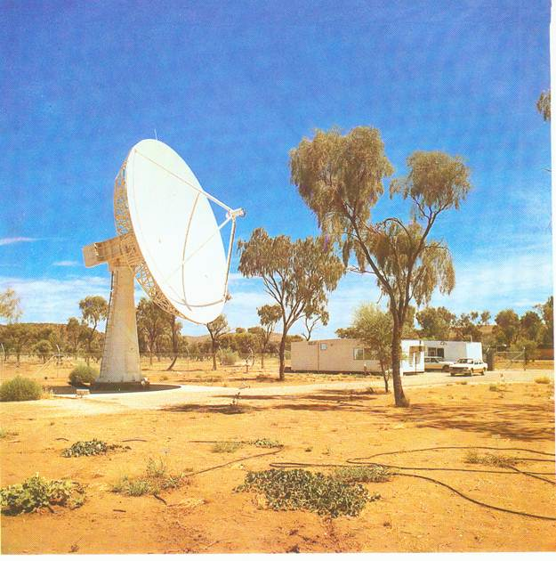
The Commonwealth mapping organisation ‘The Division of National Mapping’ managed several Commonwealth scientific enterprises one of which was located ten or so kilometres south of Alice Springs. It was The Australian Landsat Station (now called The Australian data Acquisition facility). A pre-congress tour had been conducted of the facility and for some reason I missed out on that. At morning tea on about Wednesday I was in a small group that included the Director of National Mapping, Mr Con Veenstra whom I distantly knew from my days as Commanding Officer of the Army Survey Regiment. I mentioned that I was sorry I had missed the visit to the Landsat Station and Con immediately arrange for me to have a private visit, the following morning. It was a very generous offer. I knew that Con for reasons I never understood was not well liked and yet to me he was always ‘gentleman Con’. The station itself was certainly not spectacular comprising a large tracking disc and two large demountable huts, air conditioned of course, somewhat less than I expected. Nevertheless, I found the visit interesting. Both demountables were jam full of very high tech computer equipment (probably these days the operation could be compressed onto a lap-top) and a small bunk room in one of the demountables (I think). Perhaps what I found fascinating was simply this very high tech facility sitting alone in the middle of the desert in central Australia.
Our final conference dinner was at, of all places, a vineyard on the Todd River maybe about ten kilometres out of Alice. I don’t recall much about the dinner, no doubt it went very well, but I especially recall getting there. We were given the choice of travelling by bus or by camel ride – that is, on the back of a camel. I chose the latter. We set out about 5.00pm two conferees to a camel, the camels linked together in a ‘camel train’. It was the most uncomfortable ride I have ever had. Camels sway a lot in their loping gait and I was feeling considerably motion sick by the time we arrived. I soon got over that but worse still I had a gravel rashed an bleeding bum and it took at least a week to get over that! It was especially concerning because the following day (Saturday) with three others in a chartered light aircraft we planned to fly to Uluru (Ayres Rock) before returning to Brisbane. Nevertheless, I was committed and went regardless. It was about a forty five minute flight in fairly bumpy conditions but very clear and sunny. We flew around first the ‘Olgas’ and then the Rock finally landing –on the airstrip near Yulara and the newly constructed Sheraton resort. We hired a Landrover or similar and drove the few kilometres to the Olgas then back to the Uluru, circumnavigated the Rock and then back to our aircraft then to Alice arriving shortly before take-off back to Brisbane. Even the trip back to Brisbane was not without a unique experience. In the late afternoon with a setting sun and a pink landscape below we overflew the ‘Channel Country’ where the inland rivers, the Diamantina and Coopers Creek making their way south to Lake Eyre split into hundreds of distributaries (hence ‘channels’). A memorable day to conclude a memorable week.
Dr Mary Garvey
Government Departments of many hues seem to have a penchant for reviewing their establishment and purpose. During such reviews production, if that is the purpose of the department or even some other administration function enters a state of hiatus. Staff morale, fearing staff reductions (knowing full well that that is the underlying but unstated purpose of the review) plummets and mostly never recovers. During the 1980s and no doubt for decades before, decisions concerning staff numbers could not be made internally without the approval of the Public Service Board. Even the purchase of an additional vehicle required PSB approval and beyond that, the approval of Cabinet might be required. I recall that my own appointment required Cabinet approval!
Enter Dr Mary Garvey. Keith Smith had suggested that our Department needed an adjustment to our cartographic staff numbers that had been eroded over the past couple of years. Surveyor General Davies, having little interest in topographic map production and even less interest in cadastral (property boundary) mapping had allowed staff numbers to diminish, drifting staff into activities unrelated to our mapping function. Keith Smith, being Director, Division of Mapping felt that the situation needed addressing and regularising and he put a proposal to do so to Davies. Whether he was entirely ‘fair dinkum’ in the proposal I was never at all sure. It was not a proposal that Davies would be inclined to support, but Davies, perhaps avoiding the issue told him to put the proposal to the Public Service Board. Keith, somewhat surprised, did so and this is where Dr Mary Garvey came into the issue. As my work diary records, on the 11th March I was asked to escort Dr Garvey around and introduce her to the staff and generally brief her on the functions of the Division. Dr Garvey actually worked for the PSB and it appears that the investigation of proposals of this nature was her job. Over the ensuing few weeks from time to time I saw a good deal of Mary Garvey. She was a lady probably in her fifties, very mild in her manner, pleasant company. I never saw her final report – it was directed to the Surveyor General never to be seen again.
I was shocked to learn a couple of years later that she had died quite quickly of a cancer.
Family and at Home
I have said very little about family life and at home, although I must confess my work diaries say very little about anything unrelated to work and professional involvements.
Sarah continued her nursing training at the Royal Brisbane Hospital. She had moved back into home probably early in 1985, and with a little help from Mum and Dad purchased her first car, a second hand small Ford which enabled her to meet her shift requirement at the hospital. She continues to do well.
Robert started at Nudgee College on 31 January 1985 and all went smoothly. Uniforms were bought, khaki shorts and shirt for summer use and a very smart navy-blue suit with white shirt and accessories. Sarah said the Nudgee boys in their winter uniform looked like young executives. Robert was immediately involved in cricket and my diary notes that at a match at Tennyson (the location of Nudgee Junior School) Robert top scored with 32. At the inter-house swimming the day before Robert was first in freestyle and butterfly and third in backstroke. I was a little at a loss as to where he had learnt those skills although I recall the year before at Boondall State in their 25 metre pool in a marathon event Rob had swum 105 laps in the allotted one hour of swimming being beaten by only one other by one lap. Rob was no scholar, but he loved his sport.
In 1975 Chris was still at Boondall State. He plugged along achieving average but adequate grades. Chris was no sportsman but participated to the best of his ability. He was well liked by all and had several close mates whose names never found their way into my diary. Chris was always protective of Liz, always walked her to and home from school often to Liz’s annoyance as Chris regaled her with accounts of the latest scientific achievements.
Liz did well at the Boondall State School, was well liked by her teachers and developed many school friends. It was largely through Liz that we met the Scriven family who lived only a block away from Boondall School. Liz became good friends with their daughter Nicole, both joining and playing netball in the local children’s netball club. Nicole was a big girl and became a very effective goalie and Liz, small and fast an equally effective centre. Either that year or the year after Liz was awarded the best and fairest trophy for North Brisbane. Between School sports, mainly netball, and ballet, Liz kept very busy but she enjoyed it all. In 1985 it was clear that Miss Sapsford was failing and my diary notes that on 17 August the dear lady collapsed onto the floor. The class was dismissed and there was some doubt that she would continue but she did. She was able to call upon a couple of past students to give her support and her school continued for another couple of years, for Liz still on a Saturday morning.
Beyond work my own external interest was Rotary. I enjoyed my Wednesday night Rotary meetings which in 1985 were still at the Golden Years Centre. Wendy and I attended most if not all Rotary events – District Conferences – which conveniently were mostly at Caloundra.
My diary notes that on Saturday 2nd March Wendy played golf, probably only nine holes but I do recall that she was keen to get back into golf and contemplated joining the Virginia Golf Club. I don’t think she did and I it was about then that her golfing career petered out
1986
A scan of my 1986 work diary would indicate that it is little different from 1985 – more of the same. Nevertheless, a closer perusal might reveal a few highlights. I had commenced leave a few days before Christmas. Christmas was at home with cousins Sue and Brian O’Connor and cousin Edna for Christmas tea. We headed to Caloundra, Pumicestone Chase during Christmas week and stayed until the 11th January, a good long break. My diary tells me that I went to the ‘Gabba’ with Robert for the Australia – India cricket test match on Sunday the 12th, finally returning to work on Monday 20th January.
Picking my way through my 1986 work diary I can highlight a few incidents that if nothing else reflect a tempo of activity no doubt typical of the work life of a public servant – no great achievements but...
- 28 Jan – I had the misfortune to sprain the ankle of my left foot which left me hobbling with a crutch for the next two or three weeks. My good neighbour Alan Unkle (a public servant) unofficially took over my government car driving me (and himself) to work and home again each day. The Forest Department office was fortunately only half a block down Charlotte Street from the Land Administrative Building in George Street.
- 4 Feb – a new Minister, Mr Bill Glasson – The Surveyor General had me prepare a personal CV of our more senior officers for his perusal. In the evening I attended a valedictory dinner at the ‘Petrie Mansions’ for Mr Ron Jones, retiring from the firm ‘Jones, Flint and Pike’, a well respected private survey; firm with historical connections to Survey Corps in that John Pike served with the Corps in WW2 in New Guinea and Borneo. John Pike remains in my memory as one of the profession’s gentlemen as were the other two partners in the firm –JF&P. The original ‘Jones’ of the firm was none other than Clem Jones, longest serving Lord Mayor of Brisbane.
- 24 Feb – my diary states that Chris was interviewed for entry to Nudgee College in 1987 by the Principal, Brother O’Conner (or was it Brother???) by then. Wendy and I had held on to the thought that Chris would attend Brisbane Grammar where he had been enrolled with Robert soon after we arrived in Brisbane, (the sons of Army officer). However, with Robert now attending Nudgee, Chris wanted no other school and of course it had further attractions being only a short walk from Tanglin and its fee structure was 70% of that of Grammar. I wasn’t sure how Chris would survive the intense sporting ethos of Nudgee – but he did!
- Sarah turned 21 years of age on the 14th August and we celebrated at home with many guests invited. Her birthday event was on the front lawn beneath the front patio. It was quite an event – we had a portable dance floor installed, a large tarpaulin erected over the area in case of rain, a jazz organist hired for music and a caterer providing a rolling supper. Sarah had bought a party gown and looked beautiful. Liz was the ‘floor show’, performing a ‘Charleston’ she had learned from the daughter of our near neighbour’s Adrian and Bev Crowe. Chris (I think) acted as MC.
Haley’s Comet
!986 was Haley’s Comet year. The recurring comet returns to orbit our solar system every 85 years. My interest in the comet probably emanating from my days of field astronomy in the Corps (La Place no less) and I wanted to make its appearance in 1986 a memorable event for my children. To do so I persuaded Wendy that to get a clear view of the comet away from the city smog and haze we should make an excursion to western (or near western) Queensland – we chose Dalby. We booked two ‘stationary’ caravans in a caravan park on the western side of the town. Wendy thought it would be nice to have friends accompany us and we suggested such to Ron and Rosemary Unwin who responded with enthusiasm. They also invited friends of their own, a fellow from the Queensland University whose name I have forgotten. So, it was quite a large contingent that departed Brisbane at various times on that Friday afternoon – not quite what I had planned but so be it.
I had borrowed from the Department an old 5¼ inch Tavistock astronomical theodolite that had an excellent, quite powerful, telescope although I was somewhat up-staged by Ron’s university friend who had a concave mirror reflecting telescope and of course that had to be better than my Tavistock. It wasn’t – bit of a toy I thought! Anyhow, the Skitch family arrived at the caravan park late afternoon in our Benz (the blue one) and took over our allocated caravans. I wanted to recce our observation site which I had previously chosen from air photographs. The caravan park was at the corner of the highway out of town and a stock route/minor road heading south. The observation site I chose was a couple of kilometres south of the caravan park, a knoll on the southern side of a small creek, probably dry at that time of year. Chris and I recced the site, it seemed ideal and we returned to the caravan park by which time the Unwins and friends with more children than I might have wished for had arrived.
By this time, probably about six o’clock darkness was creeping in, I was anxious to get to our observation site and set up. I think Wendy was becoming a bit reluctant about the whole venture not helped by Rosemary Unwin who likes to take over and lose sight as to why we were there. For Rosemary it was just a social outing and her main concern was where we would eat – a minor concern to me. Chris was totally enthusiastic, and I think so were the Unwin boys; the girls probably not. Anyhow, we finally set out, headed south and crossed the creek and set up on the small clear knoll. We had crystal clear skies to the east and Haley Comet hung there at an ideal elevation of about 35 degrees. It was a fascinating sight, this remarkable astronomical phenomenon that occurs only once every 75 years.
It was not our first sighting of Haley’s. Some few weeks earlier I had awoken the family at about 4.00am and we drove to Sandgate at the cliff top. From there Haley’s was visible to the naked eye in the east over the sea – somewhat hazy, but visible. There were many cars packed in along the road and maybe a hundred or more viewers peering out; some expressing disappointment at what they were (or were not) seeing. Certainly it was not spectacular.
At Dalby we continued viewing Haley’s until maybe 9.00pm. A bit of wispy cloud was forming and of course the elevation of the comet was increasing – 45 degrees and more. But then in the distance somewhere south of our viewing site we could see headlights approaching and the sound of vehicle engines becoming increasingly louder. Maybe we were all a little apprehensive but Rosemary started to panic. She insisted the children, at least her own get back into their car. Finally the approaching vehicles pulled up and three or four, may be more, young fellows hopped out; some may have been a little ‘under the weather’. They, not unnaturally asked what we were doing. They were fascinated when we told them and pointed out the comet – they knew nothing about it. We (maybe I) told them of the significance of the comet, its re-occurring cycle of 75 years. Then one of them asked why we had chosen that particular location. It was known locally as ‘Shit Hill’ and the creek, almost dry was ‘Shit Creek’, so named because cattle being driven along the stock route would prop there and apparently drop their load. Not sure what the others made of that but Christ thought it was hilarious – we had driven our five year old blue Benz through ‘Shit Creek’ not once but three times, four by the time we returned to the caravan park. They departed soon after, driving themselves through Shit Creek, on their way to town no doubt. Rosemary and girls emerged from their locked cars and wanted to do no more than to return to the caravan park. That was certainly the end of our comet viewing. At least I had achieved my objective – a memorable occasion, at least in Christopher’s mind and maybe Robert’s.
The following day, Saturday – I am not sure that we did anything significant during the day, probably had a look around town and rested up for another night of Haley viewing. There was no way that Rosemary was prepared to return to Shit Hill and I was starting to feel a degree of opprobrium at my ‘putting everyone at risk’ the previous night. Ron Unwin found the whole episode amusing – didn’t have too much to say. That night or late afternoon we set up in a railway reserve on the southern side of the airfield just out of town. It came up cloudy and there was no hope of viewing Haley again and I was thankful that I had prevailed the previous night, albeit at Shit Hill. The Unwin twins with Robert and Chris took off on a walk along the railway track and took some time to return to Wendy’s chagrin, Rosemary’s also no doubt. They finally did and we packed up and headed to a picnic spot, public park I think and consumed the picnic that Rosemary, perhaps helped by Wendy had provided. The night came to an end in a fairly pleasant way but it was the end of Haley.
Sunday it was time to return home – goodbye Dalby. Somehow the night before a plan had been hatched to visit the Bunya Mountain national park – the home of the ‘Bunya Pine’. We had lunch there and some of us took one of the shorter walks along well established paths. Mid afternoon we departed and my diary tells me that we stopped briefly at the Jondaryan Woolshed museum, stayed a short while and then headed home.
Was it a worthwhile trip? I think so; it achieved my objective to observe Haley’s Comet in a situation that would remain in the memory of those who went, especially Christopher – Haley’s Comet and ‘Shit Creek’.18
My Rotary Club had expressed the wish to make an occasion of viewing Haley for the whole club and on the 16th April, only a few days after our return from Dalby, we bussed to Mount Glorious. I was uncertain as to what sort of view we would get of the comet from the terrace of the Mount Glorious restaurant. At least it faced east where we should see the Haley hanging in the sky at an elevation of 45 degrees at about 9,00 pm. I was seen to be the Club’s resident astronomer and I gave an account of the comet on the bus enroute to Mt Glorious – not all that easy because on the windy road ascending the mountain I was becoming increasingly travel sick – but I held on, counting the minutes to our arrival. I was less than optimistic as to what we would see since on leaving Brisbane the sky was becoming increasingly overcast and furthermore the comet would be more or less in the sky above the city of Brisbane with all its light and other pollution. I don’t think my Rotary colleagues were particularly concerned – they seemed more interested in the meal awaiting at the restaurant. The trip was about an hour or maybe more and we finally arrived and moved out onto the east facing terrace. And there was Haley, hanging in the sky directly above the city with the heavy overcast like a blanket over the city subduing the lights. From Mount Glorious we were above the overcast and the sky for our purpose was crystal clear. It was a successful night. I seemed to survive the trip home suppressing the urge to chunder, having eaten very modestly at the Mount Glorious restaurant.
1986 was to be Haley Comet year and NASA had launched a rocket full of instrumentation to penetrate the tail of Haley for whatever scientific purpose NASA might have. It was somehow televised from one of the major observatories and Kevin Davies invited all to his office to observe this happening. What actually happened it was hard to see – nothing much at all as far as I could see. Apparently the communication system failed and the rocket was lost for some time, maybe for ever – I am not sure. The newspapers reported it as a fizzer; perhaps it was!
A home computer
1987 became the year of the home computer, not only for the Skitch family but for many other families it seemed. A personal home computer was no small outlay. The cost ranged from about \$1,000 at the low end of the market to \$3,000, or maybe more and one might need a few accessories such as a printer, ordinary black and white or even colour if you could afford it. My neighbour Allan Unkles leapt into the market and bought an ‘Apple Mackintosh. Laptop (or was it a .Desktop) and became an unofficial salesman) but I was not impressed – I didn’t like the Apple Mack type fonts. Allan became very proficient with his Apple Mack but I remained unimpressed.
I am not sure how I became aware of the ‘Commodore Amiga 1000’ but I did. The ‘1000’ in its description meant that it had a whole megabyte of memory when that really meant something and it really was surprising what one could do with a thousand bytes of memory. While I had a moderate interest in acquiring a home computer Wendy was positively enthusiastic and Christopher even more so. The fact that none of us had keyboard skills (Wendy a little) was no deterrent – they would follow. So, on the 26th July 1987 we became the proud possessors of a Commodore ‘Amiga’ (meaning ‘friend’ I assume) computer and then it became a competition as to who and when would occupy the driving seat. We became a computer-oriented family. Robert had a passing interest, more especially after we acquired a colour print out device (his interest was computer art) and Liz – none at all.
A few years later the Amiga 1000 was replaced by an Amiga 2000 (two megabytes of random access memory) and after that – I have lost count. I personally moved onto ‘PCs; Chris and Wendy leapt across to Apple ‘Mac’ with numerous peripherals.
George Hann
George Hann had been a career officer of the Royal Australian Survey Corps. I had known George from the time I was posted to the Army Survey Regiment as a corporal in 1958 so why would he now feature in this account of my public service years? George died in 2002 and I wrote a valedictory of his life as I knew it, published in our Corps Association Bulletin of July that year. George retired as a major in 1972 after 32 years of service He was one of the most unique individuals I had known in a lifetime. George was an inventor – he thought ‘outside the box’. After leaving the army and living with his wife Bette for many years in a beach front home on Prince Edward Parade at Redcliffe George had converted his lounge room into a terrain modelling workshop where he developed some remarkable techniques of relief modelling, imposing on the model cartographic detail in precise position and registration. George, forever an entrepreneur, believed his unique concept had commercial possibilities and with that in mind he put a proposal to the surveyor general. Kevin Davies passed it on to Keith Smith to investigate and this resulted in Keith and me calling on George in his Redcliffe home on the 22nd July 1986. Perhaps we enjoyed Bette’s hospitality but neither Keith nor I could see any commercial prospect in George’s remarkable contraption even if we marvelled at its ingenuity. All we could do was to suggest he approach commercial enterprises. In a way it was a sad outcome, but I think George had some later success.
Towards the end of the year
Beyond what I have written, there is little else to report. I had another trip to Melbourne, in October, this time to attend the biannual conference of the Australian Institute of Cartographers taking advantage of the ‘paid for’ trip to catch up with old friends Kevin and Myrie Moody, staying with them for two nights. For the remainder of the conference to facilitate attendance at evening sessions of the conference I booked in to the old but comfortable Victoria Hotel in Little Bourke Street. My diary tells me that I visited Lou and Gillian Sommer before returning to Brisbane on the first day of November. I note too that a contingent of the conference visited my old command, the Army Survey Regiment at Bendigo. We were well looked after.
1987
I am not sure that I can continue my public service years in the detail I have wished upon myself so far. I note that I am on page 65 having covered but six years with thirteen years to go that might indicate another 130 pages of writing – well, maybe! Further, in my eighty third year I recognise that my capacity for continuing this account is diminishing – some days more so than others. I have summarised from my work diary work events of 1987 so I will press on – a little more.......
After a fairly lengthy break from Christmas eve I returned to work on the 16th January.
Bill Fowler
It must have been in the previous year that I had my initial contact with the young Englishman Bill Fowler. Bill had been referred to the Department as a source of possible work and had been further referred to me probably by Keith Smith to sound him out to determine what if anything he had to offer. It all seemed rather irregular, but that was the nature of the department, in fact the nature of our Surveyor General, Kevin Davies. In the normal course of events only the Public Service Board could offer professional levels of appointment. Heads of Department might offer temporary short term employment to meet a contingency. Anyhow, here was a young Englishman sitting opposite me wanting a job.
Being an Englishman and not subjected to the harsh Australian sun over his twenty or so years of life he looked incredibly young. He certainly lacked no confidence and responded to my questions in a way that implied that we were being offered an outstanding employment opportunity – how could we not want him? Nevertheless I was attracted to him and took him at face value. He had a degree or maybe something a little less than that, diploma perhaps, from a lesser known English university in geography majoring in cartography – at least something like that. He had worked a while in the field, had done a bit of surveying (most likely as a chainman or instrument hand) and of course had evidence of all of this. The outcome was that I recommended him for short term employment in the R&D section mainly to see what he had to offer, warning him that my recommendation might not lead to employment. A little to my surprise Davies simply said ‘give him a job’. In quite short time Bill was on our payroll, I think as a draughtsman at the bottom rung.
I lost sight of Bill Fowler, occasionally enquiring as to what he was doing and from all accounts there was satisfaction in his performance. He was well liked even if his slightly ‘superior Englishman attitude’ needed some adjustment – who better to do that than a few Aussies? Somehow I learned that Bill had an English girlfriend, maybe fiancée who also hoped to gain residency in Australia. She was a ‘ship’s nurse’ and in that capacity had visited Brisbane. I learnt that there was some sort of international agency that employed and placed trained nurses on ships, passenger ships I presume with an office in Brisbane.
All of the above occurred in 1986 then on the 23rd January I learned that Bill had returned to UK his Visa having expired. I was somewhat surprised but apparently his temporary employment wasn’t sufficient to give him even temporary residency in Australia. He had to return to UK and apply again. In the late evening of 29 January to my surprise I had a phone call at home from Bill in UK. I am not clear what the substance of the call was; my diary only records that the call took place. I more or less assume that he needed some sort of letter assuring him that his job here was guaranteed, that his professional qualification was appropriate, perhaps could not have been gained in Australia and his work was important to the department. It was all a bit ‘over the top’, however, we complied and the letter, signed off by someone, not me, and sent. Bill returned although my diary doesn’t record my meeting with him until 14 July and that he started work again with the Department on the 24th August 1987. I do not know how long he remained with the Department, perhaps for the rest of the year. I became aware that he was no longer with us and that he had moved to Sydney or maybe Melbourne. Presumably his residency had been granted; the rules were quite easy in the eighties, especially for a young Brit.
EXPO 88
In 1987, in fact since about 1985, maybe earlier, Brisbane was gearing up for an EXPO in 1988. Brisbane had been granted the right and authority to hold such an event by the International authority that controls such events and presumably the State had applied some time earlier. The site chosen was the southern bank of the Brisbane River directly opposite the Central Business District, the CBD, between the Victoria Bridge and Captain Cook Bridge, an area with river frontage that had once been the old Brisbane port. The chosen area had been a congestion of old port buildings and warehouses, all quite historic and these had to be cleared although under public pressure a couple were retained including the once rambunctious Ship Inn.
So, what has all that to do with my continuing account of my public service life? Our redoubtable Surveyor General Kevin Davies on announcement of the plan and the intent to hold a state sponsored EXPO was determined to have a piece of the action – but what? There was of course the immediate need for land resumption and the extinguishment of a multitude of small land titles but that was boring administrative stuff. Kevin wanted more than that; he wanted his presence to be more obvious in a number of ways. The newly created Sunmap Centre (now Landcentre) at the junction of Vulture Street and Main Street was conveniently close the EXPO site although that in itself was not all that significant. The chosen theme for EXPO was ‘Leisure in the Age of Technology’ and that fitted Kevin’s outlook perfectly. Sunmap Centre was to become the department for EXPO or at least so he thought. EXPO was to comprise a number of pavilions, large and small sponsored by the many nations of the world as well as other ‘theme’ pavilions. One of these addressed very specifically ‘technology’ and this drew Kevin Davies’ interest. In all there were nearly 100 or more pavilions. These are very prominent in the photo above. I will say little more about EXPO since it is really not my story. But my limited account allows me to introduce another interesting person – Henry Bogheim and his firm Hema Stationary and Hema Maps.
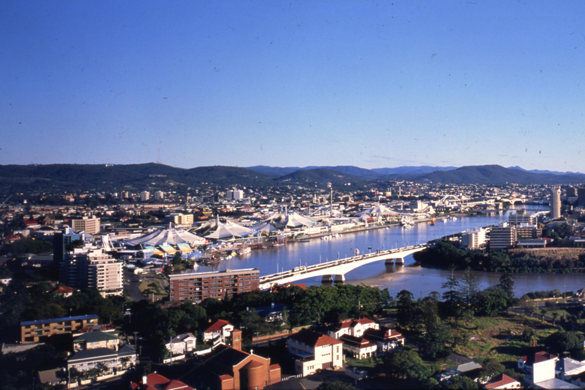
I came to know Henry through Keith Smith and found him an interesting fellow, one prepared to give an idea of promise a go – commercially. Henry and his wife Margaret had a large city based stationary store in George Street that had ventured into laminating maps and other paper products such as posters and similar. He had invested in a large format laminating machine and had started buying maps from the department at counter price of a few dollars, laminating them and on-selling for a few more dollars. Maybe it was a good little earner and there was nothing wrong with that. I am not sure how Keith came to know Henry, he has told me but the detail has slipped from my mind and in any case it is immaterial to my account. It became apparent that the EXPO site where an expected million or more visitors would pass through its gate during its duration in 1978 would need a map retailer and who better than Henry Bogheim. Henry, a very modest and cautious man, became persuaded on the understanding that the Department would bear all costs and absorb any losses. And so it happened – EXPO had its map outlet. Of course, it would have been of little interest had the maps it retailed were standard 1:100,000 topographical maps – who would want them; in any case they were not ‘Sunmaps’ but maps created and produced by other government agencies – National Mapping and Army. But we did have our range of tourist oriented maps – the ‘Amazing maps’ Queensland, North Queensland, etcetera, etcetera and it was up to Henry to market whatever other maps he chose. Leaping ahead to the EXPO year, 1988, Henry’s enterprise (and perhaps Keith Smith’s or at least with Keith’s facilitation) the EXPO map outlet was a modest commercial success, sufficient to encourage Henry to continue marketing maps in Brisbane for many years after EXPO. Henry claimed later to stock maps of every country in the world and every major city in the world. Many years later, prior to visiting my daughter Liz in Japan, I bought an excellent map of Japan from Hema – no problem!
A postscript – In 2004 Wendy and I went on an extensive tour by bus of UK, principally Scotland and the Orkney Islands (by ferry from ‘John O’Groats) and on our return from the Orkneys who should be on the ferry but Henry Bogheim and his wife Margaret. Sitting on the open deck I heard a voice call my name – it was Henry. We talked of old times – we were both retired. How remarkable! Of all the people in the world, so far from home, what were the chances of such a meeting?
Sunmap Centre
I have already made a number of references to ‘Sunmap’ and the Sunmap Centre at Woolloongabba on the corner of Vulture Street and Main Street (Ipswich Road). Further explanation is needed. The Department of Mapping and Surveying which I had joined in 1971 leaving the Army behind me was dispersed throughout the city in four locations – Estates House in Creek Street, Watkins Place in Edward Street, the Government Offices corner Adelaide Street and Edward Street and the Land Administration Building in George Street. I have previously described these locations in earlier writing. There had been a broad policy to disperse government offices away from the city central although I must say that Woolloongabba was a surprise location. Nevertheless, there was a substantial area of land there that had been railway land – marshalling yard I think – long gone.
The decision to give the Department a home of its own was purely political although what motivated the decision is uncertain. Bill Lickiss, a one-time Queensland politician, in fact the first appointed Minister responsible for the created Department in about 1973/4 had in his pre-politic days been a public servant draughtsman in the old Survey Office of the Lands Department. Bill Lickiss was a genuine sort of fellow. He made his mark in the public eye by leaping into the water during the 1974 Brisbane flood to rescue a young soldier amongst fallen power lines, an act which earned him the Queen’s Gallantry Medal. One might construe that that act alone may have raised his public profile and influence in the Bjelke-Petersen government to allow him push for the creation of the separate Department of Mapping and Surveying. Regardless, it happened and Minister Lickiss was rightfully proud of his new department.
Ministers following Bill Lickiss pursued the idea of a stand-alone Department and I first heard mention of it was from Minister Greenwood when he visited the Army Survey Regiment in 1970 with the Surveyor General for Queensland, Mr Mack Serisier. Why so? I am not sure. But steps were underway soon after I joined the Department in 1981. But little was said at that time. Architectural planning was underway one assumes and work on the site started in 1984. My diary records that I moved in on 27 March 87 to an office on the same level as the Surveyor General and Keith Smith – a modest office that overlooked the Woolloongabba Cricket Ground.
1987 – the year unfolds
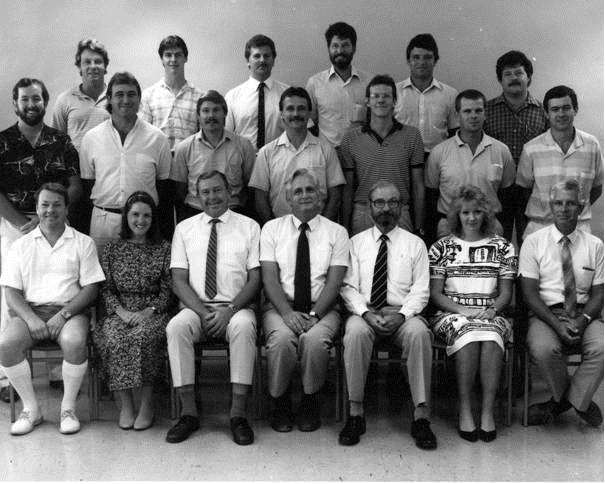
Skimming through my work diary nothing of great significance comes to light. Perhaps that is inevitably the life of a public servant, certainly when looked back on decades later. Nevertheless, I can run through the remainder of the year in itemised points and see whether that might lead to inspiration...
- 13 March – Rotary District annual general meeting at Kingaroy. My diary is silent in detail and my memory serves me only to reflect that it was a pleasant weekend. It was also the weekend of the state election when a forever contentious politician Pauline Hansen was elected to State parliament.
- 25 April – ANZAC Day I marched in the city, I think with the Vietnam Veterans. For me it was a disappointing occasion and the march was little short of shambles. Probably there were little more than fifty marchers – at that time Vietnam veterans had little acceptance by the Australian public.
- 15 May – the annual dinner of the Institute of Cartographers at ‘Early Street’, a created historical village at Norman Park in south Brisbane in the grounds of ‘Eulalia’ an original historical Brisbane home. The proprietor of ‘Early Street’ was an entrepreneurial gentleman, Lloyd Hancock, of the Hancock family, the original owners of ‘Eulalia’. Somehow, Lloyd Hancock became involved with the Department, perhaps in funding or promoting a tourist map of Brisbane historical locations. At the time I was the president of the Institute.19
- 29 June – 1 July the Australian Map Circle conference at St John’s College, Queensland University. Again I undertook the task of organising the venue and the programme.
- 15 July – The Department or more specifically our Surveyor General undertook to promote the computer generated historical library of Great Britain celebrating the 900th anniversary of the Doomsday Book. Perhaps he envisaged the Department undertaking a similar project for Queensland; if so, it didn’t eventuate. Nevertheless, it was a brilliant concept and I landed the job of arranging a public viewing by interested people. In 1987 we had only a promotional video of the of Doomsday Project, sufficient for the Surveyor General to want the highly expensive 12 inch discs. It wasn’t until the following year that they arrived, and a public viewing was arranged in the Sunmap theatrette. This finally took place in the evening of 25 March 1988. The attendance was sparse, and it was fortunate that son Christopher had accompanied me – his interest in the Doomsday Project was intense. Whoever was operating the projector device was less than successful in getting it to project to the point of giving up. How ignominious that would have been? Christopher asked if he could have a go and in desperation this was conceded. Christopher had it on the screen in just a few minutes. Needless to say, I was very proud of him.
- 21 July – The Department was visited by the Governor of Queensland, Sir Walter Campbell and Lady Campbell. Oddly enough Kevin Davies seemed to wilt on such occasions, almost to the point of embarrassment. He never quite knew what to say to an august visitor. On this occasion I was called in to act as the Governor’s guide showing Sir Walter and his lady around. They were easy company and I recall most of the questions came from Lady Campbell. Morning tea was provided in the Surveyor General’s office with senior staff in attendance.
- 11-12 August – Visit to Canberra, principally for a meeting at the National Library of agencies involved in spatial data acquisition. Filling in time before the start of the meeting I visited their comprehensive map collection. I have no recollection of the detail of the meeting, but I do recall that it was chaired by an elderly gentleman in a competent and efficient manner – I was very impressed. A nice lunch was served in the meeting venue after which we returned to the meeting agenda finally rising at 3.00pm. Was anything achieved at the meeting? Perhaps – the minutes of the meeting were remarkably comprehensive. I even got a mention for some small contribution I made – just what, I do not recall. I took advantage of my time in Canberra to visit old friends and colleagues; after all, why not! On the 11th (Tuesday) I visited several colleagues in the Division of National Mapping at Belconnen starting with Con Veenstra, the Director and then Ian Miller, Murray de Plater, Colin Fuller, Jim Malone and finally Volker Zimmerman. I guess they were social visits, not especially work oriented; simply keeping in touch. I stayed overnight with old friends John and Mary Van de Graaff (John was my groomsman at Wendy’s and my wedding). Filling in time on Wednesday morning before flying back to Brisbane I called on the Directorate of Survey (Army), my old masters; Alex Laing (recently appointed Director, John Winzar and a special old Corps colleague, Warrant Officer Jim Booton. Flying back to Brisbane in the early evening by sheer coincidence I found myself seated next to Don Gillies, a past army staff college colleague. Don was working for one of the defence security agencies and could say little about his job.
My career
My appointment to the Queensland Public Service on leaving the army in 1981 had been with the expectation of being appointed Director of the Division of Mapping in the then Department of Mapping and Surveying. The unexpected sudden retirement of the Surveyor General Mr Mack Serisier in 1982 to be replaced by Mr Kevin Davies, and the delayed retirement of the Director Division of Mapping Mr Keith Waller changed my immediate career prospect significantly resulting in Mr Keith Smith being awarded the directorship and myself the deputy directorship, an appointment I was to hold in effect until 1987. For me it was a disappointing outcome although in a sense not unexpected. This was the state public service, not the army and in 1987 there could be little certainty regarding career prospects. In all reality I had no case against Keith Smith and we became quite good friends.
Then on the 23 September 1987 resulting from an external review, new appointments were promulgated and mine was to be of all things – chief or maybe ‘senior’ photogrammetrist so replacing the present incumbent Mr Hans Nuremburg. I had a passing knowledge of photogrammetry but in no sense was I a photogrammetrist. It was a ridiculous situation and not a little disappointing. So, who was to get my job or perhaps my previous appointment? The lucky fellow was Trevor Crease, an ‘up and coming’ who some time before I had appointed ‘project manager’ of ‘client mapping’. I formally protested at my own re-assignment and the general outcome was nothing much changed. Hans remained Chief Photogrammetrist, I continued in the same role with the newly dreamt up title ‘Senior Advisor Topographic Data’. If only by default I retained my original role of ‘manager client mapping’. I think I had a new office or at least a different one. I should add, there was no resulting loss of salary – to anyone! My diary notes that on the 27 October I moved to a new office on the second floor, but I have no recollection of that!
Family
Christopher’s interest in computers generally and in particular our Amiga 1000 directed us to the recently formed ‘Amiga User’s Group’. He and I attended its monthly meetings at various locations although finally settling on the Bardon Technology Centre. Christopher got a fair bit from attendance and developed quickly into one of the top junior members spending some time addressing other attendees’ problems.
On the 9th October Christopher underwent an initial interview for entry to Nudgee College with Brother O’Connor and again on Sunday morning 11th October. Robert was already a second-year student so it was a ‘given’ that Christopher would also attend. I don’t recall the purpose of these two occasions but it was part of the induction process. Christopher was to start in 1988.
Robert continued to pursue his sporting interests at Nudgee, basketball and cricket. At a cricket match at Indooroopilly early in the year Robert top scored with 37 runs, an unusually high score in a junior level match. Rob continued with cricket throughout his years at Nudgee although the season always to me seemed short, a couple of matches before the long Christmas break and then maybe half a dozen or so after. There was only one game at Nudgee and that was Rugby which was not Robert’s game although Christopher played intermittently at one of the lower levels. Basketball was a new venture at Nudgee and it took a few years to reach a competitive level. Robert took to basketball and did well. The team became premiers the year after Robert left, runner’s up in his final year. My diary notes that Robert had a basketball weekend at Southport on August 18.
1987 saw Sarah graduate as a registered nurse having passed her hospital examinations with distinction. She continued into midwifery training at the Brisbane Royal Women’s Hospital.
Nudgee Art and Craft
An important fund raiser for Nudgee College was the annual Art and Craft Show. Held over the first weekend of August it received a great deal of interest not only from the families of Nudgee but also from the art and craft community with many of Brisbane’s art community choosing to exhibit there. The festival annually raised in excess of \$20,000 give or take. It was also a significant social occasion in the life of Nudgee. A separate section exhibited student’s works; not a great seller but attracted attention from doting parents.
Wendy had a passion for art and volunteered to be a seller. She did very well and her sales contributed greatly to the total ‘take‘ for the evening. Many sales, at least the more significant ones, were not finalised until later in the weekend as apparently is the custom at such events. To help loosen the purse strings champaign cocktails (cheap bubbly and brandy) flowed throughout the evening. I had to confess, Nudgee College knew how to fund raise. The Art and Craft show ran for all the years Rob and Chris were at the College and I think Wendy maintained her interest over that time.
The Philippines Job
I am not sure or cannot remember quite how the Department became involved in this project. It was to fly aerial photography for mapping purposes over the island of Mindanao in the Philippines. Where did the money come from for such an undertaking? Here, of course! Was it Federal funding or State funding? I am not sure; probably Federal but via the State somehow since the State, namely the Department of Geographic Information undertook the management role. Mr John Van As was appointed project manager on behalf of the Queensland government and for periods of time was based in-situ in the Philippines. My diary records that John came to my office on the 30th November to discuss the project. He was philosophical about it and saw little hope of the project succeeding – it didn’t! The half million dollars allocated to the project as foreign aid gradually dissipated with little achieved, perhaps none at all, certainly no photography of mapping value. Certainly no fault of John. I recall a year or so later receiving a letter from the Philippines Government, or an instrument thereof, thanking the Queensland Government for their generous support and claiming great achievement as a result.
1987 came to an end with the usual pre-Christmas celebrations both at home and at work, the latter I tried to avoid. As well as those there were others sponsored by our professional associations; Institution of Surveyors, Institute of Cartographers, Association of Consulting Surveyors (which liked to have a few from their mentoring organisation attend) and then my ex-Army associations. Did I attend all of these? Probably not. Many were just the same people in different locations under different flags!
My diary notes that on Sunday 13th December I attended the Amiga User’s Group at the Bardon Professional Development Centre with Christopher, leaving Chris there to learn more about our computer and calling on cousin Mollie Skitch who lived not far away. Mollie provided a pleasant afternoon tea.
My diary also notes that I finished work for the year on 24 Dec attending for a short while the Surveyor General’s Christmas drinks at the Johnsonian Club on Upper Edward Street, staying for a shot while then home, bringing my 1987 working year to a close.
1988
1988 was to be the year of EXPO, that is an exposition, or the nations of the world held on the southern bank of the Brisbane River directly opposite the city centre, the UBD. Has there ever been a world EXPO in such a prominent and central location – maybe not.
If EXPO was to dominate our activities throughout 1988 our life at Tanglin continued unabated although our garden was observed to have suffered a little. Well, maybe, however, I have never professed to be an avid gardener. So, what did our children make of the year?
Liz had completed five years at Boondall state school with her final year six to go. She had been a great participant over those years both within the school but also externally, especially netball as a ‘centre’ playing with her Boondall school friends Nicole Scriven and Kylie Curtis. Liz carried off the ‘best and fairest’ award in 1988 and her name remains on the club’s honour board in their supporting club house at Nudgee sports oval. We had Liz booked to commence her first year of high school at S Margaret’s Anglican School at Clayfield in1989. However, S Margarets contacted Wendy and me and told us that it would be highly desirable for our daughter to complete he final year of ‘junior’ school at S Margarets before entering high school. We could see the point of this and with some reluctance we agreed – reluctance, because Liz was to be appointed junior school captain for her final year at Boondall had she remained. Was Liz disappointed? If so perhaps the excitement of starting at S Margarets offset that. Financially we could just manage it. Robert still had a year to complete at Nudgee and Chris three years so it was a little tight. Liz fronted up and was outfitted in S Margarets unique uniform and other paraphernalia and started her final six years of schooling. More to say about that later.
Robert had well and truly settled into the routine of Nudgee college and had made his own friends. Robert was no scholar but always did his best and was well regarded, especially for his sporting prowess. Nudgee was a ‘rugger’ school and in their annual competition against the other Catholic boys college, St Josephs College Gregory Terrace they remained in ascendancy year after year. Robert was not a rugby player, had little interest in the game but participated in the emerging basketball competition with some distinction .Nudgee did not enter the GPS basketball competition until Robert’s second last year and were ‘runners up’ that year to be premiers the year after Robert left.
Chris was not a sportsman but at Nudgee found it necessary to participate in something. I think that might have been rugby, trying to be non-participatory as possible. More on Chris and Nudgee later.
The ‘Mirani’ project
Referring again to my work diary for 1988 I note that I returned to work on the 20th January at the now well established Sunmap Centre, Woolloongabba. A frequent entry in my work diary is that of Mirani, without any explanation or detail. Mirani itself is a small town approximately 50 kilometres inland from Mackay. It was mapping for a major coal mining project – mining in the sense of a massive open cut. The mapping was to be in the form of ‘orthophoto maps’ at a scale of 1:5,000 with the ortho photo projection of the aerial photography being done on the Department’s very expensive OPM orthophoto projector, the only one in Queensland. What does that mean? Not for me to say here even if I can remember! In effect it projects the aerial photo from a perspective projection to an orthogonal plan projection at an exact pre-determined scale. For the Mirani project the photography had to be flown and ground survey control established, that is, identified points of photo detail coordinated in exact latitude and longitude (eastings and northings). In 1986/87 This could only be done by laborious and time-consuming ground survey.
Apart from the orthophoto projection phase all other work – ground survey, air photography – was to be undertaken externally by private survey firms. The overall job was put out to tender and the firm Keilor, Fox, McGhie was the successful tenderer. A principal of the firm Mr Ian Keilor was appointed project manager and he and I had numerous meetings through the year. I grew to like Ian a good deal. He was certainly a tryer and the task proved to be more difficult than might have been expected, perhaps due to the firm’s inexperience. I recall a good deal of trouble with the clarity of the flown aerial photography, partly because of poor processing. The project finally came to an end in September and my diary notes a two hour session mulling over accounts. Was there a problem – I don’t recall.
The year progresses
Even after a careful scrutiny of my work diary for 1988 I find little of significance worthy of comment. It was after all the year of EXPO and while the Department had a number of commitments to the Queensland pavilions, especially science and technology, I was not involved personally, viewing it all from the distance, sometimes with a little amusement.
I encouraged the Surveyor General to maintain an army interest in the 1st Field Survey Squadron at Enoggera although I could never persuade him to visit the Squadron as his predecessor did but my diary notes that on 21 March the Squadron OC Major Steve Cooper visited for morning tea and a tour of the operational areas. Kevin was polite and spent half an hour with him and I think Cooper did all the talking as he was inclined to do. The Squadron was quite heavily committed to field operations. Steve Cooper was never a favourite of mine and I vaguely wondered how he had achieved his ‘majority’ and been appointed OC of a field survey squadron.
EXPO
EXPO was opened on Saturday 30 April by the Premier Mike Ahern. The Skitch family was at Caloundra (re-painting our unit – at least I was) and we watched the event on TV. EXPO was to become tremendously popular with Brisbane people and certainly, the Skitch family, not initially but by July/August we were constant attenders at weekends, especially Christopher but also Wendy and me. My diary records eleven separate visits, some all day at weekends and others in the late afternoon and early evening. Christopher probably went more times that that either on his own or with a mate; Robert not so keen nor Sarah. Liz of course could only attend with either mum and/or dad.
The photo on my season ticket showed me with a substantial beard which I had shaved off some time in July to attend an army function in uniform. Thereafter fronting up at any of the entrance gates to EXPO I received an extra scrutiny by security, requiring an explanation that I had shaved my beard off, at least the first few times after which it didn’t seem to matter.
Did we manage to visit all hundred plus pavilions? Probably not although Christopher may have. I well remember the final closing night with EXPO chairman Sir Lew Edwards exhorting the masses of people attending – ‘its over, there is no more – go home!’ We went home – it really was over.
Moscow State Circus
I have always had a passion for circuses and I well remember as a small boy attending with my father Wirth’s Circus when it came to Collie on its famous circus train. Circuses in those days featured lots of animals – elephants, tigers, horses, even snakes like pythons and they all performed. In effect they were a travelling zoo. Of course, they were all kept in cages rather too small but not the elephants. They were kept hobbled in a paddock. Wirths were famous for its elephants; there were many; twenty, thirty, maybe more. Not only did they perform they also were used in erecting Wirth’s huge circus tent. Such was the nature of circuses in the 1940’s. But wait! This was during World War II, perhaps only in the early years, 1940, 41 and perhaps immediate pre-war – 1939. But the memory of Wirths coming to Collie is still clear in my mind. In the eastern states the famous circus name was Bullen Bros and it persisted for many years, may even have combined with Wirths some years after the War The use of performing animals became increasingly unacceptable (animal rights organisations) during the 1950s and they disappeared from circuses, many finishing up in animal parks, one I recall west of Melbourne and another near Dubbo in New South Wales.
So much for that! What does it have to do with my story of life in the public service? In the !960s 1970 – 80s an Australian entrepreneur, Michael Edgely brought the Moscow State Circus to Australia on three or four occasions. The first I recall was in 1964 when Wendy and I were living in our army married quarter on the corner of Lloyd and Wardell Streets, Enoggera. As it happened we were opposite an elderly couple Mort Rose and his wife (to us – Mr and Mrs Rose). Their son in-law, married to the Rose’s daughter was Len Rudd, a Brisbane City Councillor and the only member of the Liberal Party opposition to the Clem Jones Labor Party council. (yet another story). To promote the visit of the Moscow Circus to Brisbane and no doubt to curry favour, Edgely had given a large block of lounge seats in the very best position within the huge circus tent to the councillors. For some reason the Rudds were unable to attend and neither were the Roses (no interest I think) and Wendy and I were offered the seats – very expensive seats! Of course we attended and what a show it was – unbelievable acts of strength and circus skill – but no animals other than performing small dogs.
So, what has given rise to this account of circus attendance? My diary records that on Saturday 30th January I took our four children to the Moscow State Circus. I doubt that we were in lounge seats like the first time twenty years before; this time on hard plank seating at a price I could just afford.
Items worthy of a ‘dot point’
- 26/27 March – Attended the Rotary District Conference at Caloundra. At least one in two district conferences were held at Caloundra which made it easy for Wendy and me to attend since with our Pumicestone Chase unit we had no accommodation expenses. Rotary District Conferences were not exactly a highlight of our life but were pleasant enough and by then we knew many Rotarians. Rotarians by their very nature are politically conservative and only a few are not, however, generally they keep that to themselves. Did I enjoy Rotary? Sometimes I wondered but I kept with it for quite a few years – until 2013 during which time I was club president twice and served on district committees. If I keep up this writing I will no doubt make further comment on Rotary.
- Edna – My elderly cousin: On the 30th of March Wendy and I attended Edna’s 70th birthday at her daughter Sue and son-in-law Brian’s home. Edna was sixteen years older than me and I would say that there are few for whom I had a greater regard – probably not any. Her husband John had died in 1968 and Edna battled to raise her three children, Warwick, Sue and Greg. Edna returned to nursing and with her somewhat meagre salary supplemented by a war-widow’s pension managed to afford private school for her three children. Maybe I will say more about that later – indeed there is much to say.
- Movies – Neither Wendy nor I are great attenders to movies and probably there are only half a dozen movies that linger in my mind. One of those is Empire of the Sun. It tells the story of the author’s (J.G. Ballard) young years spent in a Japanese internment camp in China during World War 2, No doubt fictionalised to a great extent but nevertheless convincingly real and beautifully presented. The movie was directed by Stephen Spielberg. Wendy and I saw an early screening of the movie on the 4th April.
- 7 May – With Grace Warburton we attended the Opera ‘Aida’ in the very new Cultural Centre’s Lyric Theatre. Liz also accompanied us. It was a magnificent performance; in fact, any performance of Verdi’s opera Aida would need to be magnificent to do it justice. The music alone would make it so.
- 10 May – Chris remained a dedicated Amiga Commodore 1000 user leaving both Wendy and me well behind. At least Wendy had some keyboard skills: I had none. The ‘Commodore User Group’ had taken to meeting at the Bardon Professional Development Centre at night, once a month and I had misgivings about driving there from Tanglin, a long and complicated route. On one occasion I did so in a veritable rain storm. But for Chris it was the ‘big event’ for the month and we had to go. Not only did he learn a lot he also taught a lot.
- 28-29 May was the occasion of the Nudgee College Art and Craft show. It was a fund-raising event over two days – Friday evening to Sunday. The big event was Friday evening when many sales were made. Well known local artists chose to exhibit there. Champaign cocktails were offered throughout the night so helping to loosen the purse strings and encourage sales. Wendy became a seller and had considerable success. Of course, she had to do her homework and this she did assiduously. I was astonished at her success. The art show would raise somewhere between two and three thousand dollars.
- 31 May. My diary records that this was the formal opening of the ‘Sunmap Centre’ at Woolloongabba, by whom? My diary doesn’t record. Most likely by the Premier Mike Ahearn. We had been in occupation for some months so it wasn’t exactly a novel event. Why Woolloongabba you may ask? Well, that large area of vacant government land had been a railway marshalling yard which had been re-located somewhere on the southern outskirts of Brisbane. Sunmap Centre took only a small chunk of the available land at the corner of Vulture and Main Streets. A much larger chunk was taken over by the Government printer moving from very old and historical premises in the government precinct in George Street. Despite an initial intention to demolish the old site it remains today as a technology museum and, fronting William Street, the Public Service Club.
> At the time of the opening, maybe a few days before disaster struck. The surrounding gardens had been covered in pine bark chips – quite a thick layer. But the night before the first projected date of opening we had a heavy rain storm and much of that bark floated down into the lower levels of the Centre – the basement level, blocking the drains and flooding the place. It took some time, several days to restore the basement dry it out, remove the bark and prevent it from happening ever again.
- 2 June: - Dr John Morgan: I had come to know Dr John Morgan as a result of planning and holding the bi-annual conference of the Australian Map Circle at St Johns College the previous year – 1987. John was the Principal of the college, an Anglican priest and held a Doctorate of Theology. University colleges are in themselves not primary centres of learning, maybe theological studies but more on-campus accommodation for students. Anyhow, having got to know Dr Morgan quite well he encouraged me to attend a lecture by some international ethicist. It was an evening event and for me, and I think much of the audience it was pretty boring stuff. Anyhow, at question time I asked a question resulting from a Time Magazine cover – Do you agree that ‘greed is good’. This was something of a topic of the time – hence it being a lead article in Time magazine. At least it was topical, and the meeting extended another half hour. I can’t recall the outcome but afterwards Dr Morgan congratulated me on the question. My contact with John Morgan continued for a year or two and my diary tells me that he was guest speaker at my Rotary Club on 26 October. His address was along the lines of Rotary and Ethics – the ‘Four-Way Test’. If the subject sounds a little dry, John was nevertheless an entertaining speaker.
- 9 June was the launch of the Department’s first significant publication ‘Discovering Coastal Queensland’. It had a substantial amount of map content very well executed. It was EXPO time and it sold well. I still have a copy.
- 16 June – I attended the funeral of our accountant Ken Campbell. Why should I comment on that singular event? Well, soon after we moved to Brisbane in 1981 Wendy felt the time had come to have an accountant undertake our tax returns – reflecting perhaps that since leaving the army our financial life was becoming increasingly complicated. How did we come to know of Kenneth Campbell and associates, an inner-city accountant in a salubrious office in a high-rise building (Watkins Place), the lower part of which was occupied by the upper strata of my own department -Mapping and Surveying? That was coincidental – pure chance! Ken Campbell had been suggested to Wendy by a young lady in the church we attended (St Johns at Clayfield), Leanne O’Shea (her subsequent married name – I can’t remember her maiden name). I duly arranged an appointment with Ken Campbell; I think I may have been working at the time in the same building; or perhaps in Estates House only a block away. On entering Ken’s office, I immediately observed that he was a Rotarian and not only that he was the District Governor of Rotary. Wow! That is an exalted position. And I a simple common Rotarian holding no particular office in my small suburban Rotary Club! But Ken was a very pleasant and friendly fellow and was quite happy to handle our modest taxation needs – no doubt allocated to one of his junior staff. He made it clear that his role was not to minimise our tax commitment through subterfuge – that was not the business of his firm and he had no time for such practice. At one time he commented ‘the rich people of Brisbane paid no tax at all’. This was the era of massive tax frauds and evasion the ‘Dry Sloschkin’ and the ‘Bottom of the Harbour’ schemes. Ken Campbell’s firm has handled our tax ever since, some thirty odd years.
- 9 August – The Bradfield Scheme: This was an idea that would never go away at least as far as the Queensland Government was concerned resulting in a great deal of government time and effort by relevant departments being expended – many would say wasted. Dr John Bradfield was the design engineer for the Sydney Harbour Bridge, or at least had a significant role in its design. Also, the Story Bridge in Brisbane for which he was the design engineer. Hence, he had a reputation that could hardly be questioned. He believed as did many others that many of the fast flowing northern coastal rivers of Queensland could be dammed in the upper elevated reaches of the Great Dividing Range and diverted to flow into the inland rivers so irrigating the relatively dry inland pastures. It was a myth that many Queensland politicians clung to, often directing substantial amounts of money to prove it possible. A great proponent of the concept was the long serving conservative Premier, Joh Bjelke Petersen who would not let the idea die. My diary notes that a terrain model (a mathematical concept – not a plaster cast model) was being beefed around the Department yet again. On this date I attended a meeting to listen to yet another proponent of the scheme – a pastoralist I think – asking why the government had let the notion die yet again. I do not recall the outcome other than to say the Bradfield Scheme is now thoroughly dead and buried.
- 15 August: My diary notes that I had lunch with Surveyor General Kevin Davies, Keith Smith and one or two Queensland entrepreneurs, in the EXPO VIP lounge and restaurant. It continued to surprise me that Kevin Davies was inclined to include me on such occasions despite my slide a peg or two on the hierarchical ladder. Often to my mild embarrassment he would introduce me as Colonel Skitch as if I was some sort of prize. Nevertheless, probably not. K.J. Davies was a complex person – never too sure quite where he stood. My diary notes that the lunch didn’t rise till 3.00pm – a traditional ‘long lunch’.
- 17 August – People’s Day (public holiday) at the Brisbane Exhibition known to Brisbanites as the ‘Ekka’ and in other States as the Royal Show. Despite EXPO, the Ekka still attracted a large and loyal crowd, especially country people. I believe we went we always did, especially me with Chris and Liz. They seemed to enjoy it.
- 20 August – an opportunity to make mention of Michael Volk because this was the day he graduated into the Army Reserve as a lieutenant. It was a notable event for which I shaved off my quite luxuriant beard and wore my uniform. In the evening there was the traditional graduation ball which Sarah of course attended and at the appropriate moment affixed Michael two ‘pips’ to his shoulder epaulets. Michael chose entry to Armoured Corps and with that the Queensland Mounted Infantry (QMI), a very senior and traditional Queensland formation. Of course, they were not mounted on horses but in tanks and Armoured Personnel Carriers (APCs). Michael’s military career lasted three or four years and ended when he had a ‘bust up’ with a senior officer who chose to denigrate the Queensland Police Force (later Service).
- 22 – 26 August – I attended the Institution of Cartographers conference in Sydney. The conference was combined with an International Geographic Conference with many overseas attendees. As conferences went it was quite unique being conducted at the historic Sydney University. We occupied a block of student accommodation which was very spartan – that means uncomfortable! But there were highlights – a night cruise and dinner on Sydney Harbour where I met and enjoyed the company of an American professor and his very intelligent wife. Another highlight was the map exhibition – very extensive and included a variety of maps from the then (so-called) Red China, reflecting aspects of China through past dynasties.
- 24 September – an unexpected visit by David and Joan Tredennick, mostly motivated by Joan’s nursing friendship with Wendy more than mine with David though I knew David quite well from army days. David was a pharmacist in the Medical Corps and I came to know him as one of the young blokes (lieutenants) in the Victoria Barracks officer’s mess. David was a very pleasant fellow but something of a ‘fish out of water’ in the army. He was posted to Vietnam at the ALSG Vung Tau and fell apart in that stressful situation – returned to Australia and took discharge. At the time of his and Joan’s visit he was running a practice at Wollongong south of Sydney.
- 7 October – mid afternoon I had a call from Defence Security! What! Yes, Defence Security. It went something like this……’Lieutenant Colonel - are you alone?’ Yes, I am in an office by myself. We would like to ask you a number of questions about your past military service. Are you prepared to respond to these? My reply ‘What about?’ Reponse…’Cannot say at this moment. Hang up and we will phone back on a secure line’. I did so – wondering ‘what on earth? After about three minutes my desk phone rang again – slightly different ring tone; at least I thought so. The voice (a different one) asked or informed….You previously served closely with Lieutenant Colonel Donald George Swiney can you confirm that? I replied Yes, for about two years when I was Commanding Officer of the Army Survey Regiment. The then Major Swiney was my second in command. (2IC) I was then advised that Lieutenant Colonel Swiney is being considered for a senior appointment. How well did you personally know Major Swiney? And then followed a number of questions, some very personal. The call lasted about half an hour. It finished with the warning that I was not under any circumstance to tell Lieutenant Colonel Swiney or any other person about this call. The call to all intents and purposes has never happened. To divulge the contents of this call would be in contravention of the Official Secrets Act and severe penalties could apply. Thank you for your cooperation – Goodbye! The line went dead after a series of pips. I have never divulged the contents of the call to anyone; not even Wendy.
- 20 November: Liz participated in an ‘end of year’ ballet choreography competition and came second in her interpretation of modern ballet – a Frankie & Johnny theme. Miss Barbara the ballet mistress was not impressed – the award was given by an external balletomane. Miss Barbara taught classical ballet and didn’t think much of Liz’s venture into modern ballet.
- 21/22 November – My diary notes discussions with others on the proposal to produce a comprehensive atlas of Queensland. This sort of concept had developed in several other states and our Surveyor General was somewhat miffed that his department had not followed suit or better, led the way. Between this date and the end of the year several discussions followed, and an outline plan took shape. Keith Smith was certainly the principal protagonist and my own role was relatively minor – check reading drafts and similar. To maintain parity in terms of coverage and quality with those already published in two of the other States an early decision was made that it should not become some sort of state government propaganda product. Was ‘atlas’ the correct descriptor of the publication planned – and I think that at that early stage of planning it was uncertain exactly what form the publication would take – it was hard to think of a more apt term. Certainly it was to be something more that a simple compendium of maps – the traditional map atlas. The resulting publication to emerge some three years later was quite outstanding – a very beautiful and informative product.
1988, the EXPO year finally came to an end. Perhaps it was not a year of great accomplishment on the part of the Department of Mapping and Surveying becoming the Department of Geographic Information perhaps a more apt descriptor for the emerging age, nevertheless the scene was set for the decade to follow.
> 1989
The year
1989 was to be a year of major change to the political fortunes of Queensland that, looking back, had a somewhat dampening affect on the public service and with that, the Department of Geographic Information. Resulting from the outcome of the Fitzgerald Commission of Inquiry and the charges of corruption against three ministers and the Premier Sir Joh Bjelke Petersen the Queensland Public Service waited with baited breath on the outcome of the general election scheduled for the end of the year During the year Queensland had had no less than three Premiers, Mike Ahern, who despite appearing as a Mr Nice Guy reputably flew off the handle at the least upset, Russell Cooper, a steady fellow and probably quite competent and finally the Labor premier Wayne Goss. The election of a Labor Government was in no sense a certainty despite all that had happened. Queensland was by any measure a very politically conservative State. However, in December 1989 a Labor government was elected under Premier Wayne Goss who had been Opposition (‘Her Majesty’s Loyal’) leader for a number of years. Little happened between the outcome of the election and the end of the year – it was Christmas and New Year holiday time, even for the politicians. The trial of past premier Sir Joh Bjelke Petersen remained unresolved (jury failed to agree on a verdict) and Joh finally exiled himself to Tasmania. Much can be said about the fortunes of the Queensland Government at that time but that is not my story and it is well told by others more knowledgeable than I.
The family
Home life continued comfortably. Wendy remained as welfare officer at the Golden Years Centre at times rankling under manager Ted but generally getting on well enough with him. Perhaps it was a case of Wendy managing Ted rathe than the reverse. Sarah had completed her general nursing and midwifery at the Royal Brisbane Hospital and Women’s and after a taste of private hospital nursing at North West had moved to the Redcliffe General Hospital where she was to remain for many years. She became engaged to Michael Volk in April. Robert had completed his secondary schooling at Nudgee in November 1988 graduating with the best possible TE score Robert could get, sufficient to get him a government sponsored traineeship in hospitality at the Sheraton Hotel. More about Robert later. Christopher at Nudgee College was well liked and doing moderately well academically, albeit, after a less than successful first year. It was at about that time that he developed a close friendship with Len McCarthy that lasted to this day. Finally, Liz in her first year at S Margaret’s Anglican College was already making a name for herself!
Work
After a lengthy break at Caloundra I returned to work on the 23rd of January. The continuing routine of pointless unproductive meetings continued – it seemed to be what public servants did – making out that something was being achieved, but not much. My diary is peppered with three or four-letter acronyms and abbreviations which now have no meaning to me. There are frequent mentions of the Atlas project, but it had no form at that early stage. Kevin Davies had given a nod to it continuing but showed little on-going interest in its detail. Keith Smith had the running on it, but it was later in the year that it started to take some form with the appointment of David Wadley from the geography department of the University of Queensland as general editor and our own Bill King as cartographic editor. In fact, Bill did a lot more than that, designing and creating many of the tables, graphs and diagrams and creating the page by page colour separates. But that was much later in what was to become a two-year project. David Wadley was responsible for identifying and commissioning authors for the many sections of the atlas, mostly academics from the two universities. Each were given a specific number of words they were not to exceed and most exceeded that number to a significant extent – they were academics and resented any restriction. My own limited role was in checking and in many instances reducing the verbiage of many, perhaps most, of the academic drafts to fit the two-page format – a somewhat tedious task. We were determined to avoid the ‘atlas’ becoming an obvious government ‘sell Queensland product’. Such would become a commercial disaster – an expensive give-away.
Sailing
Chris and I did a good deal of sailing in our ’Mirror’ sailing dinghy. Why the name ‘Mirror’? It was an English design resulting from a competition conducted by the English newspaper ‘The Mirror’ to promote healthy outdoor activity, namely sailing. It caught on in Australia, especially in the southern States. It was of simple design, pram nosed, mainsail, jib and small spinnaker (I didn’t have one) and the sails were distinctive since they were red.
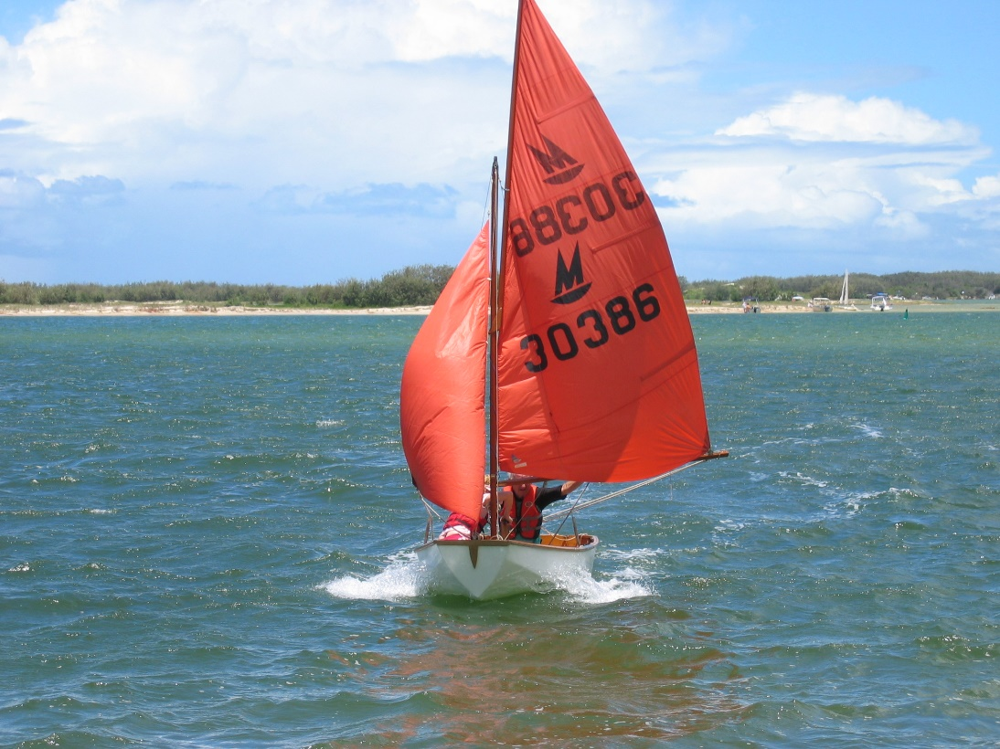
Our ‘Mirror’ – The Magic Miss with Liz and me on its final run at Caloundra before gifting it to the Humpybong Junior Sailing Club on the Redcliffe Peninsula in 2007.
I purchased Magic Miss from co-unit owner at Pumicestone Chase, Jeff Laughlin in 1988. Jeff had acquired it for his own children, about the same age as Chris and Liz but they showed little interest. Its price was \$700 and we purchased jointly with David Hebblethwaite, an ex-army and at that time,current public service colleague - \$350 each. David and his son Christopher lost interest in it, only sailed in it a couple of times. I finally bought his half share and in perusing through my 1989 diary we used it at several sailing locations – Caloundra of course, Sandgate and with the Nudgee College sailing club at Lake Samsonvale. It was ‘car-topable’, that is, with sturdy roof bars affixed it could be lifted up (two strong blokes) onto the car roof and securely strapped down. Chris and I were the ‘two strong blokes’. Nudgee College had an assortment of sailing dinghies, nothing very grand, probably all gifted to the College by families that had no further use for them. Wanting to be properly constituted as a School Club I was invited to be Club Commodore which I remained for the remainder of Christopher’s time at Nudgee. Perhaps I did little more than lend my name – for what it was worth! My diary records fifteen separate sailing days in 1989 – there may have been more.
Institution of Surveyors – Professional Practice Group - Ethics
In this reflection of my professional working life I have made frequent references to my professional institutions, the Institution of Surveyors (Australia); the Australian Institute of Cartographers (in which I served as president for two years), and the Australian Map Circle – a multi-disciplinary body open to anyone with an interest in maps and mapping. But it was in the former that I may have made a contribution of some relevance. Soon after leaving the army and joining the Queensland Department of Mapping and Surveying I was encouraged to accept nomination to the Divisional Committee of the Institution if Surveyors. I soon learned that the intent was not simply to occupy a seat at the monthly divisional committee meetings but to take on editorship of the quarterly Queensland Surveyors Bulletin. I continued in that role for three years and I have covered that commitment extensively earlier in this writing. However, in about 1988 I took a role in the Professional Practice Group which was mostly concerned with the ethical standard of the practising surveyor. Most professional bodies have one – architects, land planners and of course the medical profession. The surveyor’s profession had long had what they called a ‘code of conduct’ which in my mind left a good deal unsaid. The Surveyor’s Act also included a ‘code of conduct’ and a few related issues, very similar to that of the Institution. Within that august organisation I undertook the task of reviewing the Code of Conduct, partly because no one else had a mind to and also because I saw the inadequacies of the present code as expressed in the Institution’s own version and the Queensland Surveyor’s Act. Why did I do this? Perhaps I simply felt the need to contribute something. My association with prominent ethicist Dr John Morgan had raised my awareness of what constituted professional ethical practice and I did some reading on the subject.
To bring this reflection to a close I will copy in part a writing I did some years ago on the topic……
What it means to be a professional
Perhaps it is best to start by defining what we mean by the terms profession and professional and from this we can establish those qualities which are present in a truly professional person.
- What is a professional? The word is loosely applied to all sorts of situations; more usually in the sense of the opposite of being an amateur. For example, a professional sportsperson as opposed to an amateur sportsperson, meaning one who receives a monetary reward for their efforts as opposed to one who doesn’t. Even this suggests that the former has achieved a higher level of excellence that the latter.
- Lets start with the OED and the word profession. The second meaning given to profession, and the one we would probably ascribe to is ‘a vocation or calling; especially one that involves some branch of advanced learning or science’. It follows that, in the context of what we are presently addressing, a professional is a person who connects with that vocation.
<!-- --> - Clearly, there must be more to it than that. Simply having a university degree in a relevant discipline, a licence to practice in that discipline and acceptance into a body that represents those who are active in that vocation does not necessarily confer on one the title of ‘professional’. True, these are all important ingredients in becoming a professional; important, but not necessarily mandatory, but there is something else which even if one did not subscribe to the others, it alone might mark a true professional.
<!-- --> - That further essential quality is adherence to an ethical standard. Such a standard is institutionalised by most professional bodies as a ‘code of professional ethics’.
<!-- --> - So, what are ethics? Far-be-it for me to embark on a treatment of such a complex subject as that – I am in no sense an ethicist. There may well be some in this august establishment and I am sure that they would be worth listening to. I would claim only to be an ethical person who has given some thought to the subject. So, with that proviso in place, I would define ethics as reflecting the moral position that leads to a moral judgement in determining the right course of action in any given situation. A code of professional ethics applicable to a particular profession sets out those issues that are particularly relevant to that profession. The ones I am most familiar with are those that apply to the surveying profession. However, there is not a marked difference between these and ethical codes that apply to most if not all other professions.
<!-- --> - Before proceeding further, it is worth commenting on something that underlies all ethical codes and which has had application throughout the life of western civilisation. It is usually called the Golden Rule – do unto others as you would have them do unto you. Sound familiar? Think about it! In fact, ethics had its place in the civilised communities of pre-history. The laws of Moses and the ten commandments were, and are, a comprehensive ethical guide. Greek philosophers took ethics into the realm of positive actions – the aforesaid golden rule – moral virtues and the essential rightness of certain actions.
<!-- --> - Many of you – surveyors, planners, landscape architects, will be employed in the private sector and in time become senior partners and principals of your own firms. As such your will be business-persons as well as professionals. Perhaps a business person is a professional in any case – perhaps! As such you will be faced often with a moral dilemma where it may seem that a certain course of action which in your heart of hearts you know is ethically questionable but to take it would be financially rewarding. It is then up to you – there is no easy answer. However, loss of professional integrity in the longer term may be a far greater loss than the immediate loss of a financial opportunity.
<!-- --> - I shall speak now of the surveyors code of professional ethics as apply in the Queensland Division of the Institution of Surveyors, Australia. This is the one with which I am familiar, and it would be fairly consistent with those applying to both the Royal Australian Planning Institute and the Institute of Landscape Architects. The Surveyors Code of Professional Ethics comprises five Articles supported by 46 interpretive clauses. The five Articles are all-encompassing statements and the interpretive clauses show in very specific terms their application in actual practise. The five articles address (1) Professional Responsibility (2) Maintenance of the Profession (3) Development of the Profession (4) Business Practice (5) Conduct of Professional Offices. They read as follows:
<!-- --> - *Article 1 – Professional Responsibility* (12 interpretative clauses)
In the course of their professional life and in the exercise of their profession, surveyors shall accept an obligation of responsibility in relation to the community, the profession, their clients, their employers, employees and other surveyors.
> The first interpretive clause under this article emphasises the surveyor’s responsibility to the community in stating: the responsibility of surveyors to the community is first and foremost and transcends other responsibilities.
- *Article 2 – Maintenance of the Profession* (8 interpretive clauses)
In the course of their professional life and in the exercise of their profession, surveyors shall strive constantly to ensure the maintenance of the profession of surveying as an identifiable entity meriting the highest esteem of all sectors of business and the community.
- *Article 3 – Development of the Profession* (3 interpretive clauses)
In the course of their professional life and in the exercise of their profession, surveyors shall cooperate in raising the standard of their profession by continuing their own professional development and assisting and encouraging those under their direction to advance their knowledge and experience.
- *Article 4 – Business Practice* (18 interpretative clauses)
In the exercise of their profession surveyors shall maintain the highest standard of ethical business practice commensurate with the inherent honour, dignity and integrity of the profession of surveying.
- *Article 5 – Conduct of Professional Offices* (5 interpretive clauses)
In the exercise of their profession surveyors shall conduct their professional offices in a way which preserves the dignity of and reflects credit upon their profession.
Finally, it is acceptance of and adherence to your profession’s code of ethics which allows you to call yourself a professional. No profession has a God-given right to continue to exist. It exists only because the community recognises its contribution to society at large because that contribution meets a community need and the members of that profession practice their vocation responsibly, with commitment and integrity, not being self-serving. Lose the respect of the community and you lose the profession.
I no longer retain a copy of the ‘interpretative clauses’ but essentially they relate to the specific task a surveyor might be called upon to perform.
At the Institution Congress conducted at the Hobart Casino in April I was invited to address ‘off-session’ a group of surveyors – an optional activity. A surprising number turned up, maybe twenty to thirty in my allocated time slot mid afternoon (missing afternoon tea in fact) and my short address gave rise to a number of questions and comments. One that I recall was that the ‘code’ would be a recipe for a surveyor in private practice to go ‘broke’. Well, maybe; but his contention was not supported by others attending!
Other matters in 1989
- 3 Feb: My diary records ‘A final check of the ‘Strategic Plan’. This had been an on-going process throughout 1988 and probably before that. Did it lead to anything? I don’t think so. It is something government departments do, perhaps to justify their existence. The process of strategic planning involves numerous tedious meetings with no recognisable outcome. Did I make a contribution? I don’t recall. But it is part of being a ‘Public Servant’.
- 3 Feb, and many meetings thereafter throughout the year – The ‘Atlas Project’. I have previously spoken of this very worthwhile and expensive undertaking. Throughout the year I spent many hours checking drafts from some quite notable academics, reducing the verbiage and often correcting their English usage – grammar I mean! Perhaps that had the effect of improving my own. I relied a great deal on my volume of Roget’s Thesaurus from Staff College days and my slim volume of ‘Modern English Useage’.
- 15 Feb: My diary records yet another 1½ hour meeting on the Mirani Project. Did this meeting bring that private sector managed project to a successful conclusion? It seems likely since my diary has no subsequent mentions. There were lessons to be learnt – perhaps the obvious one was not to put management of such an unwieldy mapping project into private sector management without departmental overview. Nevertheless, I developed considerable respect for the project manager Ian Keilor from the firm Keilor, Fox, McGee. He was consistently open about the problems he was experiencing in contrast with another firm in similar circumstances who simply walked away from their responsibility. Enough said!
- 20 Feb: My diary makes mention of another embryonic possible initiative that failed to proceed. This was that of a ‘Digital Topographic Data Base’. Keeping in mind that the very concept of spatial data electronic databases in 1989 was an emerging science the thought of digitising free flowing line work such as mapping contours was, to say the least, imaginative. There was another way. That was to ‘raster’ scan the map sheet as one would digitise a photograph. We were contemplating a process that was yet to come – a ‘mission impossible’ at the time, especially given the very limited capacity of the department’s own ‘in-house’ computer facility. The Digital Cadastral Data Base on the other hand was very achievable. Comprising simple linework with bearings and distances although even this had to be achieved through the process of scan digitising accurately plotted survey plans, not by the entry of bearings and distances although that occurred on all newly created survey plans as a matter of course. Large amounts of information were stored on the Queensland Government’s comprehensive ‘main frame’ computer located somewhere, but in about 1990 it crashed badly and the Digital Cadastral Data Base could not be accessed for over twelve months.
- 1 Mar: The Philippines job. Whatever were we doing in the Philippines one may well ask. Surveyor General Kevin Davies, forever a ‘would-be’ internationalist somehow contracted the Department to fly a block of mapping photography on the main Philippines island of Mindanao. We had our ‘man in the Philippines’ (John Andrews) who had been a business partner of Kevin Davies before Kevin joined the public service. Jon Van-As was the ‘In-house’ contact and from time to time he would pop into my somewhat secluded office in the ‘Sunmap’ Centre to discuss progress or the lack of it. Air photography in the Philippines was undertaken by one of the international air photography companies (can’t remember which one; maybe Fairley’s). The apparent ‘project’ ran on for some months – the money ran out without a single strip of photography being achieved. The Department received a glowing letter from the relevant Filipino Department regretting that no results could be achieved but thanking us for our support. How much did all that cost? I do not recall, but it was a lot! Davies didn’t want to know about it.
- 1 Apr – A trip to Hobart for the Institution of Surveyors Congress: I have already discussed in detail the main reason for my attendance at the Congress (The ISA Ethical Practice initiative) and I was mildly surprised that the Department, or more specifically Surveyor General Kevin would agree to my attendance on that basis (that is, meeting the cost – air fares, accommodation and attendance). The week-long conference took place at the Wrest Point Casino south of the city and I pre-booked accommodation at the Salamanca Inn, also slightly south of the central city (which is not all that large). The Congress sessions were standard fare although I do recall one evening session discussing the increasingly topical issue of climate change and carbon di-oxide pollution, a significant component of which came from ‘farting cows’. Goodness me – a memory that has lasted thirty years! Perhaps the Hobart congress was one of the more social I ever attended (furthermore the last one I attended in my professional life) and there were quite a number of social events – from a picnic on Sunday at Bruny Island; a Monday church service at St David’s Cathedral, the annual Congress dinner at the Casino on Tuesday, a visit to the headquarters of the Australian Antarctic Division on Wednesday (also on Wednesday a small reunion for Survey Corps ex-members at a Hobart hotel); on Thursday my paper on surveying ethics and on Friday a visit to Tas Map, ably run by old Corps colleague John Catell and in the evening another less formal dinner at an interesting location at Salamanca. But for me there were other notable occurrences. At the Monday technical session in the audience were Corps colleagues Peter Frodsham (with whom I worked as a young sapper on New Ireland in 1956/57) and Brian Berkery, a close friend of New Ireland days but whom I had not seen since.
- 7 April – still in Hobart. On Friday I checked out of the Salamanca Inn, that night staying at Brian’s home – Brian and his erstwhile wife had parted company. Friday was another unforgettable day – I went sailing with a few others in one of the Tasmanian members 30-foot sloop. We sailed across Storm Bay to the outer headland and then back to the Endeavour Channel and south to Bruny Island returning to Salamanca in time for the evening function. Saturday morning Brian and I wandered through the Salamanca market – like nothing I had ever seen before – but under the shadow of a huge ugly grain silo which I believe has since been demolished. On the Saturday afternoon I visited with Brian, Wendy’s Aunt Marie and Uncle Bill Collins living in a very substantial old home on the foothill of Mount Wellington overlooking the city. I recall Aunt Marie being very concerned about the ‘hole in the ozone layer’ that was seen to have a very adverse effect on Tasmania. She wore a very large brimmed hat, and looked suspiciously at the sky whenever she ventured outside. But my Tasmanian week had come to an end and Brian drove me to the airport in the evening for a 10.00pm flight back to Brisbane. I recall having a feeling of odd dislocation at having left that historic city of Hobart and many past Corps friends – but my life was in Brisbane.
- 9 Apr – a notable date because Sarah and Michael Volk announced their engagement to be married. Did we have a party? I don’t recall, and my diary is silent. Probably not!
- 3 May – Andrew Leatham: It is time to make further mention of Andrew Leatham. I have previously told how our old friend and mentor Christina Ryan met and developed a friendship with Lieutenant Commander Andrew Leatham RN (page 44 or thereabouts) and this mention is a little sad. Andrew’s health deteriorated progressively through 1988 and 1989, suffering severely from dementure. He became incapable of looking after himself – could not respond in conversation – in fact lost his intellect. I am not aware of how he came to be admitted to a palliative care home in Clayfield – organised by one or two of St Marks parishioners no doubt, but there he was left in what in my judgment was an appalling place. It was ostensibly Uniting Church run; it was old, dingy, badly maintained, had that unmistakable smell of urine and boiled vegetables. I became (I am not sure how) an accredited visitor to Andrew and I soon realised that I was the only visitor he ever received other than perhaps Christina. For me it was a weekly or maybe fortnightly event on my way home after work – it was a visit I did not enjoy but maybe it gave Andrew some pleasure – it was hard to tell. He simply lay in a bed in a small room occupied by one other in similar condition – perhaps being exercised by the staff from time to time – I suspect not too frequently. On entering I would ask to visit Commander Leatham and the inept response I would be given was – ‘oh, do you mean Andy?’ I suspect he had never been called ‘Andy’ in all his life. It seemed to me he had been robbed of all his dignity which I knew he greatly valued. There was an enclosed grassed recreational area at the end of one corridor and visiting on one afternoon I saw elderly women out there naked or nearly so from the waist down – probably having wet themselves. Andrew finally died and perhaps that was a mercy. His funeral service took place at St Marks Anglican Church. Many parishioners attended as well as staff from Government House. But where were they during Andrews final months of life. The well attended ‘wake’ was at Christina’s home at 182 Bonney Avenue Clayfield. Christina was the only person who in any way cared for him. She had had some contact with his family in England or Scotland but to what extent I didn’t know. Something was arranged for the return of his ceremonial naval sword and maybe articles of his always immaculate uniform.
- 4-5 May – Annual Report: Annually all governments produced an annual report for the previous year. In past years I had been called upon to make some sort of a mapping contribution – which I did – but in 1989 I was given the task of producing – creating – the whole caboodle. It had become something of a competition between departments to produce the most informative, spectacular, colourful product –as judged by a panel from the Premiers office and my brief was that SG Davies wanted to win that accolade. We didn’t but I gave it my best shot. The judging was to take place near the end of the year at a function in the parliamentary annex (next to Parliament House). I think we got some sort of a prize – a special mention perhaps but I am not too sure. I recall one department produced a report with a hologram cover – goodness me! Did it win a prize? Maybe. Perhaps for the best cover. What a nonsense! That was the last of those events. In 1990 we had a Labor government and a greatly expanded department (from 37 departments to 18) and that sort of frivolous nonsense came to a crashing end.
- 12-13 May – Cedar Lake Search Conference – conducted by the Association of Consulting Surveyors. On page 20 I have described Cedar Lake in some detail and I won’t do that again here. Needless to say, it was a very pleasant place but this time I didn’t take the family. The 12/13 May was a Friday/Saturday and we all arrived mid-morning Friday, conferenced in the afternoon, attended a convivial dinner in the evening paid for by the Association members (not me or the Department), a further session after dinner (not well attended – the doyen of the Association had business to attend to at the Broadbeach Casino on the Gold Coast), and another session Saturday morning, departing for home in the afternoon. So, what was meant by the term Search Conference? I don’t think I was any the wiser after the final session than I was at the start. I recall the conference was managed and run by some sort of high powered consultancy organisation – at times we had to break up into sub-groups discuss a sub-topic – come to some sort of finding or conclusion and report back to the general session; very standard fare for those sorts of events. And that is about all I remember of the occasion. I arrived home mid-afternoon – and mowed the lawn!
- 19 May – Rotary District Ball at the City Hall. Whatever induced Nundah Rotary to organise and run a formal ball at the City Hall? I seem to recall that the main proponent was Gordon Faulkner and his wife, and I guess one would commend them for their commitment and industry. But ‘balls’ in1989 were not a popular concept and it was difficult enough to get club support let alone District support. Nevertheless, the ball took place. We all dressed for the occasion black tie for men and evening dress for the ladies. I think we broke even on the event, probably with a bit of help from the City Council.
- 5 June Conference at the Sheraton Hotel – ‘Living with the Greenhouse Effect! There was nothing particularly significant about this other than the fact that it occurred. In 1989 public concern for global warming was developing, not just amongst committed experts but increasingly a range of professional organisations and maybe the public at large. But it was thin; governments, especially at the State level and more especially in Queensland remained sceptical. I don’t recall much about the conference, no doubt it came up with a few resolutions, but perhaps it was a start to a faltering process. Why was I there? I do not recall!
- 11 to 13 June I attended the Anglican Synod, held this year at the Anglican Boys Grammar School known as ‘Churchie’ (from its earlier name Church of England etc). I attended with our rector Gordon Petersen (rector of St Margaret’s, Sandgate) (Also see p 42) 1989 was the year that the Chinese Communist Government quelled a student uprising in Beijing (previously Peking) with tanks using firepower causing hundreds if not thousands of deaths of mostly young persons so reversing the gradual emergence of China into the modern world following the death of Mao Tse Tung. I moved a motion that the Anglican Synod condemn the action taken by the Chinese in quelling the student uprising and despite a reluctance by the Archbishop of Brisbane and Chair of the synod to allow the motion it was supported by a number of prominent clergy and lay leaders, it was put and carried by a considerable majority. The Archbishop of Brisbane at that time was John Grindrod. He had a passing chat with me at afternoon tea querying why I wished to put such a motion to synod, stating that his reluctance to accept the motion was not that in any way supported the Chinese action but that such a motion on record could reflect badly on the emerging Anglican church in China. I put it to him that I thought it inappropriate that the Anglican Church in Australia should simply sit back dealing only with its own domestic matters as if it accepted the actions of the Chinese government. Did he agree? Well, maybe. I should add that rector Gordon Petersen co-sponsored my motion.
- 23 June – I attended a Global Information System seminar at Maryborough. Why should I mention this? Well I must have been keen to attend, leaving home at 5.00am driving to Maryborough, attending the seminar and the driving back arriving home at 8.15pm. Was it worthwhile? I guess I thought so at least to have a head office presence at a District Office organised seminar.
- 30 June – My diary tells me that I attended the Australian Institute of Cartographers Federal Council meeting in Canberra flying there Friday afternoon for a weekend long meeting. The Department generously funded my attendance. I don’t recall much about the meetings other than that they took place – at Belconnen I think.
- 7 July – a Friday. I was home early. At about 5.30pm looking towards our front gate I saw Liz hobbling in and in tears – clearly very distressed. It had been a sports afternoon at S Margaret’s and Liz, being always very active and a great participant in any sporting occasion had badly sprained her ankle (left I think) apparently in some sort of team event on the school’s rathe dilapidated tennis court. Liz was in her second year at S Margaret’s (first year of high school) and I was appalled at the action, or lack of action by the school. Most of the staff had left and Liz was simply given a couple of aspirin and her ankle inexpertly bandaged. She was sent home by bus. By the time she hobbled through our front gate her ankle was very swollen with a throbbing pain. I do not clearly recall what followed other than we took her straight to Dr Bob Brown (his surgery conveniently a short distance away at Sue’s Corner) and an X ray arranged. The ligament in her ankle had been partly torn away from the bone. As I recall Liz had her foot in a splint for some time and was on crutches for two or three weeks. We took the matter up with the school and received a very lukewarm response – their main concern seemed to be that we would not hold them responsible. I was mildly disgusted at their attitude – a Christian school and if I ever came close to withdrawing Liz from S Margaret’s that was the occasion.
- 14 July – As an Institute of Cartographers initiative I organised and conducted a day long seminar at Griffith University with the title ‘Mapping – a Tool for Environmental Management’. I had very good support from the university staff from the Department of Environmental Sciences (I think that was the title) and they made a significant contribution to the program with a couple of erudite and very academic papers. Of course, an initiative of this kind doesn’t just fall into place overnight. It involved a number of meetings, usually over morning tea, pleasant events, to establish a rapport between university staff, public servants and our quite small ‘semi-professional’ Institute of Cartographers. Perhaps our credibility was improved by the fact that I was at that stage Institute President. In my closing address and summation of papers presented I made reference to the federal body that had replaced the time honoured National Mapping Council by the Intergovernmental Committee on Surveying and Mapping – IGASM, pronounced with an emphasis on the ‘I’. After a pause of a few seconds the audience erupted in chuckles!
- 26 July – my diary notes a visit at work by Mr Harry Ward accompanied by a student, one Michael Chu. The note opens up a very rewarding memory of one of the most remarkable men I have known in my life time. On page 20 I write in detail on Harry’s life as a surveyor and there is little point in repeating that here, sufficient to say that over the years I valued his friendship greatly and to me it was an honour to have known him at a personal level.
- 16 Aug – St Margaret’s Church Survey. At that time I was closely involved with St Margarets Church in Rainbow St Sandgate and I have written of my earlier association with the parish on previous pages. The rector, Gordon Petersen, had become a personal friend and I was serving on the parish council. The church was sited on a large parcel of land, maybe half a hectare tapering towards the rear (north). Sporadic discussion occurred from time to time on what to do with that excess land at the rear of the church. There was back access to the parcel from Lagoon Street (so called because it skirted one of Sandgate’s several lagoons) and the thought was that the church might make some needed money by selling a narrow parcel at the rear. Anyhow, I undertook to survey the area, re-establish the boundaries locate all buildings, carparks and gardens within the boundaries and the general topography with half metre contours. Chris was to be my assistant and he undertook this role with decreasing enthusiasm. I borrowed a theodolite and a dumpy level from the survey store at work and obtained the cadastral plan from somewhere and we set out on the stated date to commence the survey. In fact, it took some time to complete but I think we finished the job before Christmas and finally I presented the plotted contour plan to parish council. It was a pretty good job although few appreciated the amount of work that went into it, but it was done, and I think even Chris was impressed with the final product.
- 17 Nov – We attended Nudgee College with Robert for his valedictory evening. It was a low-key event; however, Robert received a prize for his sports participation – a book of Sherlock Holmes stories. And then on 23 Nov we attended the ‘Speech Night’ at S Margarets with Liz.
At the general election on the 2nd December Queensland’s National Party government was voted out of office after 35 years and a number of conservative premiers. We waited for change, especially in the public service – a degree of uncertainty prevailed.
1990
I returned to work on 17 January after a lengthy Christmas break – couple of weeks at Caloundra and no doubt a couple of weeks of tenants to help defray the overheads. Christmas rentals at 800 to 1000 dollars a week were always a great help!
The department was at a low ebb. Staff reductions were anticipated and with the stated government intention to reduce the number of departments from 35 to 18 mainly through amalgamations; a good deal of insecurity was evident. My work diary tells me little of what I did during 1990 other than attend meetings of various groups carrying three, four or five letter acronyms none of which meant a great deal, if in fact anything at all and certainly not to me now at time of writing. But no doubt they were thought to be significant enough at the time. I think I have already mentioned that I had moved from my very pleasant office retreat on the ground floor of the ‘Sunmap Centre’ to the milieu on the third or fourth floor – I think it was called something like ‘open space’ accommodation and was all the ‘go’ in public service office accommodation and I didn’t care for it – too many people talking into too many telephones all the time – very distracting!
Con Veenstra – truly a gentleman
My diary (24 January) makes mention of having a yarn to Con Veenstra and that brings to mind an incident that took place in 1987. Con Veenstra had been Director of the Division of National Mapping for probably five or six years, maybe longer. Surveyor General Kevin Davies wanted to produce a map of Australia highlighting Queensland, but we held no ‘repromat’ (reproduction material) of Australia other than for Queensland. In fact, what we had of Queensland was by courtesy of the Army’s aeronautical map series. But of course, the Commonwealth’s Division of National Mapping had all sorts of small scale Australian maps depicting the whole of the continent on a single sheet at a scale of 1:5,000,000. Davies gave me the task of liaising with the Director of National Mapping to request their authority to use National Mapping repromat (for which we would pay – but didn’t really want to) to produce our own map of the whole of Australia ‘high-lighting’ Queensland. Why me? Our Surveyor General did not get on at all well with the Director of the Division of National Mapping and rather stupidly believed that such an appointment as an entity separate from that of the Commonwealth Surveyor General should not exist so he was reluctant to personally ask Con Veenstra of any favours. I approached Con initially informally. He agreed to provide the repromat for the price of giving National Mapping 250 copies of the resulting published map which should of course include a credit note to the Division of National Mapping. Neither did Con want the arrangement formalised in correspondence. So, we proceeded. However, small mindedness prevailed in the final product. Queensland was to be shown in full published map colours, and the rest of Australia in ‘grey’ with very little detail. Did the map sell well? No, it didn’t. I think it became a ‘give-away’ finally.
But all the preceding leads me into what I had in mind to comment on. On a trip to Canberra for a variety of reasons soon after the map was published I took twenty of so of the said map for Con, the remainder of the 250 to follow by courier service. I called into National Mapping in the government offices at Belconnen, was shown into his quite spacious office overlooking the western end of lake Burley-Griffin and the mountains beyond to find Con slumped in his chair utterly down-cast. He looked up, surprised to see me, welcomed me to sit down – he knew why I had called – and told me he had just been informed that he had lost his job – given the ‘sack’. In the expected amalgamation of National Mapping with the Australian Survey Office to form the Australian Land Information Group (AUSLIG) Con apparently had fully expected to be appointed head of the combined departments. He alone had the broad experience of managing the high technology of his own multi-faceted organisation with its many overseas contacts. To satisfy the ever-rapacious surveying profession fighting for its ascendency the head appointment had gone to the Commonwealth Surveyor General, Mr Alf Sleep. Why did Con so fully expect to be appointed and he so expected up till eleven o’clock that morning? Con claimed that he had been given every indication that the appointment would be his. We talked for half an hour before I left. He accepted my parcel of maps with grace but little interest – Con was a gentlemanly fellow. He knew that Queensland Surveyor General Davies would have been instrumental in the decision to appoint Sleep. I left his office feeling somewhat despondent. Perhaps I saw a parallel with my own failure to get the top mapping job in Queensland but accepted the deputy role with Keith Smith as director. Obviously Con would not do that under Alf Sleep if in fact it had been offered. Why then did he accept the offer of a job at a much lower level in Keven Davies department.20
On the home front
In 1990 we had been at our home ‘Tanglin’ for nine years. Earlier thoughts to modify our living space had largely evaporated and I don’t recall ever giving any real credence to the sort of restructuring we contemplated at the beginning of the decade. The exception was the bathroom adjacent to our two internal bedrooms which left a good deal to be desired – even I had to admit to that – but that was not to be in 1990, in fact not for a few years after that. Our children were progressing with some positive intent in their respective lives. Sarah had become formally engaged to Michael Volk the previous year in 1989 and a marriage date of 9 May 1990 had been chosen. Detailed arrangements were being discussed. Robert’s final year at Nudgee College was behind him and his future course was very much in our minds. What led him into the ‘hospitality industry’ (as it was then termed) is uncertain in my mind, however, hospitality it turned out to be and he achieved a traineeship with the Sheraton Hotel. We celebrated that with a family dinner at the Golden Bamboo Chinese restaurant at Sue’s Corner where both Robert and Chris had worked weekend evenings waitering over the previous twelve months. Chris was continuing at Nudgee College in year three with two to go and was doing moderately well. Chris made friends easily and his best friend became Len McCarthy, a friendship that was to last the years. Liz in her third year at S Margaret’s was already making a name for herself in debating and as a cox in rowing. More to be said about that later.
- My diary tells me that on the 3rd February (Saturday) we took Christina Ryan to dinner at the Tivoli restaurant, a very lavish establishment owned and run by Mrs Ann Garms, restauranteur and prominent member of the National Party. How did Christina come to have an association, friendship in fact, with Ann Garms? I never really knew, other than through the National Party (previously called the ‘Country Party’), the party of the past Premier Joh Bjelke Petersen. Christina always claimed friendship with many prominent people some of whom had graced her veranda at 182 Bonney Avenue, Clayfield. Did we take Christina or did Christina take us? I am not sure, however, I am fairly sure that the dinner was ‘on the house’, maybe we paid for the drinks – fine wine of course.
- Church Survey – St Margaret’s Anglican Church, Sandgate. On 24 February (a Saturday) I spent the day plotting the survey detail of the long running survey I had undertaken with Chris in the previous year. I was well pleased with the end product – it looked good, and presenting it to Parish Council a week or two later it was received with some acclaim. Was it useful, did it lead to a planning outcome? I do not know. However, even if the purpose it served was negative, perhaps that was worthwhile.
- Sailing with Chris: I have made several past mentions of sailing our ‘Mirror’ sailing dinghy with Chris both on our own and with the Nudgee College sailing club. College master Brian Flaherty on the 2nd March held a BBQ at his home for all those who participated in sailing. It was a pleasant event. Was it important – in a sense, yes. I think sailing helped Chris assume a more visible role in the affairs of Nudgee College. He was a sailor and that seemed to mean something in the sports- minded ethos of the college.
- Liz debating: Liz was in her third year at S. Margaret’s, that is, second year of high school (having completed her final year of junior school at as Margaret’s. I may have previously mentioned Liz’s (and our) disappointment at Liz not being selected for the school netball team after having won the ‘best and fairest’ award in her old club), however, that was not to deter Liz in participating in a range of other sporting pursuits. My diary records Liz playing netball on Saturday 12 May and I can only assume that must have been with her old club.
- In 1990 S Margaret’s entered the GPS girls rowing competition. I am a little vague just how all this happened but I am aware that it was very much a ‘parent’s initiative’, more especially fathers’, who no doubt had been rowers in their own time. The girls were dependant on boats being provided by an associated boys school (‘Churchy’ – Anglican Boys Grammar School I think) and the rowing venue was on the southern bank of the Brisbane River off Riverside Drive in the suburb of West End, best accessed from the north side across the William Jolly (Grey Street) Bridge. The girls were given access to the boats and the club storage facility, the boat shed, from 6.00am during the winter months and the season lasted three or four months. So how did Liz become involved in rowing? She was small by comparison with the other girls – who were the rowers – and she had the personality, totally undaunted in the face of the rowers who were all ‘big girls’. She was invited to be the ‘cox’, steering the boat and commanding the rowers who of course had their backs to the direction of travel. One of the principal rowers was Sarah Smalhorne who lived at Redcliffe and somehow it was arranged (by Wendy no doubt) that I wold pick up and take Sarah Smalhorne with Liz to rowing week and week about with Ralph Smalhorne. Quite a chore – I needed to drive to Redcliffe leaving home at 4.30 am, pick up Sarah Smalhorne then return to our home (Tanglin) at Boondall pick up Liz and continue on to West End in time to assist in taking the boats from the boat shed to the adjacent jetty and depositing them in the river. Not me, Liz! Liz performed remarkably well as cox and that arrangement continued for the next couple of years. The Smalhornes moved to Clayfield (Kitchener Rd I think) which made the pick-up arrangement a little easier.
- Rotary District Conference in 1990 was at Kingaroy on the weekend of 7/8 April. I took the afternoon off from work (not hard to do) and took a lift to Kingaroy with Rotary colleagues John and Gloria Kane with Wendy driving solo to Kingaroy the following morning (a not uneventful trip I recall). The conference was routine and we took the opportunity to visit a couple of the historical locations near the town. At our evening function the Conference was visited by past Premier Joh Bjelke Petersen and for many of my Rotary colleagues that was a highlight; for me, an interest perhaps! Kingaroy was the home of soya beans introduced by the American army during World War 2 I was told – to become a prospering industry.
- 9 April: Rob was anxious to obtain his driving licence before departing for Uluru (see next entry) having had a couple of weeks of driving lessons with a local driving school and being deemed a competent driver by his instructor. The testing officer at the Zillmere Test Centre took him for his test in heavy rain, teeming in fact, and failed Robert when he had difficulty overtaking a slow moving truck. Very unfair I thought, It was going to be a good few months before he could be tested again – after Uluru.
- 14 Apr: Rob and Uluru: Rob’s first appointment having completed his hospitality training with the state apprentice organisation was with the Sheraton Hotel, not in Brisbane but at Uluru (Ayres Rock) in central Australia. Rob departed for Uluru, or more specifically the resort Yulara, a few kilometres north of the ‘rock’. We farewelled Rob with a BBQ at Tanglin with the Unkles and others before his departure. Perhaps it wasn’t Rob’s happiest experience and he ‘resigned’ on the 2nd October and returned to Brisbane on the 12th October. This caused something of a hiatus in the government supported hospitality scheme – evidence of gross mis-management by the Sheraton in that the apprentice training books had not been maintained, initialled etcetera and the Sheraton’s training charter was withdrawn. That was little help to Robert who found himself jobless for a period of time doing casual odd-jobs in hospitality where ever he could find them until he finally re-joined the Sheraton at (of all places) Port Douglas! More about that later - The wedding of Sarah to Michael Volk took place in the Nudgee College Chapel on Saturday 5 May. Arriving the day before was Uncle Woodrow Weight and Aunt Marjory from Sydney, Aunt Val McCotter from Tamworth and of course Robert from Yulara. The wedding celebrants were jointly Father Heenan of the Roman Catholic Church (Michael being RC) and our Anglican priest Father Gordon Petersen whom we knew as Gordon. I recall it as a beautiful and happy wedding. The reception for one hundred guests was at the United Service Club, the wedding party being taken there by very smart police cars. Police pipers ‘piped’ the guests into the Club from Wickham Terrace and the dinner that followed and its presentation was excellent as befitted the United Service Club. Speeches were made, responded to by Michael. The following day was had a rolling family day and BBQ at Tanglin with many of our guests attending. Were Sarah and Michael there? Most likely. They headed off for their ‘honeymoon’ on the Monday to Norfolk Island, a two week planned holiday experience. Rob returned to Yulara on the 8th May.
- 21 April – Saturday: Now, why should that day warrant a mention in this compendium of events great and small? On that day Wendy and I went to the city to see one of the great movies of the time, for me possibly of all time – ‘Lawrence of Arabia’, with Peter O’Toole in the title role and directed by Australian Peter Weir. Peter O’Toole was certainly one of Britain’s great movie actors. At the time of writing this I ponder is he still alive? Maybe, but the last time I saw him he certainly looked somewhat dissipated. He wrote a book about his early life which I read – not an easy read – but!
- Synod 11-13 June at the Anglican Boys College. Was that my last Synod attendance? It may have been. It was conducted by Archbishop Peter Hollingworth, his first Synod I think. I attended with our rector Gordon Petersen and as always, we enjoyed each other’s company.
- 21 July -12 August – Japanese student Hiroyuki arrived. Hiro, as we addressed him was not a Rotary exchange student, but a short-term inter-school placement sponsored by Nudgee College. There might have been a dozen or so in the group under the management of a Japanese school master. We had volunteered to take on one student – Hiro. As far as I recall all went well. There were a couple of arranged activities – a trip to the Sunshine Coast and farewell function at the Crest Hotel. Did we take Hiro on a drive to Mount Coo-tha? I suspect so – we took everyone to Mt Coo-tha. Hiro had a problem which caused him some distress. His father had lent him his expensive camera and Hiro had left it at Sydney airport. This resulted him being noticeably glum for the first couple of days. We suggested he phone his father and fess up. This would relieve his mind and allow him to enjoy the remainder of his stay. He did so and all was relieved. Of course, we contacted the lost property at Sydney airport but nothing came of that as far as I recall. Seeing Hiro and the group off at the Brisbane airport I presented the Japanese supervising master with a copy of the recently published ‘Reef, Range and Red Dust’ for the school library. A bit of an embarrassment perhaps – what do you do with a volume of that size when you are about to take an international flight to Japan. However, it was gratefully received.
- 15 August – it was EKKA time and we all went from mid-morning to evening after the fireworks. We went by train – special EKKA trains – that was part of the EKKA experience. No doubt arrived home about 9.00pm totally exhausted with work the next day!
- 23 September (Sunday) – My diary tells me that Wendy and I visited cousin Edna at her little home in the ‘Forest Place’ retirement village at Durack on the southern side of Brisbane. We had lunch with her at the restaurant. Forest Place in 1990 was a relatively new concept in retirement living and Edna had sold her home at Indooroopilly a year or so before, a move resisted to some extent by her family. Edna was able to have her dog, a white poodle with her – not always the case in retirement villages. Edna in 1990 was still relatively fit and enjoyed long walks with her poodle. Her unit was ground level with her own garden plot which she tendered with care, winning the village garden award several years running. The Forest Place enterprise, it had a number of similar retirement villages in South East Queensland, was finally taken over by the Aveo organisation and continues under that name to this day. Edna remained at Forest Place until her passing some ten or fifteen years later. She was very happy there and Wendy and I visited frequently. She was the last remaining member of my mother’s family (eldest daughter of my Aunty Grace).
- 25 September: - I visited my old army unit at Enoggera, 1st Field Survey Squadron/1st Topographical Survey Unit by way of invitation from the OC (whose name I have forgotten – Steve Cooper perhaps). The purpose of the invitation was to brief them on the Troop’s deployment to Vietnam in 1966. Perhaps I went on a bit long – I have a tendency to do so – but the obvious lack of interest disappointed me. I suppose something that happened twenty five years before seemed to have little relevance.
- 30 November/1 December (a weekend) I attended a district conference at Toowoomba. I gave a paper, I presume on mapping although not necessarily so, perhaps on the Institution code of ethics – my diary doesn’t say, however, two things remain in my mind concerning the conference. The first concerned the death of Lee Capon, a very well respected surveyor and head off the surveying department of the Darling Downs Institute of Advanced Education (later the University of Toowoomba). Lee had a penchant for simple field solutions to complex surveying problems. In that sense he had little time for ‘hi-falutin’ academic solutions often beyond the capacity of the ordinary field survey to comprehend or put into practice. Lee had died of rampant sun induced skin cancer, the bane of the field surveyor working in the sun without adequate protection. Lee was the sort of tough old-time surveyor who thought he was impervious to any sort of work related illness, especially that induced by the sun. In 1990 the public was becoming aware of sun-induced skin cancers, for many younger people caused by excessive exposure ‘sun tanning’ on the beach. A ‘tanned’ skin was thought to be ‘healthy’. The paper was a timely warning, probably heeded by few.
> The second paper that lies in my mind was one given by the Toowoomba City Council retired surveyor, chief surveyor most likely, concerning Alex Yeates who also had recently passed away. Alex had been a captain in the Survey Corps in World War 2 where he had been known as ‘Gunner Yeates’ for reasons unknown to me. He had been Chief Surveyor of the Toowoomba City Council some time after the war and no doubt as a result of his Survey Corps background had introduced a system of ‘coordinated survey’ into the wider city area which had been continued by his successor who addressed the meeting. To a Survey Corps surveyor the concept would seem to be all too obvious but somehow not to the private practising surveyor who was wedded to the principle that land is defined by the bearing and distance of its sides. Alex went on to become the Surveyor General for Queensland, that unique appointment answerable only to State Cabinet – no longer the case – now just another public service appointment with a far less historical name! I knew Alex quite well, mainly because of our Survey Corps connection. By the time I joined the Department Alex had long since retired.
Work in 1990 – the year of change
I have previously commented on the inevitable changes that took place in the public service following the election of the Goss Labor government generally and the Department of Geographic Information in particular, the latter ceasing to exist as a separate entity but being absorbed into a re-formed Department of Lands. The office of the Surveyor General came to an end – unfortunate I thought ending something like 130 years of existence, predating the separation of the new colony of Queensland from New South Wales in1854.
My work continued in much the same way although I found it difficult to sustain any real enthusiasm. 1990 was to see me move out of mapping and into another activity, broadly described as ‘land planning.’ This took place about the middle of the year. Picking my way through my work diary a few items come to mind that my warrant some comment….
- 23/24 January - telephone discussions with Territorians Bob Creek and Trevor Menzies on my withdrawal from attendance at the Institute of Cartographer’s bi-annual conference to be held in Darwin in the first week of May. Believing that I would be attending I had submitted a preamble of a paper I had intended to present to the conference titled ’Cartographers and Environmental Management’. More about that later!
- 29 January – Keith Smith was awarded the Public Service Medal for his years of service and no doubt significant contributions in his various roles over that time. Keith had been appointed Director Division of Mapping, in effect usurping the role that had brought me to Brisbane. However, we became and remained good friends and if I had suffered some disappointment it soon evaporated. In the rehashing of appointments that took place in 1989, Keith was re-designated Assistant Surveyor General and my own Deputy Director appointment, ‘Senior Advisor Topographic Data. What did that mean? I continued in an off-line role researching and writing papers and editing the writings of others. The work scene was undergoing change and alI I could do was to roll with the times. We celebrated Keith’s PSM with a few others – drinks and nibbles in his office.
- 31 January – Our new department head was Mr Bruce Wilson, a relatively young career public servant. On this date he held a briefing for his immediate senior staff – a getting to know you briefing. I don’t recall all that much about it. Bruce Wilson was not given to loquaciousness but he seemed a friendly fellow. Kevin Davies was not present.
- 7 February – Liz Dann was one of the ‘up and coming’ female officers with an appropriate university degree. My diary notes that on this date I spent some time reading and making adjustments to a paper she had written about what and for whom I cannot recall. Why do I mention this minor matter? It constantly surprised me and often dismayed me that otherwise erudite university trained officers, both male and female were such hopeless writers barely able to construct a paragraph in meaningful literate English.
- 23 February – Bill King had been appointed cartographic editor of the Queensland Atlas project. Bill was a notably nice fellow and we often met and discussed not only the atlas project but other matters in general. Bill had served in the Survey Corps, mainly in the Cartographic Squadron of the Army Survey Regiment and attained the rank of Sergeant before departing the army and joining the Department, probably in about 1975. Bill always seemed to me to be a stand-alone sort of fellow, seemed not to associate with his contemporaries in the cartographic branch, perhaps because of his army background and training. The atlas was finally published in 1993 with the title ‘Reef, Range and Red Dust’, ‘The Adventure Atlas of Queensland’. It was quite a significant publication. It was more than a simple atlas of maps but a compressive review of Queensland – its geography and history and even politics, the latter in a strictly non-partisan manner, but of course the Bjelke Petersen period had to speak for itself. Unfortunately, that brought it unstuck with the election of the Borbidge National Party government in 1995 (short term - little more than 12 months). Premier Borbidge directed that all remaining stock of the publication be destroyed – pulped. Rapid unauthorised sale took place at \$5.00 @ copy, fortunately leaving few if any to be pulped. I retain two copies.
- 12 February – reference made to ‘tourist maps agreement’. This was an effort to off-load our tourist mapping initiative to the private sector, perhaps with the exception of the small-scale large format Queensland series (albeit, based on the Army’s aeronautical series). Our new administration saw tourist mapping generally to be an inappropriate activity for a government department. In the main I tended to agree – many were purely a device to curry favour with National Party politicians and almost unsaleable.
- 26 February – a discussion with Peter Cross on possible digitisation of the Department’s EXPO Atlas – ‘Discovering Coastal Queensland’. Peter Cross was a personal friend with an interesting background that went back to my time at the School of Military Survey in 1972-75. Peter entered the basic survey course (then called the IET – Initial Employment Training course) under a scheme that gave Vietnam veterans still serving, that is, still in uniform, priority access to any military training course available at that time. Several opted for the School of Military Survey, partly because several of our courses had civil recognition. Some of those did brilliantly, others crashed out quite early Peter was in the first category.
> Peter’s background to say the least was interesting. He was a musician, in military trade classifications – he arrived at the School as ‘Musician Cross’ – and had served in Vietnam in the army band, a six-month tour. Being on a basic level one rate of pay and with a family of three young children he took a part time job pulling petrol at a Wodonga service station – we, the army and especially the School of Military Survey, was not meant to know that! Peter’s basic school education was less than Intermediate Certificate which normally would not have gained entry to the School of Military Survey but being a Vietnam veteran, we decided to give him a go in the cartographic draughting stream. Peter topped the course at the same time improving his basic education standard – as well as pulling petrol! Wendy had developed a friendship with Peter’s wife Carol which lasted the years. Unusual, given the nature of the military rank structure, but – that was Wendy! Peter’s army career continued. As an NCO he was posted to Canberra, undertook and completed a degree in cartography or similar, was commissioned to lieutenant, promoted captain and then in the doldrum years post-Vietnam (mid 1970s) finally decided to resign his commission in Brisbane. Not the end of Peter, however. He took a job in a small private mapping firm as an operator; the firm was taken over by, of all people, the newspaper magnate Rupert Murdoch for whatever reason, sacked the proprietor (poor fellow) and put Peter in charge. Peter transformed the firm and then after a few years, maybe in the mid-1980s he closed the enterprise and retired to small produce farming on the Sunshine Coast hinterland.
- 28 March – Presentation of Annual Reports conducted in the Parliamentary Annex at 6.30pm. It had become a tradition of the Public Service in Queensland for government departments to produce and publish glossy annual reports covering their activities for the preceding financial year – 1 July to 31 June. Reports were then submitted for judging in a competition and at a ceremony some six to eight months after the close of the financial year various prizes were awarded. I had had input to most of the annual reports over the years since I joined the Department, mostly simply a statement of map production statistics, however, in 1990 I was given the job of producing the total report, that is for the financial year 1988 – 1989. Why me – one may well ask? I had developed a reputation as a competent writer (many weren’t) and maybe I had little else to do in those closing months of 1989. Reports were judged on relevance of content, comprehensiveness and presentation. I suspected the latter tended to prevail. Did my report win an accolade? I think it got a mention of some sort, perhaps for comprehensiveness; after all, being a ‘production’ department – we produced maps and other forms of graphical products – I had something to write about. In fact, it was a good looking report with many coloured photos etcetera. The top award for presentation went to a department that incorporated a hologram on the front cover. I thought that was well over the top and I suspect with the change of government in December 1989 – to a dour Labor government all that came to an end.
- 23 April – my diary records that I was working on my paper for the 8th Biennial Cartographic Conference to be held in Darwin during May. The paper was titled ‘Cartographers and Environmental Management’. I have always believed the paper was one of my more significant achievements in my mapping career and it remains a major regret to me that I was unable to personally present the paper to the conference. I retain a copy of the paper and re-reading it today some twenty-eight years after its writing it seems to me to have not lost its relevance as the world faces an inevitable increase in global ambient temperature of at least two degrees (Celsius). The paper was presented to the conference by my work colleague Mr Keith Smith.
- ‘SLIM’ I will say no more that to copy in a short account I wrote for another purpose. It says it all!
> ‘SLIM’!
>
> No – I am not referring to my physical build, slim though it might be (‘skinny’ is perhaps a better descriptor), but to a publication of which I was the designated editor. It belonged not to the Department of Geographic Information, nor the Institution of Surveyors, nor the Association of Consulting Surveyors and certainly not the Institute of Cartographers, but to the ‘Industry’. What industry you may well ask. I think the letters stood for Surveying, Land Information, Mapping and was an instrument of the ‘Australian Surveying and Mapping Industry Council’, very much a Kevin Davies construct. Surveyor General Davies was trying, with some success, at least in the minds of a few, to throw off the traditional conservative image of the land surveyor, the white-top-peg basher, eking out a living dividing and sub-dividing chunks of land employing a relatively low level of technology. When did ‘SLIM’ start and when did it end? The earliest mention of SLIM in my 1990 diary is 18 May which simply states ‘letter to contact addressees’ and I presume that must have been the point at which I took over editorship of the publication. It was very much a Kevin Davies initiative through Keith Smith and in the rather empty year of 1990 it gave me role which I more or less enjoyed. The Mapping Industry Council had a number of influential members associated one way or another with land information either in its acquisition, use or sale. The council came to an end in late 1991, the Department having withdrawn its support and I think with little interest by its erstwhile members continuing in what had become a rather pointless exercise.
- 26 July: Our erstwhile Surveyor General, Kevin John Davies was dispensed with – his service terminated. There seemed to be no acrimony in the termination and I suspect he had received the proverbial ‘golden handshake’ for services rendered. On the 2nd August an ‘in-house’ staff afternoon tea organised by office factotum Valda Andrews was held although not all that well attended. Kevin addressed the gathering, although not all that well, but then, he never was a comfortable speaker. Maybe he was a little emotional. On the 14th August the Institution of Surveyors held a ‘valedictory’ dinner in the Johnsonian Club in Upper Edward Street. I don’t remember much about the dinner other than being there. I don’t think it was particularly well attended. Kevin had been President of the Institution a few years before and also chairman of the Johnsonian Club. The old club folded a few years later, probably in the mid 1990s.
- 11 September – for the first time I had a work computer plonked on my desk a PC 2 or 3. Very basic. I had no computer skills – I had to learn!
- 18 - 19 October I visited Canberra for a meeting of the Australian Surveying and Mapping Industry Council on the following day. Arriving the day before I took the opportunity to visit a few past acquaintances and my diary records Don Swiney then Director of the Survey Corps, John Hillier, past Corps Director but then working for the Bureau of Mineral Resources, David Chudleigh and John Manning of the Division of National Mapping and also in the Division, Graham Baker and Murray de Plater. Graham was past Survey Corps and a Murray a correspondence colleague on my reports to the International Cartographic Association. John Manning kindly invited me to dinner in his home and to stay the night. John had been seconded to the Australian Antarctic Division and had had two work assignments on the frozen continent, wintering on one occasion. I gathered his wife was not at all impressed.
1990 came to a close amid considerable uncertainty in departmental staff as to what the future may hold. The government had reduced the number of departments from about 35 back to 17 and I now belonged to the very traditional Lands Department, simply that – not the Department of Crown Lands and Surveys which it once was. I took my annual leave a few days before Christmas, returning on the 21st January 1991.
…………………………………………………………….……………………………
And with this my narrative comes to a close. I continued to serve with the Department until my retirement from the Public Service at the age of 65.5 and in that time became a close friend and work colleague of Geoff Edwards who ran the land Planning section.